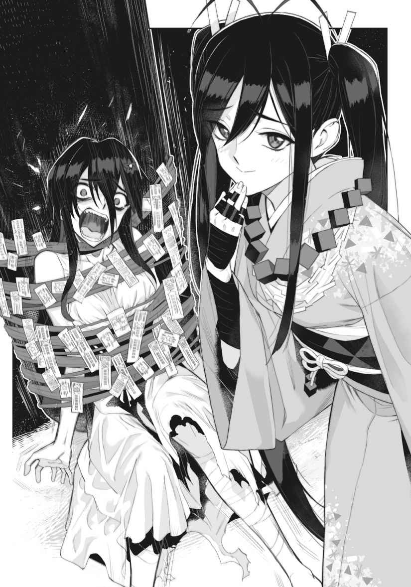
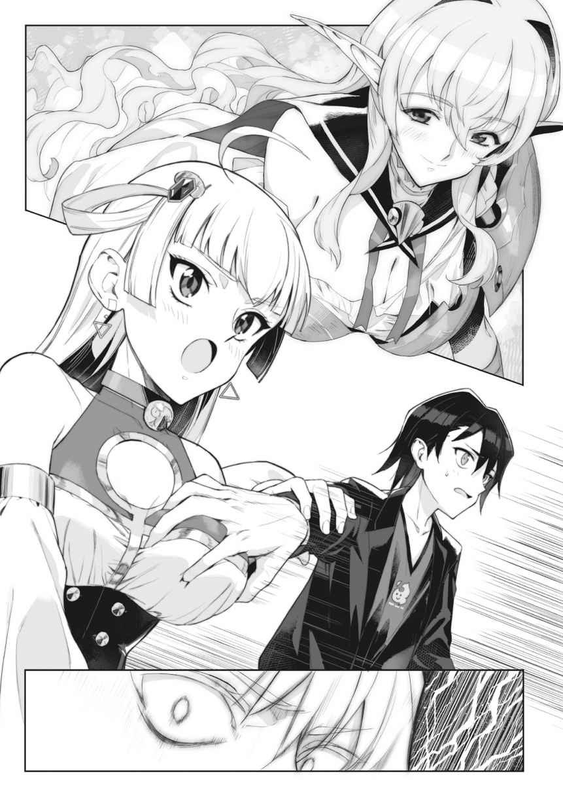

| 【配信中】女神チャンネル！ え、これ売名ですの！？ (GA文庫) | |
| 徳山 銀次郎 | |
| SBクリエイティブ株式会社 (2019) | |
【配信中】女神チャンネル！ え、これ売名ですの！？
徳山銀次郎
本書に掲載されているコンテンツの著作権等の知的財産権およびその他すべての権利は、ＳＢクリエイティブ株式会社または正当な権利を有する第三者に帰属します。
本書の内容を権利者の許諾なく複製・複写・翻案・放送・出版・データ配信（送信可能化を含む）などすることはできません。
カバー・口絵 本文イラスト
ｓｈｒｉ
ＹｏｕＴｕｂｅｒ、
早朝五時半には目を覚まし、二度寝することもなくベッドから身を起こす。軽いストレッチをしたならば、すぐさま二階の自室から一階にある洗面所へと移動、冷水で顔を洗い、歯を磨き、シャキシャキと規則正しく動く。
完全に眠気を取っ払ったあとはダイニングに向かい、電気ポットに水道水を
葉の上には米粒ほどの小さな
「ほーら、おまえのエサはこのトマトじゃないぞー。こっちで立派な巣をつくれー」
朝の蜘蛛だったか、夜の蜘蛛だったか、どちらかを殺すのは良くないだなんてことを、昔に祖母から聞いたことがある。どちらか覚えていないなら、とりあえずどちらも殺さなければいい。そもそも
ベランダの隅に蜘蛛を逃がしてやると、そのままリビングに戻り、台所の床に邪魔くさく置かれた大きなダンボール箱からカップラーメンを一つ取り出す。通販で箱買いしたプライベートブランドの一〇〇円にも満たない主食である。
ここ数日このカップラーメンしかお
「いただきます」
食前の
ゆっくりとその味を
そして、撮影機材の準備をし、カメラの前に座った。
毎朝七時から欠かさずに始める動画撮影。
ＹｏｕＴｕｂｅｒならばお決まりの定番挨拶がある。
「はいどうも」「ハロー」「こんにちは」
しかし彼の場合は少し違う。
ほっぺたを両手でパンパンと二度
そして夕立朱人はスイッチ を入れた。
「よう、クズども」
炎上系ＹｏｕＴｕｂｅｒ、夕立朱人の朝は早い。
五月十八日、昼過ぎ。
グリグリ、グリ。
ピコピコ、ピコ。
その動きと連動するように画面上のカーソルが位置をずらす。
攻撃値、防御値、魔力、素早さ、運･･････。
「あー、どれにしようか迷う･･････」
朱人が手に持っているのは人気メーカーが発売したばかりの携帯ゲーム。テレビにつなげれば据え置き機としても使える、今
「せっかくのフルステータスアップアイテム･･････どれを特化させるか、くそ迷う！」
「なあ、どれがいいと思う？」
独り言ではない。一見、いもしない
テーブルの上に置かれたノートパソコンの画面上にコメントが流れている。コメントを打っているのは俗にリスナーと呼ばれる視聴者。そのリスナーに向けて朱人は喋っているのだ。つまり危ない独り言でもなく、動画撮影でもなく、これは生配信なのである。
『なんでもいいだろ』『本当おまえ優柔不断だな』『どうせ流行りにのってやってるだけだからすぐ飽きるくせに』『そんなことよりこの前の物申す動画、また炎上してたな』『こいつの場合わざと炎上
次々と流れてくるリスナーのコメントは
「てか、そうだよ。その動画も炎上してる割に全然再生数伸びてないし、どうなってんの？ みんなも知っての通り、
『知ってるもなにもそれが通常状態』『登録者数が伸びてた時がまずない』『朱人今日もキモいな』『流行りのネタに食いついて売名狙ってるのがバレてんだよ』
「いや、みんな、
『え、朱人って高校生だったの？ 学校行ってないのに？』『高校生名乗るなｗｗｗ』『高校生× ニート○』『星崎ナイトをディスる動画出して炎上させることしかしてないからだよ』『大物ＹｏｕＴｕｂｅｒの名前使わなきゃ再生数稼げないんでしょ』『自業自得。炎上系狙ってブランディング間違えたな』
「そんなこと言ったって、なんだよ！ 俺が炎上系や物申す系以外のネタを撮ったところで
『確かにｗｗｗ』『素直ｗｗｗ』『
次々と流れてくるコメントを目で追いながら朱人は、カップラーメンの
「ほら見ろ、おまえら。俺の昼食はあっという間に終わったぞ！ 今月はずっとこのラーメンで生活なんだぞ！ ううう、
『泣くなｗｗｗ』『てか自炊しろよ』『まあ、一人暮らしの男子高校生に自炊はハードル高い』『高校生× ニート○』『そのネタやめろｗｗｗ』『いや意外と朱人は自炊とかできると思うぞ』『ネタでカップラーメン生活？』『かもね』『どうでもいい』『それな』
朱人はしっかりとごちそうさまの
「だいたいなんであんなインチキ超能力者が登録者数二〇〇万人も行ってるの？ やばくない？ あんなんフェイクに決まってんじゃん。みんな信じてるの？」
『まーたナイトのディスが始まった』『これは朱人に同意。ナイトの超能力は怪しい』『いや動画見てこいよ。あれは本物』『朱人の
「いや、俺の呪いは本当だっていつも言ってるだろ。ほら、これ」
朱人はＴシャツを胸の位置までめくりリスナーに見せつける。
朱人の胸には黒い
『でたｗｗｗ 呪いで受けた傷ｗｗｗ』『はいはい手術痕』『お、今日も呪い設定か』『死の呪い。朱人は死ぬ』『死んでんなら早く
「ああもう、ちょっと待ってなよ！」
そう言い残し、朱人はカメラの前から席を立った。そのまま向かった先は隣の部屋。室内は家具やダンボールが散乱し、物置き状態である。その中を泳ぐようにかき分けながら進み、小さなタンスに手をかける。一番上の引き出しから取り出したのはキャラクター物のぬいぐるみ。手のひらに収まるほどのサイズだ。
名前はオッグマン。戦隊物をモチーフにしており、数年前に朱人が住むこの
そんなほこりまみれで灰色になったオッグマンは胴体に
『でたｗｗｗ オッグマンｗｗｗ』『なにこれ？ こわい』『呪いのオッグマン、キター！』『え......なにこれ』『マジでやばいやつ？』『オッグマンｗｗｗｗｗｗ』『呪いのオッグマン。朱人は死ぬ』『何回朱人死ぬんだよｗｗｗ』
「いいか、これは呪いのオッグマンなんかじゃない、逆だ。このオッグマンが呪いを抑えてくれてるんだ。この御札を取ればたちまち呪いは力を取り戻し、俺の周りは死で
『朱人ってこんな
「俺は厨二じゃない！ 厨二は星崎ナイトじゃん！ 俺じゃないだろ！」
『ｗｗｗｗｗｗｗｗｗｗｗ』『確かにｗｗｗｗｗｗ』『ナイトの厨二はあり』『朱人激怒ｗｗｗｗ』『きんもーｗｗｗｗｗｗ』
「まったく......あれ、もう時間か。じゃあ、みんな頼むぞ！ もっと登録者増えるようにツイッターとかでアカヒトチャンネルの宣伝してくれよ」
『だまれｗｗｗ』『売名ｗｗｗ』『うるせーわ売名野郎』『任せて朱人！』『ピーチひめもだまれｗｗｗ』
流れてくるアンチコメントを見ながら朱人は撮影のスイッチをオフにした。
一息だけつくとゲームのセーブだけして、オッグマンを元の引き出しへ戻しにリビングを出る。数分後、再びリビングへ戻ると朱人はソファへと身を投げた。
毎朝の動画撮影、そして撮り終えた動画の編集作業は大変だ。午前中は撮影で
それは朱人にとって休憩みたいなものである。
だだっ広い
一年前までは両親と妹が一つ屋根の下で暮らしていたが、ある日に父の仕事上アメリカへ居住地を移すこととなった。当たり前のように家族は日本を離れる準備をしたが朱人だけは違った。この小熊市に残ることを決めたのだ。なぜかって、理由は簡単だ。
彼が引きこもりだからだ。
引きこもりが海外に行けるわけがない。なんせ家からすら出ないのだから。
結局、朱人だけがこの家に残った。
父親は朱人のわがままに、残るなら生活は自分でどうにかしろと突き放した。いや、実際は家を引き払うわけでもなく、朱人一人のために維持をさせる費用を許容するのだから、息子のわがままを受け入れる甘い選択をしてくれたのだろう。
朱人も当然のようにその条件を受け入れた。別に父親の発言に対してケンカを買ってやったということではない。もともと持ち家なので家賃はかからないし光熱費や食費だって一人分なら大した金額にならない。ならば自分で稼いだ金でやりくりできる。なんせ朱人はその
自分が好きでやっていること。自分が見つけた好きなこと。そのことに朱人なりのプライドと真剣に向き合う覚悟がある。『好きなことして生きる』それこそがＹｏｕＴｕｂｅｒのキャッチフレーズ。炎上だって売名だって、ＹｏｕＴｕｂｅに関しては真剣にやるのが朱人のポリシーだ。だから朱人はＹｏｕＴｕｂｅｒを日本で続けるためにも残ることを決意した。
と、いったものの、やはりなんの才能もない、ただの平凡な高校生がＹｏｕＴｕｂｅｒの広告収入だけで一人暮らしをするのはちょっと厳しかった。そんなに現実は甘くなかった。
ゆえに貧困生活。せっせと真面目に撮影をし、ほぼ毎日動画をアップしているので、最低限の生活はかろうじてできていたが、まあ、
しかも周りに頼る人もなく一人での生活。ポツンと広い家で残った引きこもりの生活。
だから、朱人にとって生配信とは休憩なのである。誰かとコミュニケーションが取れるたった一つのツール。引きこもりの、なにかを
とはいえ、これはこれで朱人は気に入っていた。この生活の方が学校へ行くよりか、何倍も楽しい。
気づけば高校三年生。受験のことなど考えていない。そもそも出席日数が足りない。でも気にしない。
ＹｏｕＴｕｂｅｒで一発当てて大物になればいいのだ。
夕立朱人、最高の引きこもり生活である。
◆
翌日、五月十九日。始まりは唐突だった。
珍しく寝坊をし、十時過ぎに目を覚ました朱人は自室から台所に向かった。
昨夜は編集作業でかなり寝るのが遅くなってしまった。その影響が出てしまい四時間半も遅れた起床。だが、幸い今日は日曜日。日曜は動画撮影を休む日だと自分の中で決めている。なので、多少の寝坊は許容範囲だ。これもセルフマネージメントの一環である。
右手でスマホをいじりながら、コップ一杯分の水道水を
そして、水を飲みほしたあとに、ようやく朱人はその事実を知った。
『【速報】
まとめサイトのアプリを開き最初に出てきたタイトルだ。
特にインパクトのあるタイトルというわけでもないが、ことの異常さに気づけたのはその下に並んだ記事がほとんど同じ内容だったからである。
『【動画】東京タワーがやばい』
『東京タワーにドラゴンいるんだけど』
『【悲報】東京オワタｗｗｗ 逃げろ【ドラゴン】』
「いやいや、ドラゴンて。なんのイベントだよ」
半ばバカらしいと思いながらも、ずらっと並ぶタイトルの中から適当に記事を選びタッチする。リンクを進んだ先にはなにが起こっているか
東京タワーの展望台上部にドラゴンがいたのだ。
朱人は目を疑った。本当にだ。本当に本当に本当だったのだ。
太い二足の足を器用に東京タワーに
他の記事にも同じような画像が貼られている。いくつか動画も上がっていたので確認してみると、どうもネタで作られたフェイクとは思えない。それくらいリアルで臨場感がある。
朱人はテレビの前のソファに座りゆっくりとニュースを見た。どうやら、このドラゴンは今日の早朝に姿を現し、それから、かれこれ六時間近く東京タワーに居座っているらしい。幸い今のところ暴れる気配は見せずに大人しくしていて、東京が火の海になるなんて悲劇にはなっていないようだ。
防衛省の動きとしては現場周辺の封鎖はすませたようだが、ドラゴンに対してはなにもせず様子を見ているらしい。下手に刺激して暴れられてもいけないし、そもそもドラゴン対策のマニュアルなどなく、絶賛会議中なのだろう。
一通り状況を把握した朱人は再びスマホをいじり始めた。ツイッターでは『ドラゴン』『東京タワー』が早速トレンド入りしている。ヤフーニュースもドラゴン関係の記事ばかりだ。
「うわー！ やっちゃった、くそ！」
朱人は寝坊したことを深く後悔した。よりによってこんな日に。完全に出遅れた。
封鎖される前に現場に行って動画を撮っていれば、かなりの再生数が期待できたはずだ。
今さら行ったところで遠目からの微妙な映像しか撮れないだろうし、もうさんざんそれ関係の動画はＹｏｕＴｕｂｅにもアップされている。
朱人の住む小熊市から東京までは新幹線を使っても二時間。労力と経費を考えても既に行く価値は皆無だ。ビッグウェーブに乗るタイミングを逃してしまった。
まあ、でも引きこもりの自分に東京まで行く体力なんてないし、まず、着ていく服がない。
どっちにしろどうしようもなかった。そう自分に言い聞かせる。
そういえば数少ない友人のうち一人だけ東京住まいがいる。実際の様子はどうなのか気になり、その人物にＬＩＮＥで連絡を入れることにした。
「ドラゴン出てるみたいだけど、現場はどうなの......っと」
メッセージを送ってからモノの数秒で既読になり返信がくる。相手も暇なのだろうか。
『見てないからわからない』
「東京に住んでて見に行ってないのか、もったいないな」
『見に行って動画撮ってきてよ』
『面倒くさい』
「相変わらずだな......」
朱人は
『頼むよ』
『そのうち見に行くから見てきたら報告する』
この様子だと数日は報告がないパターンである。というか行くかどうかも怪しい。
もともと冷めた性格をした友人なので仕方ない。
あきらめた朱人は、返信せずにそのままスマホを放り投げた。
いったいなにが起こっているのか。あのドラゴンはどこから来たのか。そもそもこれは現実なのか。
まさか同じ日本であんな非日常が起こっているなんて到底思えない。
テレビもＳＮＳもまとめサイトも、画面の先では大騒ぎしている割に、肉眼に映る風景はいつもと同じだ。
まるで自分だけ一人、
この変哲もない日常がなにか劇的に変わるんじゃないかという期待で胸が
◆
二日が過ぎた。
あれから相変わらず世間はドラゴンの話題で持ちきりである。当のドラゴンはというと
一部では『ドラゴンが体勢を変えようと少し動いた時、背中のあたりに小さく人影が見えた』だなんて都市伝説的な
朱人も結局このドラゴンの話題に
昼過ぎ。そんな経緯もあり朱人は動画の
「わかってるよ。あの動画はすべった。俺が悪かったよ、ごめんな」
しかし朱人も長いこと炎上系でやってきているため、分が悪い時の対処も心得ている。
こういう場合は下手に反発せず、自分のミスを認めることによってクールダウンを狙うのが得策だ。
「ていうか国ってなにやってんの？ あのままずっと放っておくわけ？ 急に暴れだしたらどうすんの？ やばくない？」
『自衛隊が見張ってるから大丈夫』『都内住みだけど正直こわい』『そう簡単に動けないんだろ』『リアルにゴジラ映画みたいになってるな』
意外にまともな反応が返ってきてしまい、どうも盛り上がりにかける。やはりこういう時は鉄板ネタを使うしかないようだ。
「国が動かないなら星崎ナイトが動けばいい。おいナイト、見てんだろ？ おまえのその超能力が活躍する絶好のチャンスじゃないか。その超能力でドラゴン退治してみろよ！」
『ナイトディス始まった』『ナイト関係ねーｗｗｗ』『ナイトは朱人の配信なんて見ません』『確かにナイトの超能力で退治できるんじゃね』『ナイト信者乙』『またナイト使って売名かよ』『持って行き方が
上々の反応である。
「世界の危機だぜ？ アベンジャーズみたいなヒーローが必要じゃん？ おいナイト、おまえ本当に超能力者なんだよな。じゃあ世界を救う救世主になってみろよ。おまえがやるなら俺もやってやるぜ！」
『おまえがなにやるんだよｗｗｗｗ』『やっぱり朱人はヒーローに憧れているｗｗｗ』『さして危機でもない』『まだ被害出てないしなｗｗｗ』『優しいドラゴンだったらどうすんだよ！』『ドラゴン、トモダチ、オレタチ、トモダチ』『優しい世界』
緊迫感のないコメントだ。ただ、実際のところ朱人はそんな能天気なリスナーの心情を理解していた。おそらくコメントしている大半の人間は東京から離れたところに住んでいるのだろう。現場周辺に住んでいる人間は恐怖もあるだろうけれど、現場から離れている人間にとっては、「ドラゴンが出た」と言われても「自衛隊が出動している」と言われても、実感などわかないものであり、そうそう危機なんて感じないのだ。
そもそもこのドラゴンは既に二日も大人しくしているのだから、それこそ凶暴な生物ではないのかもしれない。
かといって、そんな風にリスナーに同意しているだけじゃ盛り上がらない。平和というのは退屈なもので、ネット世界でも和気あいあいの
もう一発、星崎ナイトの名前を使って暴言でも
瞬間──窓の外で
眼球の奥を直接ついてくるような強烈な光が視界を真っ白く染め上げる。あまりの
朱人は首をかしげ、パソコンの前に戻りコメントを確認した。
『なに今の？』『カメラ壊れた？』『なんか光った』『どうした？』
「いや、わかんない。雷かなんかかな」
そう言ったところで、今度はズンと地面が沈むくらいの強い衝撃と共に、尋常じゃないほどの大きな破裂音が鳴り響いた。
「うおおををおお！」
似てはいるが雷の音ではない。地震とも違い、ほんの一瞬に全てのエネルギーを凝縮したかのような衝撃だ。まるで巨大な風船が割れたかのような。
どちらにしろ外でなにか起こっているのは間違いない。
『朱人ビビりすぎｗ』『なんかやばくね』『なにが起こってんの？』『外？』『朱人見てきて』
「え、やだよ外出たくないし」
『さすが引きこもりのかがみ』『それくらい見に行けよｗ』『ついでに学校行ってこい』『それはやめたげてｗｗｗ』『動画のネタになりそうだし行けよ』『はやく外出ろ引きこもり』
「うるさいな......車の事故かなんかだろ」
『車は事故っても光りません』『引きこもり面倒くさがりすぎｗ』『東京のドラゴンみたいになんかあるかもだぞ』『はよ行け』
朱人は少し考える。確かに奇妙な現象だし、本当に東京のような非日常的なことが起こっていたとしたならネタとしてはインパクトがある。あとでこの配信の様子を編集して動画投稿すればけっこうな再生数になるかもしれない。
朱人は無言で立ち上がり、部屋の床に散乱した洋服の中からＴシャツを一枚手に取った。
『おっ動いた』『引きこもりがやる気になった』『学校行くの？』『だからやめてやれｗｗｗｗ』『さすが朱人わかってる』『いいねいいね』『はよはよ』
寝間着を脱ぎＴシャツに
『え？ まじで学校行くの？』『なんでブレザー？』『初めて高校生らしい格好ｗｗｗ』『なんでｗｗｗ』
「着てく服がないんだよ！」
朱人は不貞腐れながら言う。
『ｗｗｗｗｗｗｗｗｗ』『クソワロｗｗｗｗｗ』『引きこもりあるあるｗｗｗｗ』『確かにブレザーのジャケットでも
「ちょっと見てくるだけだからな。そんな遠くまで行かないからな」
『おｋ』『ｗｗｗｗ』『つべこべ言わずはよ行け』『さっさと行け』
「スマホに切り替えるから一旦切るよ」
そう言って配信を切り、スマホで動画配信用のアプリを起動させる。そして外配信の準備をすませると、そのまま朱人は玄関へ向かい、
久しぶりの
やはり外の空気は苦手だ。学校の同級生に見られているかもしれない。できるだけ下を向いて歩こう。
「見えてる？」
スマホで配信を再開し、リスナーに問いかける。
『おｋ』『わこつ』『見えてる』『わこつー』『ｗｋｗｋｗ』
特に配信トラブルもなさそうなので朱人はゆっくりと
「やばい、疲れた。てか
『ブツブツいいすぎｗ』『疲れんの早すぎだろｗｗｗ』『ひきこもりだから外に慣れてないｗｗｗ』『ｗｗｗｗｗｗｗｗ』『ひきこもり黙れｗｗｗ』
小熊市はド田舎である。朱人の自宅周辺も例外なく、アスファルトの一本道はもちろん一車線幅であり、その周りは畑やビニールハウスで囲まれている。見通しは抜群で視界を
そんな見晴らしのよさだからこそ、たった数分歩いただけで朱人はなにが起こっているのかを理解することができた。
数キロ先。近からずも遠からずの位置に見える山の小さな崖に、それはいた。
太ましい二足の足を崖の上に載せ、大きな翼を広げ天を
「まじかよ......」
朱人はドラゴンを目にしたのだ。
すぐにスマホのカメラを向ける。
「おい、あれ見ろ！ いた！ いたぜ！ おい！」
『え？』『まじ!? 』『二匹目じゃん』『キタ──！』『二匹目！』『本物!? 』『やべー！』
「俺が見つけたんだよな！ 俺が見つけた！ やったー！」
『は』『オレらが
「とりあえずもっと近くに行って映そう。あー、ちゃんとしたカメラ持ってくればよかった」
朱人は公道を早歩きで進み始めた。二日前は出遅れたが、今回は逆に一番乗りだ。胸の高鳴りが収まらない。自然に口角が上がっていく。
「よっしゃ......っしゃぁ......！」
ドラゴンは山の中腹で地上を見下ろし鎮座している。
東京のドラゴンと同じで、暴れる様子はないようだ。それどころか警戒心のカケラもなく、まるで犬のように片一方のうしろ足を上げ、鉤爪を器用に動かしながら首元をポリポリとかき始めた。
『なんかドラゴンかわいいなｗ』『ほのぼの』『名前つけよう』『ドラ太郎』『ネーミングセンスねーｗ』『オッグマン』『やめろｗｗｗｗｗ』『オッグマンｗｗｗｗｗｗ』
リスナーもその様子に、朱人そっちのけで談笑し始める始末だ。
これなら、もっと近づいても大丈夫そうだと、朱人はさらに早足になる。
姿は東京のドラゴンとほぼ変わりない。
『朱人映像ブレすぎ』『もっとちゃんと映せ』『見えねーよ』
リスナーから入る注文に朱人は素直に従い、歩くスピードを
別にリスナーに見せたいわけじゃないが、明確な映像を残しておかなければいけない。この映像をＹｏｕＴｕｂｅに投稿すれば、間違いなく一〇〇万再生はくだらないだろう。一躍、時の人となってチャンネル登録者が増えてくれれば言うことなし。
そういう意味では見晴らしのいいこのロケーションは撮影にピッタリである。山までの間を遮るような建物もない。撮影の邪魔になるのは、せいぜいビニールハウスぐらいなものだ。
朱人は初めて小熊市が田舎で良かったと思った。
それにしても、ドラゴンはなかなかアクションを起こしてくれない。存在自体が
朱人は一旦スマホを山の方へ向けるのをやめ、その人物を注視する。
距離にすると一〇メートルほど先。行く手を
それはまるで幻想だった。
キラキラと
そして特徴的なとがった耳────
まぎれもない絶世の美女だった。朱人でなくても彼女を見たら誰しもがこう言うだろう。
エルフがいる────と。
疑う余地もない。それくらい高貴で
カメラ越しに彼女の姿を確認したリスナーも同じことを思ったのか口をそろえる。
『え!?
エルフいない！！？』『やばｗｗｗ』『エルフじゃんｗｗｗｗ』『まじｗｗｗｗｗ』『ドラゴンの次はエルフかよｗｗｗｗｗ』『オーラやべーｗｗｗｗｗｗ』『ドラゴンの飼い
ドラゴンが出ただけでもパニックだというのに、次はエルフである。もう日本はどうなってしまっているのだろうか。ファンタジー世界から修学旅行にでも来ているのか。
エルフは遠く山の方を見つめている。ドラゴンのいる方角だ。
関係ないが横顔がすさまじくかわいい。さすがエルフだけある。身長も高く、山を見つめる姿がさまになっている。
エルフはこちらに気づいていない様子だ。朱人はさながら芸能人にでも会ったかのような高揚を抱きながら、彼女の方へと再び足を動かそうとした。
しかし、一歩目が地に着く前に、彼女のさらにその奥からクラクションの音が鳴った。
見ると、軽トラックがエンジン音をうるさく響かせながら止まっている。
つまり、朱人とは反対側からやってきた軽トラックが、道のど真ん中で突っ立っているエルフのせいで立ち往生しているのだ。
田舎と軽トラといえば黄金コンビなんて呼ばれるくらいのツーマンセルなわけだが。エルフと軽トラなんてのはさすがにお茶でも吹き出したくなるほどの不釣り合いな光景である。
再び鳴ったクラクションにようやく振り向くエルフ。朱人の位置からは後頭部しか見えないが、彼女はおそらくキョトンとした顔で軽トラックを見つめていることだろう。
「なんでしょう、この不細工な鉄の塊は？」......頭の中でアテレコしてみると面白いほどにしっくりくる。
運転手は運転手で、おかしな格好をした外国の美人さんにイライラしているに違いない。その証拠に、いつまでたっても動こうとしないエルフに
四十代くらいの、なかなかハンサムなオッサンである。白いタンクトップからは
「おい、邪魔だからそこをどけ！ 日本語わかるか!? 」
運転手の男は右手をポケットに突っ込み、左手で、端に寄れとジェスチャーしながらエルフに迫る。しかしエルフは状況が理解できているのかいないのか、まったく動くそぶりを見せない。
これは、ちょっと助けてやるべきか......と、朱人が思ったと同時に、エルフがふいに右腕を軽トラックに向け、手のひらを開いた。
すると、突如として風が放たれトラックを包み込んだ。
トラックが宙に浮く。
運転手の男が目を丸くしている。朱人も同じく目を丸くしている。
風はトラックを一瞬にしてサッカーボールほどの小さな鉄くずに圧縮してしまった。まるで質量というものを無視するかのように。密度濃く、ギシギシに。
球状になった元トラックはガインと金属音を立てたあと、コロコロと地面へと転がった。
そしてエルフが言った。
「人間の男を発見。確か殺すのはだめだったか」
綺麗で鋭くなまめかしい声。
運転手の男はなにかを悟ったのか一目散に走り出した。そりゃそうだ。目の前でトラック潰されたら誰でも逃げる。
「ちっ......逃げてしまった」
エルフが能天気な声でつぶやく。運転手の男を追うような様子は見せずに、
「まあ、別に構わないか。もっと若い男がこっちにいるし」
エルフは朱人の方へとゆっくりと振り向く。
ニヤリと口角を鋭く引き上げ、しっかりとこちらを見ていた。
めちゃくちゃ綺麗だ。恐ろしいほどに美しい。これがエルフか......と、男の本能に負けている場合じゃない。
朱人は数分前の自分の思考に笑いそうになっていた。
なにがキョトンとした顔だ。
キョトンとしている奴が、あんな目をするはずない。
冷たく、鋭く、座っている。
感想は一つ。
「こわいこわいこわい、なんかこわい！」
『なにが起こったの？』『なんかやばくね？』『よく見えない』『朱人ちゃんと映せ』『エルフがなんかしてなかった？』『トラックつぶしてなかった？』『え、なにそれ怖い』『状況がわからん』『ちゃんと実況しろよカス』『やばいやつ？』『わからん』『これまじでやばいやつ』
朱人の右手に握られたスマホの画面に大量のコメントが流れている。
しかし、もうそんなことを気にできるほどの状況でなかった。明らかにやばい香りがしているのだ。あのエルフは想像上のエルフとはなにか違う。
人の悪意や敵意に敏感な朱人はすぐに悟った。
「うん、よし逃げよう」
即座に朱人は振り向き、走り出した。
一目散に来た道を引き返す。
走って走って走りつくし、
その最中、後方からけたたましい、なにかの泣き声が聞こえる。台風で吹き荒れる強い風が細い路地を通る時と似たゴオオオオという音の中に甲高い金属音が混じったような恐ろしい鳴き声。振り返らなくてもわかる。ドラゴンのものだ。
朱人は奥歯をギシギシと
しばらく走ると、ようやく畑だらけの地域を抜けて細い道と交差する大通りの陸橋が見えてきた。助けを求めたいが、相変わらず車は通っていない。かといって体力も限界である。そのうち通ることを期待して橋の下で身を
陸橋の陰に隠れながら、恐る恐る道を覗いてみる。
エルフの姿は見えなかった。なんとか
そう安心したところで、先ほど聞いたけたたましい鳴き声が再度、空に響いた。朱人が上を見上げると、ドラゴンが山から離れ、小熊市の空を旋回していた。
そのドラゴンが急に空中で止まる。そしてドラゴンの前に
強烈な破裂音が空気を揺らし、大きな衝撃が地面を通して伝わる。
「なんだよ......あれ」
ドラゴンの口から放たれた青白いレーザーが魔法陣を介して地上に
ドラゴンの口元にはゆらゆらと蒸気が立ち込めていた。
「なんでだよ......ドラゴンは大人しいんじゃなかったのかよ」
東京のドラゴンとはまるで違う。凶暴で、恐ろしく、攻撃的な態度。
先ほどまで大人しくしていたのが
そして、ようやく朱人はあることを確信した。
震える肩は止まらない。
奴らは『敵』だ。
一つ目は『三次元の女の子』だ。かわいければなおのこと。
小学三年生の
学校の遠足で近場の山へと登ることになった。
朱人は仲のいい男子と道中の虫を捕まえたりして登山を楽しんでいた。土をいじくってミミズを手に取ったり、ダンゴムシの背中を
そんな往路の中腹に差し掛かった時であった。
朱人の前を歩いていた女子が木の根に足を取られ転んでしまった。
朱人は
女子は差し出されたその手を
しかし彼女は朱人の手に触れる直前で声を上げた。
「きゃっ！ 朱人くん汚い!! 」
やまびこが返ってくるほど、その場一帯に響く声。
さんざん土をいじくり、虫を触ってきた手のひらは確かに真っ黒で、お世辞にも
すぐさま他の女子が集まりだし、朱人を集中攻撃し始める。
「朱人くん、なにしたの!? 」「さいてー！」「きったなーい！」
一緒に遊んでいた男子は朱人を
「朱人だっせー！」「女子なんてほっとけよ朱人」「朱人そいつのこと好きなんじゃねーの!? 」
しまいには先生がやってきて、ロクに現場も見てなかったくせに知ったような口を叩き出す。
「こら、夕立、遠足だからってはしゃぎすぎるんじゃない！ 女子には優しくしろっていつも言ってるだろ」
朱人は必死に弁明したが、遠足の高揚感からか周りはちょっとしたイベントが起こったというテンションでまともに取り合ってくれない。転んだ張本人の女子もそさくさと自力で立ち上がり、お尻に付いた土をポンポンと払うと、たいして
別に気にすることでもない......朱人もそう自分に言い聞かせた。拒絶されたその手を見て。
それ以降、朱人が日曜夕方に放送しているオッグマンを見ることはなくなった。
翌年、朱人はアイドルの
百枝立花が所属する大人気アイドルグループのＭＶをＹｏｕＴｕｂｅでたまたま見た朱人は、その五分弱の間で彼女に一目ぼれしていた。当時まだ十四歳の新人だった彼女は、ＭＶの中でもそこまで目立つ位置ではなく、映っている時間も短かったのだが、朱人の目には百枝立花の姿が誰よりも輝いて見えた。
以後、朱人は小学校を卒業するまでの三年間アイドルオタクとして生活を送った。ランドセルには百枝立花の缶バッジを大量に付け、学校へアイドル雑誌を持ち込み休み時間に熟読、遊び盛りの年齢にも
そんな小学生時代だったのだから、次第に周りの男子も離れ、いつの間にか中学校へ上がる頃には友達が一人もいなくなっていた。それでも朱人は充実していた。それぐらい百枝立花に入れ込んでいた。
そんな中、朱人が中学一年生の二学期のことである。
百枝立花に、アイドルとしての宿命ともいえる事件が起こった。
スキャンダルだ。ＳＮＳの裏アカウントが流出し、そこでつぶやかれていたファンをバカにする言葉が拡散されてしまったのである。
────今日の握手会で「将来りっかたんをお嫁に迎えに行くから待っててね」とか耳打ちしてきたガキがキモすぎて
清純派できていた百枝立花にとっては、イメージが
ただし、これが百枝立花のアカウントだという決定的な証拠はなく、本人や所属グループの運営は当然のごとく事実を
結果だけ見れば、よくあるスキャンダルの一つである......で片付く内容だ。
しかし、朱人にとっては違った。
事件に対しての熱量が他のファンよりも一段階ほど上であった。
なぜなら、この裏アカウントが百枝立花のものだと確信していたからだ。
朱人はこのスキャンダルを見て、十四回マクラに頭を打ち付け、十四秒マクラに顔をうずめて叫んだ。
小学生の時からお
アイドルとの握手は十秒もない。一度のチャンスに思いの
そんな思い出のこもった
いったいこのアカウントは誰のだ、と考えれば......それはもう十中八九、百枝立花である。百枝立花の裏アカウントであるに違いないのだ。
なんせ耳打ちしたのだ。他者に聞かれたくないからこそ耳打ちするのである。ならば、その内容を知っているのは耳打ちした本人と......耳打ちされた本人だけだ。
朱人は自分の手を見た。
よくよく思えば、百枝立花は、遠足の時に転んで尻もちをついたあの女子と、よく似ていた────
以来、朱人は三次元の女の子を嫌いになった。
二つ目に大嫌いなものはＹｏｕＴｕｂｅｒである。
この理由は単純。自分より再生数を稼いでいる大物ＹｏｕＴｕｂｅｒへの単なる
朱人がＹｏｕＴｕｂｅｒとしてデビューしたのは中学一年の秋。
百枝立花のスキャンダル以降、趣味を失った朱人は虚無感に包まれた日々を送っていた。
学校には友達もいなく常にボッチ状態。今まではそれもアイドルという趣味があったから気にならなかっただけで、唯一の生きる楽しみを奪われた朱人にとって、学校は一気に苦痛の場と化していた。
そんな苦痛と退屈を
別に画期的に面白いわけではなかった。しかし、嫌なことを忘れてボーっと見るにはちょうどいい退屈しのぎだった。
ＹｏｕＴｕｂｅｒのほどんどは
次第に朱人は自分でもできるんじゃないかと思い始めた。
親に頼んでＷＥＢカメラと編集ソフトを購入し、早速、動画を一本撮ってみる。一人で撮る動画なので大それた企画ものなどできず、とりあえずは「ただ
ただ叩くだけでは面白くない。身を削り、
それが意外に好評で、再生数は二週間で十万を超える結果になった。初めての動画投稿としては大成功と言っていい伸び率だ。
朱人が炎上系を名乗り始めるキッカケである。
と、まあ、スタートは良かったのだが、その後の投稿は再生数が伸びず、登録者も全然増えない。生配信も始めるようになりコアなファンや粘着アンチはついたものの、ＹｏｕＴｕｂｅｒとしては底辺の部類である。その結果、朱人は大物ＹｏｕＴｕｂｅｒたちに嫉妬するようになった。あんな
どんなものでもそうだ。オーディエンスでいるのとプレイヤーに実際なってみるのとでは、感じ方がまるっきり変わってしまうものである。
しかしＹｏｕＴｕｂｅ自体はとても楽しかった。百枝立花を追いかけていた時と同じくらい充実していた。その後、朱人は動画制作に夢中になった。高校へは一応進学したが、行くのもだんだんわずらわしくなっていた。そして朱人は引きこもりになった。
さて、三つ目の大嫌いなもの。
異世界ファンタジーアニメだ。異世界ものならラノベでもいい。異世界転生しかり王道ファンタジーしかり。その
もう気づいているかもしれないが、朱人の大嫌いなものとは「元・大好きなもの」である。大好きなものに理想を追い、それに裏切られた結果、評価がクルリと反転する。
だからこそ朱人は、絶対に裏切らないもの、天変地異が起ころうとも裏切られようのないもの、すなわち非現実の世界に没頭した。
異世界転生のラノベを読みあさり主人公に自分を置き換え感情移入した。ネットゲームに金をつぎ込み承認欲求を満たした。深夜アニメを片っ端から視聴しヒロインたちに恋をした。朱人にとって、それらは一番の娯楽であり、
じゃあ、果たしていつ朱人は大好きだったファンタジーの世界を嫌いになったのか。
────今だ 。
決して裏切らないはずだったファンタジーが、しかもあのエルフが、優しくて綺麗なお姉さんであるはずのエルフが、トラックぶっ
そんなもの聞いていない。エルフはもっと、こう、癒やしの存在のはずだ。聞いていない。断じてあんな
まさに異世界
ふと、地べたについていた尻のあたりで
配信が止まっている。サイトで定められている枠内の時間が過ぎたのだろう。
画面上にはＬＩＮＥのプッシュ通知が映し出されていた。
そのままタップして確認する。
『東京タワー見てきたけど、規制が厳しくて近くまで行けなかった』
東京の友人から今さらな返信が来ていた。こっちはそれどころじゃないというのに、間が悪い友人である。しかし、こんなのんきなメッセージが入ってくるということは、東京のドラゴンはこちらと違い大人しくしていることがうかがえる。東京はまだ平和のようだ。
『東京よりこっちがやばい。暇なら助けに来てほしい』
友人のメッセージに対して適当に返事をしてスマホをそのままポケットにしまう。そして、朱人は静かに立ち上がりながら気持ちを整理した。
とりあえず逃げよう。エルフもなんか怖いし、ドラゴンがやばい。災害レベルだ。小熊市からできるだけ遠くに逃げるべきだ。電車は動いているだろうか？ 自分が所持している最速の交通手段はママチャリだ。頼りないが生の足を使うよりはマシである。一回家に帰って取ってきたほうがよさそうだ。
そのためにはドラゴンとエルフに見つからないようにしなければいけない。
ドラゴンを動かしているのは多分エルフだ。ドラゴンの飼い主とかだろう。ファンタジー世界のエルフは高魔力の持ち主であり、またそれに比例するように
できれば彼女と出くわすことなく、そしてドラゴンにこの町が壊滅させられる前に小熊市を離れたい。
その一瞬の思考が悪かった。なにも考えずに本能的にその場を立ち去っていれば、最悪なタイミングは逃れていたかもしれない。しかし、結果論にすぎない。
既に目の前ではことが起こっているのだから。
蛍火のような幻想的で
白銀に輝く髪──金色の目──小さな
美少女が姿を現した。
少女と呼称するぐらい、あのエルフよりかは幼く見える。しかし、その美しさはエルフにも劣らず、形容しがたい不思議なオーラに包まれている。
そんな美少女の姿に、朱人は息をのんだ。
「おや......間違ってしまったようですわ」
少女が朱人を見て小さく
朱人は咄嗟に彼女の耳の形を確認した。......とがってはいない。普通の耳だ。ということはこの少女はエルフじゃない。だけれども、こんな登場の仕方をされたら察しはついてしまう。向こう側の人間だ。間違いない。種族はエルフじゃなくとも、エルフと同じ世界から来たに違いない。だとしたら今この場で朱人がとる行動は一つだ。
朱人は走り出す。
冗談じゃない。これじゃ異世界からの修学旅行ではなく襲撃旅行だ。
既に朱人の目にはうっすらと涙が浮かんでいた。照り付ける日光、田舎くさい土の
振り返ると、銀髪の少女がこちらに向かって走っている。距離を離すことができない。
上空ではドラゴンが町を見下ろしている。
「くそー！
普段、家に引きこもりっぱなしで運動なんてしない朱人は、何年かぶりの全力疾走で肺に穴があきそうになっていた。次第に意識は
かすんで見づらくなった風景の中、かすかに金髪の女性の姿が見えた。
まぶたを強く閉じ、もう一度しっかりと目に映ったものを確認する。
朱人の心は文字通り真っ二つに折れ、砕け散った。
容赦ない絶望が襲う。
そこにはエルフが立っていた。
足を止める......が、
エルフが朱人を氷のような目で見下ろしながらゆっくりと近づいてくる。
「それにしても弱そうな人間だな。若いだけだったか......」
「来るな来るな！ こわいんだよ！ なんかこわいよ！」
「うるさい豚だ。一人ぐらい殺しても構わないか」
朱人は両の足を
しかし、目の前には銀髪の少女が立っていた。
もう一度振り返り朱人はエルフを見た。
終わりだ。もう、どうしようもない。
エルフが朱人に向けて右手をかざす。
もしかしてトラックと同じことするつもり？
朱人は
そんなのんきな思考が死の直前に浮かんでくるだなんて、案外人間は強いのかもしれない。
エルフの手のひらが開かれた。
「カーソル
声がしたのは後方。エルフの右手から、例の『風』が飛んできたと同時。
『風』は朱人の身体に触れると、硬いなにかと接触しているような派手な金属音を鳴らした。その部分に熱を帯びるのを感じる。しかし、『風』は決して朱人の肉をトラックのように潰すことはなく、そのまま消滅していった。つまり朱人は無傷だ。
「どうして、貴殿のような方がここに？」
「それはあなたにも言えますわ。エルフ族」
答えたのは銀髪の少女。
「......我々の邪魔をすると言うならば、貴殿であっても容赦はしない」
「ずいぶん強気ですわね。まあ、
そう言って銀髪の少女は朱人を見た。
朱人は、二人の異世界人が交わす言葉を理解する余裕もなく、ただただ
「そう、
「そう思っているから引き下がると言ったのですわ────カーソル
「......っ!?
ステルススキル......極級の補助魔法とは、さすがの魔力と言ったところか。しかし、我々の
銀髪の少女はエルフの言葉に耳を
朱人はなにがなんだかわからずに
「ほら行きますわよ」
「いや説明！ 説明して！ 説明をしてください！」
「はあ......あそこのエルフ族には私たちの姿は見えていない。だけどエルフ族は魔法の術式を解読する能力があるから、その効果が解かれるのも時間の問題。これで急がなきゃいけないのはわかりました？ わかったらさっさと行きますわよ」
「雑！ 説明が雑！ そもそもおまえは味方なの!? 」
「面倒な人間ですわね、時間がないって言っているでしょ！ とりあえず走りなさい！」
「ええ......なに、こいつ、こっわぁ......」
仕方なしに立ち上がり銀髪の少女と走り出す。
彼女の言う通りエルフには朱人たちの姿が見えないのか、追ってくる様子を見せない。
直近の死が遠ざかっていくことで、朱人は次第に冷静さを取り戻していった。
「術式を解くとかなんとか言ってたけど、今はあいつに俺の姿が見えていないってことでいいのか？」
「だからそうですわよ。そういう魔法をかけましたわ。しかしエルフ族は自身の高魔力もさることながら、相手の魔法を解読し無効化することが得意な種族です。三十分もすれば魔法は解かれていると思いなさい」
その三十分の時間が早いのか遅いのかでいったら、多分、早いのだろう。そもそも剣と魔法の世界であるファンタジーで魔法を無効化するだなんて技術、早速チート級である。
朱人は改めて考える。やはり一刻も早くこの町から逃げなければ。そのためにも当初の目的地である自宅に向かう。自転車で逃げられるところまで逃げよう。
そう思い、銀髪の少女を見た。
「おまえ......本当にエルフとは関係ないんだよな？」
「しつこいですわね。耳がとがっていないでしょ？ エルフ族ではありませんわ」
「でもエルフと同じ世界の住人なんだろ？」
「厳密にいうとそれも違いますわ」
「......？ じゃあ本当に何者なんだ」
「本当に面倒な人間ですわ......私が何者か一言で簡単に言うと」
少女はつぶらな
「女神ですわ」
◆
十分ほど
銀髪の少女と共に中に入り、朱人はすぐにダイニングに向かい水を一杯飲みほした。ステルス状態が切れるまであと二十分程度。この時間が過ぎる前に、さっさと食料や懐中電灯などの役立ちそうなものをまとめて、遠くへと向かうべきだ。
が......その前にこの銀髪の少女に聞いておかなければいけない。
いったいなにが起こっているのか。
朱人はリビングのソファに座り銀髪の少女を見つめた。
「家族はいませんの？」
なんて、のんきなことを聞いてくる。
「わけあってみんな海外。ここには俺一人で暮らしてる」
「
「ええ!? おまえ本当に女神なの!? こっわ！」
「疑うのですか？ ムカつく人間ですわ」
「それ！ それ！ そんな毒舌な女神いるかってことだよ！ 俺、女神ならもっと、こう、癒やし系のフワフワした女神がいい！」
「わけわかりませんわ。なんですのフワフワって。なんか、あなたムカつきますわ！」
「いったいおまえたちはなんなんだ？」
「あのエルフ族......そしてドラゴンは『アサルカルド』という世界からやってきたのですわ。あなた方で言う......異世界ですわね」
「それしか説明はつかないだろうけど......マジで異世界かよ......」
「私はアサルカルドの生命を
「そのアサルカルドってとこからあのエルフは俺らの世界になにしに来たの？ 友好関係を結びましょうって気構えじゃないことだけはわかるけど......侵略に来たとか......？」
「ま、そんなところですわね」
「軽っ！ え、軽っ！ そんなところですわ......じゃないのよ！ 侵略って言葉わかってるのおまえ！」
「わかってますわよ。バカにしてるのですか？ ムカつきますわ！」
侵略......。
魔法を使える異世界の住人なら、この世界の侵略も容易に可能だということは考えなくともわかる。
「てか、エルフの動機は？ 実物のエルフって魔王みたいに世界征服したがるキャラなの？ なにそれ怖い」
「別にそういったわけではないですわ。まあ、一言で言うなら、エルフ族の男に飽きた......って感じですわね」
「んん？ どういうこと？」
「そのままの意味ですわ。エルフ族の女性は性欲が強いんですの。もう彼女らの相手をできるほどの屈強な男エルフはアサルカルドに残っていませんわ」
「スケベエルフじゃん！」
女神が
「なにを言ってますの？」
「いやスケベエルフじゃん!! 」
「だからなんですのそのスケベエルフっていうのは！」
「スケベエルフって実在するのかよ......いやエルフ自体実在してるのがもうおかしいんだけど......ていうか
「あなた普通に無視してきますわね、ムカつきますわ。正確には強い男の遺伝子を求めているのだと思いますわ。そしてこの世界──私たちはエクド界と呼んでいますが、このエクド界で新たにエルフを繁栄させる気かと」
女神は少し不機嫌そうに言った。
「それで女神のおまえはエルフを止めに来たってことでいいの？」
「そうですわね。エルフ族がエクド界に来てしまった原因は多少女神にもありますから」
「原因？ なにそれ？」
「あんまり説明はしたくないのですけれど............あっ、これですわ。まさにこれ」
急に女神が前のめりになり、テーブルの上に放り置かれていた文庫本に手を伸ばした。白銀の綺麗な髪が朱人の鼻をかすめる。
女神が手にかかげた小さな本の表紙には、大きな剣を手にした前髪の長い美少年と、
タイトルは『ニートが転生したら異世界で最強剣士でした 13 』
朱人が集めている異世界転生物のライトノベルだ。
ちなみにこのラノベは現在十三巻まで出ていて、その最新巻をちょうど読み進めているところである。たまたまリビングで読んでいたものがテーブルに置きっぱなしになっていたのだ。
「私たち女神は基本的にはアサルカルドの信仰からなる存在ですが、エクド界の様子もよく知っていますの。これ、今とても
「うん、まあ流行ってはいるかな。書籍化される前は『作家になりたい』のサイトでも一番人気だったし、つい最近アニメ化もしたから知ってる人は多いと思う」
「そうじゃなくて、この作品だけのことではなく、こういうジャンルがここ最近この国で流行っているということですわ」
ジャンル分けするなら異世界ファンタジーか、異世界転生物か、はたまた異世界転生チート物？ 彼女が指しているのはそういうことだろう。
「アサルカルドで、これのマネする女神が増えましてね」
「マネ？」
「ええ。ようはエクド界から人間の魂を拾ってアサルカルドへ転生させるのが女神界でちょっとしたブームになっているのですわ」
「異世界転生が本当にあるってこと!? マジかよ、え、じゃあ聞きたいことあるんだけど、言葉って本来なら通じないよね？ こっちの創作だとそこ曖昧になってること多いけど、実際の転生者たちってどうしてるの？」
「女神はそれぞれの世界に対応できるよう言語統一の魔法を使えますの。事実、あなたと今お話しできているでしょう？ 転生者にもその魔法を使っているのですわ」
「へーなるほど。それにしても面白い話だな。妄想の異世界が本物の異世界にマネされ影響を与えているわけか。でもそれのなにがエルフと関係してるんだ？」
「そのせいでエクド界という世界が存在することがエルフ族に知られたのですわ」
「情報セキュリティ甘っ！ そこは隠す努力しろよ！」
「それだけじゃありませんわ。女神の中で転生者のことを気に入り、アサルカルドへ降り立って共に冒険をする者が何人かいたのですわ。その際にエルフ族とガールズトークに花が咲いて、ついベラベラと異世界間の転移の仕組みを漏らしてしまった女神がいましてね」
「セキュリティとかのレベルじゃない！ ガールズトークて！ いや、ガールズトークて!! なめてんのか!! 」
「結果、
「エルフ......さすが、恐るべしだな。まあ、ガールズトークで漏らす女神が悪いんだけどな！ 原因どころか大元凶だけどな！」
朱人はようやく、女神が原因という言葉の意味を理解した。
「じゃあ尻ぬぐいで、女神たちがエルフの侵略を阻止してくれるんだよな。他の女神ももうこっちの世界に来てるの？」
「エクド界に降りてきたのは私一人ですわ」
「え？ 他の女神は？」
「彼女らはこの件について動く気はありませんわ」
「んんんん!? え、エルフ一人なら女神一人で十分ってこと？ それなら心強いけど」
「いえ、残念ながら......そもそも、こちらに来ているエルフ族の正確な人数は把握できていませんので」
「やばい、言っている意味が全然わからない」
自分たちの失態が要因で、一つの世界が侵略の危機に
「ここでエルフ族の行動を
「なるほどなるほど、それなら納得......するかっ！ 典型的な社会の
「だけど、これは私たち女神が引き起こしたも同然のこと。他の女神が動かなくとも、私がエルフ族を必ず引き止めますわ」
銀髪の少女の目はまっすぐで、とても力強いものだった。
毒舌気味で女神らしくないと思っていたが、意外に
しかし、いくら女神でもたった一人でエルフを止められるのだろうか。それに......。
「女神って強いの？」
神なのだから弱いということはないだろうが、相手は高魔力保持者のエルフ。それに、なぜこの女神はさっきエルフとの対面時に、引き下がるという選択を取ったのか。朱人はそこに引っかかっていた。
「魔力だけで言ったらエルフ族よりもはるかに高いですわ。だけど攻撃魔法は使えませんわ。正確には攻撃的な魔法ももちろん熟知していますけれども、神の法で禁止されているってことですわね」
「......使ったらどうなるんだ？」
「神の審議の元、神の位を落とされますわ。ただの人間と同じになるでしょう」
「魔法も使えなくなるのか？」
「そうですわね」
「いやいやいや、じゃあ、どうやってエルフと戦う気なんだよ!? 」
「うるさいですわね。説得すればいいだけですわ」
だめだこの女神。お
朱人は少女の言葉に頭を抱えた。
「そもそも、それなら女神はなんの魔法を使えるって言うんだよ......」
「主にスキルアップや能力補助といったサポートですわね。女神は魂にステータスと能力を
そうりゃそうだ、と朱人は半ばあきらめ気味に思う。
「ちなみに先ほどエルフ族が放った風魔法を受けてもあなたが無事だったのは、あなたの特殊防御数値を一時的に最大まで上げたからですわ。えっへん」
「そりゃどうも、助かったよ......」
いったいどうしたらいいのか。わざわざ侵略しに別の世界まで来るエルフが女神の説得を素直に聞くとは思えない。やはり人間がどうにかするしかないのか。人間がエルフと戦うと言ったら兵器を使うしかないだろう。
「核兵器......」
「無理ですわ。核兵器ではエルフ族を止めることは不可能ですわね」
朱人の思考を読んだかのような返答が返ってくる。
「......そ、それはまたどういった見解で？」
朱人は苦笑いしながら聞いた。その返答は多少予想していた。予想していたからこそいざ断言されると、笑えないものである。
「単純ですのよ。核兵器の火力ではエルフ族にダメージを与えられませんわ」
「
「アサルカルドの攻撃とは単純な物理的火力と魔法の術式が絡み合って初めてダメージに結びつきますの。確かに核兵器の火力ならアサルカルドの極級火炎魔法に
そこまでアサルカルドとエクド界には差があるのだと彼女は語る。
これが世界の壁である。
「それにエルフ族はアサルカルド一の高魔力保持者ですから。
手の打ちようがないということ。まるで死神にでも目を付けられてしまったようだと、朱人はソファにもたれかかり目をつむった。
「死神か......。いや、ちょっと待てよ！ エルフってのは即死魔法とかも効かないのか!? 」
「......？ いえ、エルフ族は長寿であっても不老不死ではありませんので、即死魔法も効くことは効きますわ。しかし、
「
朱人はリビングを出て自室へと向かった。そして数十秒もしないうちに、一人残されていた少女の元へと戻ってきた。右手に小さなマスコットを握りしめて。
「それは......なるほど、そういうことでしたのね」
少女が朱人の右手を見て、なにかに気づいたように一人つぶやく。そして、こう続けた。
「私はこの世界に降り立つ時、魔力をたどって転移してきましたわ。しかし、私の目の前にいたのはエルフ族ではなく人間のあなただった。......私が察知したのはエルフ族の魔力ではなく、その人形から発せられている呪力だったのですね。そして、その元となっているあなたの魂の近くへと転移した......」
「転移の仕組みがどうたらってのはよくわからないけど、女神にもこいつのヤバさは伝わるんだな」
「とても強力で、
少女が低い声で言う。
朱人は手に持つオッグマンをギュッと握りしめた。
「このオッグマンは俺が受けた
「あなたが受けた呪い？」
朱人はシャツをめくり、胸の傷を少女に見せた。
「これだ」
「うわ、きもいですわ」
「鬼か！」
「なんですの、その傷」
「都市伝説のひきこさんてのに魅入られたんだ。今もひきこさんは俺に
「どこにもそういった類の気配は感じられませんけど」
「近くに住む有名な霊能力者に頼んだのさ。
「......確かに。アサルカルドにも呪いという概念はありますけれど、それは術式により生まれるもの。しかし、その人形に宿っている呪いは怨念そのものですわ。エルフ族も術式でないものを防ぐことは困難でしょう」
「だけど怨霊の本体のところまで行って封印を解けたらの話だ。説得しても、あのエルフが聞いてくれるとは思えない。俺は......奴らと戦うべきだと思う。頼む力を貸してくれ」
女神は顎に手を当てて少し悩むと、静かに
「そうですわね......わかりましたわ。私があなたを補助魔法でサポートしてエルフ族の攻撃が当たらないようにしますわ。私はエルフ族への攻撃はできませんが、あなたを守ることはできますわ」
決まりだ。生身の人間と、補助しかできない女神。このコンビでエルフを倒すしかない。
「だけど、ひきこさんは本当に殺しに行くと思う......エルフは多分死ぬことになる。それでも大丈夫？ 俺はちょっと抵抗あるけど......」
「強気だったり弱気だったり、よくわからない人間ですわ。態度の割には意外と繊細なんですのね」
「は、は!? 別にそんなことないですけど!? 」
鋭い女神に動揺する朱人。そんな朱人の横で女神は話を続ける。
「そうなったら私が生き返らせますから大丈夫ですわ。私は生命を司る女神ですからね。エルフ族も一度死を経験すれば改心するはずですわ。改心しなくても次は生き返らせないと脅すだけですわ」
「おまえ......本当に説得する気あったの？ 発想がヤクザだよ。怖いよ」
「あなたが言いだしたことでしょう!?
めんどくさい人間ですわね！ あ、それと私はアサルカルドの女神ですからエクド界の
「そ、そうなんだ......よし、わかった。じゃあ、ちょっと来てくれ」
そう言って朱人はソファから立ち上がった。
朱人の背中を見ながら女神が口を開く。
「そういえば、名前を聞いていませんでしたわ。急なこととはいえ共闘する仲になったのですから、教えてくれます？」
朱人は振り返って女神の顔を見た。
「夕立朱人。おまえは？」
彼女は今日一番の笑顔で答えた。
「クラマですわ」
なかなかカワイイ笑顔もできるらしい。
「これはなんでしょう。たくさん文字が流れてきますわね」
クラマがパソコンの画面に向けてピョコっと顔を出して言った。
「おおおおい、近いよ！」
「うるさいですわね。童貞ですの？」
「ど、ど、ど、ど、童貞ちゃうわ！ アホか！ おまえはバカか！ アホか！ アホか！ いやアホか！」
鼻で息をしながら、朱人はパソコンの前でＷＥＢカメラの角度を調整する。
『結局あのあと、どうなったの？』『エルフは？』『てか、その女の子だれ？』『なぜ朱人の家に美少女が？ しねよ』『その女だれ。朱人に近づくな。しね』『ややこしくなるから信者は黙ってろ』『は？ なんで美少女？ しね』『朱人なにそのかわいすぎる美少女？ なめてんの？』『朱人しね』『しね』『しね』『しね』『しね』
「なんか、すごい罵倒ばかりですわ......これはどなたかがコメントしているのでしょう？ 嫌われていますわね」
「なんだ仕組みわかってるんじゃん」
「普段エクド界の様子も見ているので、ある程度は......しかし、詳しくまではわかりませんわ。具体的にこれはなにをしているんですの」
「生配信ってやつだよ。インターネットを通して
「なんのためにそんなことを？」
朱人は少し考え込んでしまった。なぜだろうか。
ＹｏｕＴｕｂｅの動画投稿なら一応多少なりとも収入になるという名目があるが。
「承認欲求を満たすため？」
とりあえずひねり出した言葉はとんでもなくゲスなワードになってしまった。
「そうですか」
クラマの顔を見るとゴミを見るような目をしていた。
「そんな顔するなら初めから聞かないでくれる!? なんなのこの子、え、すごいムカつく！」
「しかし、承認欲求を満たすためにやっている割には逆に拒否されているような言葉が並んでいますわ。嫌われていますわね」
「それさっきも言った！ 聞き流したのに二回言った！ まったく......これでいいんだよ。これが俺のやり方なの！」
朱人は
『無視すんな』『しね』『その美少女だれだよ』『幼女たんハアハア』『幼女ではないｗｗｗ』『朱人しね』『だれか説明しろ』
朱人は一度気持ちを落ち着かせて、改めてパソコンの前に向き直った。
「とりあえずおまえら聞いてほしい。今から話すことは
ゆっくりと口を開き、朱人は自分の身に先ほどまで起こっていたこと、そして女神の少女に聞いた話の全てをリスナーに向けて語った。
『妄想乙』『いつもの妄想』『早く病院行け』『いや実際にドラゴンとかエルフ出てきてるんだから妄想じゃないだろ』『さっきの配信見てたやつはわかると思うけどこれは本当っぽい』『でも、本当だとしたら天国じゃない？』『確かに、エルフの性奴隷......ありかもゴクリ』『
「きもちわるいですわね」
『クラマちゃんキタｗｗｗ』『意外と毒舌ｗｗｗ だがそこがいいｗｗｗ』『もっと僕を
「言っときますけど、エルフ族は優秀な遺伝子を残すために選民をすると思いますわよ。選ばれなかった男性をどう扱うかわかりませんわ」
『はい、解散』『残念だったなおまえら』『朱人を含めここのリスナーに優秀な
「ツンデレってなんですの？」
「ツンツンしてデレデレするやつ」
「は？ ぜっんぜん意味がわかりませんわ」
「だからー、なんていえばいいのかな、わかりやすくいうと普段はツンツンした態度なのに、たまにデレを見せるっていうか、まあ、たまに優しさを見せる感じ？ それでそのことを指摘されると照れながら必死に
「それ、ただの情緒不安定じゃないですの？」
「めちゃめちゃドライな発言！ こんな女神ならフワフワは無理でもセクシー系のムフムフな女神の方がいい！」
「そもそも私はツンツンなんてしてませんわ！」
「いや、それそれ！」
「なんかムカつきますわ！」
『みなさんクラマ教を作りませんか？』『はい、わたしはクラマ教入ります』『私も入ります』『僕は最初からクラマ教です』『ツンデレ最強！ 女神最高！』『ツンデレ最強！ 女神最高！』『ツンデレ最強！ 女神最高！』
「なんか本当にムカつきますわー！ なんなんですのこいつら！ バカにしてますわ！」
「いや、どんどん寄っていってるから！ 自らそっちに行ってるから！ まあ、でもこれは俺もちょっと引くね。そもそも三次元にツンデレなんていないからな。三次元の女にデレの要素なんてない！ あるはずがない!! 」
『はい、でた朱人のこじらせ』『空気読めない』『いや朱人にはトラウマがあるからさ、な？』『ｗｗｗｗｗｗ』『
「別にトラウマじゃないし！ てか、そんなことどうでもいいんだよ！ おまえらもうちょっと危機感持ちなよ。黙ってエルフたちに地球侵略されるわけにはいかないだろ？」
『いや、そもそもなんでおまえがやるんだよ』『確かに』『ほら、朱人ってヒーローに
「ふっふっふっふー、そのとーり！ その様子を一部始終、二十四時間配信し続けるぞ!! 」
『はい売名乙』『二十四時間耐久配信キター』『それで時間枠ないこっちのサイトで配信してんのか』『ちょっと
「おまえら、できるだけこの配信を拡散してくれよ！ 一発当てて貧困生活脱出するんだからな！」
『うるせー』『おｋ』『おけー』『しね』『売名乙』『しねよ』『任せろ』『テメーは一生カップラーメン食ってろ』『黙れ売名野郎』『俺はやるよー』『おけ、期待してる』
「あ、そうそう、クラマに頼みがあるんだけど」
朱人とリスナーたちのやりとりを見ていたクラマが再びパソコンの前に顔を出す。
『お、女神ちゃん』『クラマちゃんキター』『かわいい』『もっとクラマちゃん映せ』『クラマちゃんマジ女神』
「なんですの？」
「女神は能力アップの魔法が得意だって言ってたよな？」
「ええ、サポート系なら任せてほしいですわ」
「この配信の能力も上げられる？」
「配信の能力？」
クラマは
「配信をするにはカメラが必要なんだけど、ハッキリ言ってカメラ持ったままエルフと戦うなんて無理だ。画面もブレブレになるだろうし。そこで、クラマの力でカメラを持ってなくても配信できるようにしてほしいんだけど。例えば......カメラを浮かばせるとか。あと配信はネットを通してるから、電波が悪かったり、サーバーがパンクするほど視聴者が増えたりすると重くなって配信が落ちちゃうかもしれないんだ。それを防いでほしい」
「なるほど......快適な配信をするため、配信という事象の能力アップをしたいということですわね。できますわ」
「マジかよ！ 言ってみるもんだな！ 女神すご！」
「カメラは必要ありませんわ。この
そう言ったクラマの手のひらに、ピンポン玉のような球体が光を放ちながら浮かぶ。
「これ精霊なの？」
「女神が作り出した擬似精霊ですわ。この子を中心にした三六〇度の映像データをリアルタイムで配信サイトに飛ぶようにしますわね」
「三六〇度!? いいねそれ！ ＶＲ配信みたい！」
「配信が止まらないようサーバーの補助も精霊にさせますので、朱人の要望には
「一家に一人女神が欲しいレベルの優秀さだ......」
「だけど、なぜそこまでして配信することにこだわるんですの？」
「え？ さっき言ったじゃん。売名だって」
「あれ本気で言ってたんですの!? 」
「うん。......タイトルは【救世主】
「しかも売名ってばらしちゃうんですの!? 」
「だからこれが俺のやり方なんだって」
クラマは頭を抱え理解不能という顔をしていた。女神にとっては炎上商法というもの自体が理解するには少し難しいらしい。
「まあ、まあ、落ち着けって」
朱人はなんとなしに、子供をあやすようにクラマの頭をポンポンと
「ふにゃあ～。にゃ～ん」
「!? 」
『!? 』『!? 』『!? 』『!? 』『!? 』『!? 』『!? 』『!? 』『!? 』『!? 』『!? 』『!? 』
朱人は
「ちょっ！ 勝手に人の頭、触らないでほしいですわ！」
もう一度ポンポン。
「うにゃ～ん。ふにゅふにゅ」
「!? 」
『!? 』『!? 』『!? 』『!? 』『!? 』『!? 』『!? 』『!? 』『!? 』『!? 』『!? 』『!? 』
猫だ。クラマは猫だったのだ！ なんだこれは......。リスナーも朱人も混乱していた。
朱人は
「くるにゃ～ん。くしゅくしゅ。にゃ～ん」
『朱人もっとやれ！』『なんだこれ！』『かわいすぎる』『やっぱり俺もクラマ教入ることにした！』『猫じゃん！ いや猫じゃん！』
自分から首を振り朱人の手に頭を
「あっ！ だから頭を触るなって言ってるのですわ！ もう！ ムカつきますわ！」
頭を触られている自覚があるということは、無意識というわけではないのか。ただ、単に頭をなでられるのが弱いらしい。
これは禁断の行動だ。リスナーからは続けろというコメントが
そんな朱人の葛藤を知らずか、クラマは何事もなかったかのように話を続けた。
「それと言い忘れましたけど、時間はあまりないと思ってくださいの」
時間がない？ 朱人はキョトンとする。確かに今この時もあのドラゴンは
「具体的には今から四十七時間と二十三分しかないですわ」
朱人の頭はさらにハテナマークで埋め尽くされた。やけに具体的だ。約二日......。その時間が過ぎるとどうなるというのだろうか。
その問いをクラマに投げかけようとした時、窓の外から嫌な光が強く差し込んだ。
本日、幾度と見てきた光だ。
「まずいですわ！ 摑まって、転移しますわ！」
クラマの言葉に朱人は咄嗟に腕を伸ばした。
右手がクラマの柔らかい二の腕に触れた瞬間、グワンと脳を
目の前に広がる畑。その垂直の位置で大きく羽を揺らし浮かんでいるのは、口元が白い蒸気で包まれたドラゴンだ。
後方から
自宅が灰になっていた。
一瞬で全てを燃やし尽くしたのか、炎ともども跡形もなく消え去っていた。パチパチと、
「
朱人が持つ財産がほぼ全て無くなった。残ったのは手元のスマートフォンだけだ。家も服も家具も箱買いしたカップラーメンも、そしてパソコンの中にある大量のデータも。
「逃げますわよ！」
クラマが朱人の腕を
「ねえ、火災保険きくよな......？ これ全焼扱いだよな!? 」
「めんどくさいですわね。エクド界の保険制度は詳しくありませんが、契約書の対象項目に「竜による被害」が入っていればきくと思いますわよ」
律儀に答えるクラマであるが、それはイコールきかないと断言しているようなものだ。
こんな時に冗談の一つも言えないクラマの
ドラゴンは魔法陣を完成させると口から出す例のレーザー砲を二人めがけて放った。
「なんで！ なんでこっち
半べそをかきながら必死に走る朱人に、レーザーが
「カーソル
クラマがそう唱えると、瞬間、朱人の足が軽くなる。そして、何者かに
「うわあ！」
レーザーは朱人の
「あなたの身体能力を上げてから、ある程度の動きを私が遠隔操作していますわ。体勢を崩して転ばないようにバランスを取ってですの」
「無茶言うな！ 鬼かおまえは！」
実際に先ほどの動きで既に転んでいる。
朱人はすぐに起き上がり、また走り出した。
「慣れればなんとかなりますわ！」
「せめて掛け声くらい掛けてから動かしてくれ！」
「残念ながら私にもそんな余裕ありませんわ。自分も攻撃を避けなければいけませんのよ」
「女神なんだから別に死ぬわけじゃあるまいし、ちょっとくらい攻撃くらってもいいだろ！ 必要経費！」
「なっ！ 地上に降りれば肉体が生じるんですから女神だって死にますわよ！」
「え！ そうなの!? 」
「そうですわ！ だから女神はあまり地上に降りたがらないんですのよ！」
また一つ、この事件に他の女神が関与したがらない理由が発覚した。なるほど、死のリスクを冒してまでエルフには
「ねえ、本当にあいつ俺たちピンポイントで狙ってない!? 」
「竜族は賢い生き物ですわ。エルフ族の指示を忠実に守っているのでしょう」
「エルフが俺たち狙ってるってこと!? 」
「正確には私ですわね。女神が邪魔に入っているのは彼女らにとっても思わしくない事態だということですわ」
つまり狙われている原因はこの少女にあるというわけだ。
霊能力者の元へたどり着くまでは
「女神なんだか、疫病神なんだか......」
「女神ですわ！ 私たち女神に疫病神の属性は備わっていませんわ！ ムカつきますわ！ それより第二波が来ますわ。心の準備をしてくださいの！」
「え!? わかった！」
なんだかんだ掛け声をかけてくれる彼女に少し感謝をし、朱人は身構えた。
同時に大きな風が押し寄せる。
「カーソル
またもや足が重力を感じないくらいに軽くなり、カモシカのような跳躍力が朱人に宿る。
今度は前方に大きく飛び跳ねた。先ほどとは違いあらかじめ動くことがわかっていたため、バランスを崩すことなく
しかし、クラマとの距離がだいぶ離れてしまった。
「私がサポートに回っているのを勘付いて攻撃方法を変えてきた......さすが戦いの天才と呼ばれる竜族なだけありますわね」
実際、あまり距離が離れると補助魔法の効果が薄れてしまう。それを見越して、一点集中型のレーザー砲から、広範型の風魔法に変えてきた。あたりが畑だらけで開けているのも、その効果をより
そんなドラゴンの
「よっしゃー！ ここまで離れればそうそう攻撃も届かないだろ！」
「朱人！ あまり先に行かないでくださいの！」
クラマの心配もよそに朱人は余裕の表情を浮かべる。
「おまえも早くドラゴンから離れてこっち来いよ。ささっとそんな奴まいちまえ」
できればクラマもそうしたい。しかし、ドラゴンからクラマが安全に距離を取るには一度自分自身に魔法をかけなければいけない。その間に朱人が襲われれば、遠方にいる彼に向けて咄嗟に魔法を切り替えることは困難だ。
なので最善策は朱人と常にそばにいること。自分の身を守りながら魔法の効力を落とさないようにするにはこれが必須条件だ。
かろうじてドラゴン一匹相手ならなんとか対処はできるかもしれないが、ここに敵がもう一人増えようものなら......少々危険である。
クラマは大きく息を吸って、前方の朱人へ声が届くよう叫んだ。
「朱人、一度こちらに戻ってきてくださいの！」
「え？ なんでわざわざドラゴンの近くに戻らなきゃいけないの？ やだし！ 断るし！」
「ムカつきますわ！ あまり離れられると補助魔法が届かなくなるんですのよ！」
「だから、それならおまえがこいって」
朱人は足を止めない。クラマがなにをそんなに
こちらに攻撃手段がない以上、朱人たちのできることといったら逃げることだけ。
そのために全速力で走っているのに、自分から敵の
「目標みーっけ」
どこからともなく声が聞こえた。
かわいらしく、楽しげで、そして
「っ!? 」
朱人はようやく足を止めた。
目の前に見知らぬ少女が突如として現れたからだ。
男なら百人中百人が認めるほどのキュートな顔立ち。肌の露出が多く、目のやり場に困ってしまうセクシーな格好。あらわになった胸と、ふくよかな太ももからは甘い匂いが漂ってくる。そして、頭に
少女は不敵な笑みを浮かべて朱人を見つめた。幼い割にとてつもなく妖美な少女だ。
「クフフフフフフ。あれ、そういえば女神ちゃんとはバトっていいって言われたけど、女神ちゃんの仲間っぽいのはどうすんだろー。わからーんち」
「............」
おそらく敵であろう少女を前に朱人は固まっていた。
「あー考えるの面倒くさいなー。やっちゃおうかなー。お兄ちゃんどっちだと思う？」
「え、やらないほうがいいんじゃない？」
「えー、なんでー？ なんか理由ある？」
「多分、君ってサキュバスでしょ？ サキュバスってあんまり、その、直接的なバトルとかしなさそうだし......イメージ的な問題？」
容姿から朱人は彼女が何者なのか推測していた。サキュバスならばエルフに比べてそこまで知的でなさそうだし、もしかしたら言いくるめられるかもしれない。
「あーなるほど。確かにイメージ悪くなるのはウチもやだなー。クフフフ」
「そうでしょ？ あはははは」
「クフフフフフ。うんうん」
そう言うと、彼女の右手に光が集まり、二メートルはある巨大な
「うわあああっ!! 」
朱人はそれをギリギリのところで避けきるが、
「なんで避けてんのー。ウケるー。ウケねえーよ、死ね!! 」
整った顔をグシャリと
「いや、ヤンデレかよ！」
「あんな
「ヤンデレというかただの短気！」
リリムは虫けらを見るような目で朱人を
「くそっ！」
二発目もなんとか避けれたものの、刃先が一瞬だけ右腕をかすった。ほんの少し触れた程度......それこそなでられたくらいの感覚だったのに、一気に鋭い痛みと寒気が全身を襲い、大量の血液が体外へと吹き出し始める。
「あああああああああ！ いったあああああああああああああああああああああああああ！」
「あ、やば、本当にやっちゃった。痛かった？ でもしょうがないよね、ウチ悪くないよね」
朱人は必死に患部を押さえ、クラマの方を見る。
クラマは
「ドラちゃんは頭いいの。自分じゃでかすぎて小さい標的を狙うの難しいってのわかってるんだよー。だから、ああやって一人一人追い詰めてウチらのサポートに回ってるわけ。すごいでしょ？ ウチのかわいいペットなんだよ」
ドラゴンがリリムのペット？ そんなことどうでもいい。ただただ、痛い。気を失いそう。助けてほしい。
「お兄ちゃんごめんね、ちょっと気が動転しちゃって。当たると思ってなかったんだ。こっちの人間てもろいのね。どうしよう、人間殺しちゃいけないってエルフに言われてんだけどな。怒られちゃうな......。
リリムの光る眼が朱人をとらえ、三度目の斬撃が襲い掛かった。
「カーソル
鎌が朱人の
「きゃあっ！ もー、いったーい！ 女神ちゃん、うっざー」
クラマが朱人の元へとやってきて、
「治療しますわ」
そう言うと朱人の腕は緑色の柔い光に包まれ、傷口がふさがっていく。
「フー助かった。マジで痛かった、死ぬかと思った」
「そっか女神ちゃんいるから治療できるんだ。よかったこれでエルフに怒られない。あの年増うるさいからなー。あれ、てかドラちゃんはどうしたの？」
リリムが不思議そうに振り返るのを見て、朱人もふさがった傷口をさすりながら後方に目をやった。
ドラゴンが横に倒れ身動きを取れずにいる。
「ってクラマ......まさか攻撃しちゃったの？ それダメなんじゃ？」
「軽く
「そんなことできるんだったら最初からやってよ！」
「それをやっている
「......でも、俺のこと前の方に飛ばしたのは自分じゃん」
「だから、戻ってきてくださいと、私、言いましたわよね？」
ニコリと笑うクラマ。その背景がどす黒く見えたので、朱人は冷や汗を垂らしながら咄嗟に目を
「ドラちゃんかわいそー。てか、鎌の刃先ちょっと欠けちゃってるし」
リリムがクラマを睨みつける。
「魔族のリリムですわね......なぜエルフ族でなく、魔族がここに？」
「そうよん。ウチは魔族リリムのミムちゃん。エルフとは共闘ってやつ？ かな。そもそも目標は女神ちゃんだし、女神ちゃんやっちゃうわー」
と、言い終わる前にミムは既に土を
「カーソル
「あれ......消えた。ほえー」
ミムの前からクラマと朱人の姿が消える。
「クラマ、またステルス使ったのか」
「はい、とりあえず逃げましょう」
二人は音を立てないようにゆっくりとその場を離れた。
ミムはキョロキョロしているだけで動くことができず、上手く逃げることに成功した。
エルフが相手でないならば、このステルスモードも破られることはないだろう。
「油断は禁物ですのよ。エルフ族と合流されれば術は解かれますわ。それに......リリムは魔族鬼科ヒト属と分類される魔族の中でもやっかいな、「鬼」の種族ですわ。鬼科の魔族は『
「相手を支配する？」
「具体的に言うと、魔力器官を麻痺させることができますわ。沈黙状態になると言ったらわかりやすいでしょうか」
「沈黙状態ってことは魔法が使えないってことだろ？ 気を付けないといけないのはクラマの方じゃないの？」
「女神に状態異常は起こりませんので、私が沈黙状態になることはありませんわ」
「まがりなりにも女神ってか。じゃあ、なおさら気にすることじゃないだろ」
「魔力器官が麻痺するというのは『魔法が使えない』というよりは『魔力に反応できない』ということなのですわ。自分が持つ魔力に反応できなくて魔法が使えず沈黙状態になる」
クラマは一度目をゆっくりと閉じ、改めて朱人を見つめ、続けた。
「魔力に反応できないのですから、もちろん他者からの回復魔法や補助魔法も受けられませんわ。つまり、あなたが私の魔法を受けられない状態にされたら、その時点で詰みということですわ────」
朱人は
「鬼眼ってのはどんなものなんだ？」
「その鬼が最も得意とする力を使って相手の感情を支配してきますわ。鬼科の代表的な魔族であるオーガなら『恐怖』、ヴァンパイアなら『魅了』、リリムは『誘惑』ですわね。特にリリムの鬼眼は一度誘惑に負けてしまうと行動までも操られてしまいますわ。くれぐれもあのミムの言葉には耳を貸さないよう気を付けてくださいの。それと私のそばからは絶対に、ぜーーーったいに離れないでくださいのよ」
「はーい」
しばらく歩き、すっかりミムの姿が見えなくなったのを確認した二人は、小熊市の駅へと向かって移動し始めた。霊能力者の住む町が電車に乗って一つ先の駅にあるからだ。
そもそも電車が動いているかすら怪しいが、動いていなければ市街地まで被害が
「そういえば、リリムってのはサキュバスとは違うモンスターなの？」
「両方とも鬼科ヒト属ですから似ていますが、種族が違いますわね。エクド界で例えると、同じ犬だけど種類が違う、というとこですわ。サキュバスはどちらかというとゴールデンレトリバーって感じですわね。大人びていて、大らかで、性格も比較的温厚ですわ。バウバウッ」
ゴールデンレトリバーのつもりなのか、頰を
「こっちの世界の動物なのに犬のこと詳しいんだな」
「べ、別に、エクド界の様子はよく見ているって言ったじゃないですの！ 一時期ワンコにハマって調べに調べつくしたとか、そんなんじゃないですからね！」
「あ、そう」
猫のくせに犬好きなのか。ややこしいな。
「それで、リリムは？」
「チワワですわね、ガウガウッ。かわいらしく、小さなイメージですけど、性格は攻撃的。サキュバスとリリムは鬼眼の能力も同じ誘惑ですが、その元になる武器がセクシーかキュートかの違いと言ったところでしょう。まあ親戚みたいなものですわ」
「姉属性か妹属性かの違いか......妹はヤンデレになりやすいからな。危うく殺されそうになるわけだ......」
「意味不明ですわ」
ブツブツ言っている朱人を、クラマが首をかしげて見ていると、いつの間にか駅前の商店街にさしかかり、二人の視界に『小熊駅』の文字が入ってきた。
小さく、外壁も古い木造の駅だが、最近導入したばかりの自動改札機だけはキラキラと輝いている。ギャップがありすぎて、まるでコラージュ画像かのような違和感だ。
電車が動いているかという確認は、中を
それ以前に、小熊市内で最も栄えているはずの駅前に人が一人としていないのだ。
いくら
駅前のロータリーには数台の自動車がゴタゴタと不自然に停まっている。
何者かから、一斉に人々が逃げたあとのようだ。
「ドラゴンはずっと、市街地から離れた俺の家の周りをウロウロしていたし、だとするとエルフが来たのか」
「おそらく、そうでしょう」
「でもみんな逃げたようだな」
「......そうとは限りませんわ」
「え、もうみんなやられちゃったの？ それにしては町が
「
「拉致か......奴らの計画は着々と進んでるわけだ」
「そうなりますわね」
「そういや、家をドラゴンに燃やされる前、時間が二日しかないって言ってたけど、あれどういうこと？」
「ここで全ては話せませんわ」
「なんでだよ。今さら」
「今は大勢の方に見られていますから、あまり混乱を招きたくないですわ」
「大勢？」
この女神は頭でもおかしくしたのかと朱人は目を細めた。なにを言っているのだろうか。今ここに、人が一人としていないから、こういった話題になっているのじゃないか。
「え、だってあなたがそうしろって言ったんじゃないですか。ムカつきますわ！」
「はあ？ なに言ってるかさっぱりだよ。なんかおまえ怖いよ」
「怖いって、くー！ ムカつきますわ！ 朱人が私たちの様子を生配信しろって。だから私やってるだけですわよ。ほら！」
そう言ってクラマは上空を指さす。
そこには蛍のように光る、例の神工精霊がフワフワと浮いていた。
「え!? もう配信始まってたの!? 」
「もちろんですわ」
「今までずっと!? 」
「だから、そうですわ」
「いつから!? 」
「朱人から頼まれてからすぐですわ。正確にはドラゴンに襲われるちょっと前からですわね。というか、配信を始めたわけじゃなくて、もともと配信していたのを神工精霊に移して続けているだけですのよ」
「なんで言ってくれないの！ パソコンごと焼かれたからとっくに配信のことなんか忘れてたよ!? 」
「知りませんわよ」
「コメントは!? どこで確認できるの！！？」
朱人はクラマの肩を
「ふわぁあぁあぁ～。それ必要なんですの？」
「当たり前だろ！ 俺のスタイル説明したろ!! リスナーとやりとりするから配信の意味があるんだよ！」
「もう、そんなの知りませんわよ～。今、用意するので手を離してくださいの～」
言われて手を肩からパッと離す。
目に
空が特大スクリーンのようだ。
『ミムたんハアハア』『ミムたんハアハア』『ミムたんかわいいよミムたん』『ミムたんハアハア』『ミムたんハアハアミムたんハアハアミムたんハアハアミムたんハアハアミムたんハアハア』『ミムたんハアハア』『クラマちゃんの肩触ってんじゃねーよクソニート』『僕はクラマちゃん！』『ミムたんハムハム』『朱人しね。クラマちゃんから離れろ』『朱人しね！』『朱人ハアハア』『信者しね』『ミムたんまだー？』『ミムたんペロペロ』『クラマたんはもらってきますね』『←しね。クラマちゃんは俺のもの』
今までの様子を見ていたはずの割には、相も変わらず緊張感のないリスナーたちである。ハアハア言っているそのミムに殺されかけた朱人の心配をするコメントなど一つもない。
しかし、上空に大きなコメントが流れているこの背景は圧巻である。
「すご！ どうなってんの、これ」
「神工精霊が自らの魔力でコメント欄を発信していますわ」
「へー。とりあえず、ずっとこの状態にしといてね」
「わかりましたわ。それより移動を急ぎますわよ。徒歩となると時間がかかりますわ」
クラマが歩き出そうとしたところで朱人は真剣な表情でクラマを見つめた。
「ちょっと待って」
「なにか？」
「ここで動かないで待っててくれ。ちょっと用がある」
「いや、さっき離れないでと言ったばかりじゃないですの！ 用があるなら私もついていきますわ」
「ほう......そこまでして俺のジュニアを拝みたいと......」
「なに言ってるんですの、もう............って、なに言ってるんですの!? 」
顔を真っ赤にしてクラマは朱人に向けて口を大きく開けた。
「しょうがないだろ！ 生理現象だ！」
「そ、それはそうかもしれませんけれど......じゃあ、うしろ向いてるからそこらへんでしてくださいの！」
「いや、クソの方なんだが」
「言葉を濁しなさい！」
「ウンチの方なんだけど」
「濁ってませんわ!! 」
「ってことで、そこのコンビニのトイレでしてくるから待っててね」
「......でも、離れると危険ですわ」
「ほう......そこまでして俺のプリンスとプリンセスを見たいと......」
「......もう！ できるだけ早くすませてきてくださいのよ！」
『朱人しね』『クラマちゃんにセクハラするな』『クソヒト』『クソヒト』『しねクソヒト』『恥ずかしがるクラマちゃんかわいい』『朱人のプリンセス見たい』『信者しね』『朱人キモすぎ』『クラマちゃん俺もトイレ行ってくるよー』『キモ』『クソヒトしね』
上空の大パノラマ式コメント欄では猛烈な朱人ディスが始まる。
ほほを膨らませるクラマをよそに、朱人は商店街の中にあるコンビニへと入っていった。
中は特に荒れた様子もなく、品物は普段通り綺麗に陳列されている。そんないつもと変わらない光景から人だけが消えた店内に、ブーンと冷蔵庫が鳴らす低い音が不気味に響く。
朱人はドリンクコーナーの奥にあった『ご利用の際は店員にお声かけください』と
思えば緊張の連続だったのだし、腹の調子を崩すのも無理ない。クラマに言われた通り、強がっている割に朱人は繊細なのである。すぐにお
そういえば、もともとは自転車を取りに自宅に戻ったはずだったのに、結局、移動手段は徒歩になってしまっている。まあ、さすがに家ごと焼かれるなんて予想は誰もできないだろう。結果、手元に残ったのはスマホとオッグマンだけだ。
洗面台で手を洗いトイレを出た朱人は、スマホで時刻を確認しながら店内を出る。そして、ふと空を見上げたところで異変に気づいた。
さっきまで上空に流れていたコメントが消えている────
すぐにあたりを見渡す。閑散とした商店街......そこに、クラマの姿がない。
コメントが見えなくなったということは、神工精霊が近くにいない。神工精霊はクラマを追跡しているので、直結してクラマが近くにいないということだ。
「自分から離れるなって言っといて、どこ行ったんだよあの女神は」
朱人はため息交じりに商店街を探索する。
もしかしたら、エルフに捕まったか......心配だ。
クラマは攻撃ができない。それに地上へ降りたことで死のリスクも負ってしまっている。大丈夫だろうか。また、朱人のお腹がキュルキュル鳴り始めた。
不安に思いながら商店街を歩いていると、聞き覚えのある声がかかった。
「おい、夕立！」
振り返る。そこには朱人のクラスメートである男が立っていた。名前は
正直、気まずい。男子というものは自分より優れた男子を目の前にすると
だから、朱人は無視をした。無視をしてクラマを探すことにした。
「おい、バカ、夕立！」
無視する朱人を追いかけ、今度は肩を摑む横山。なんでロクに話したこともない奴にバカ呼ばわりされなきゃいけないのか不思議でならないが、一応朱人は返事をすることにした。
「な、なんだよ」
「おまえ、知らないのか!?
ドラゴンが町を破壊してんだよ。あの
「いや、空飛んでたのは見たけど、別に今ここにはいないじゃん」
「ドラゴンだけじゃないんだって！ エルフみたいなやつが学校の近くにもいて、人間たちを変な空間に閉じ込め始めた。それでみんなパニックで逃げ回ってんだ。俺も必死でここまで逃げてきたんだけど、さっきまでここの商店街にも同じような別のエルフがいて隠れてたんだ」
「別のエルフ......!? エルフは二人いるのか!? 」
「ああ！」
思わぬ情報が入ってきた。
「それでここにいたエルフは!? 」
「向こう側に消えてった。だけどついさっきのことだし、うろちょろしてると出くわすかもしれないぞ。俺が隠れていた場所なら絶対見つからないはずだからそっちに逃げよう！」
もしかしたら、クラマはそのエルフと鉢合わせたのかもしれない。どうするべきか朱人は考える。ここは
「なにしてんだ夕立！ 早く行くぞ！」
「あ、ああ」
横山に催促をされ、考える暇もなく朱人は歩き始めた。とりあえずは身の安全のことも考慮して、この横山に付いていくほかないようだ。
横山は商店街の細い路地に入っていく。どんどん進む横山のあとを朱人は必死に追った。
「夕立こっちだ」
そして路地裏に入り角を曲がった。
「久しぶりだな。少年」
その先には恐ろしいほどにも美しい金髪の女性が立っていた。
今、一番会いたくない、会ってはいけない人物だ。
「エルフ......っ！ 横山、おまえ！」
朱人は咄嗟に横山を睨みつけたが、彼はその視線に気づきもせずにエルフを
「よくやったぞ、ボウヤ」
「はい！ お姉さん！ あ、あの、俺ちゃんと言われた通り、こいつ見つけ出して誘導してきました！ だ、だから」
「そうだな、ご褒美を上げないとな。ほら、おいで」
「あ、あ、ママー！」
横山はまるで子供のようにエルフに抱き着く。
「ふふふ、いいこだ」
「ママー！ ママー！」
そしてむしゃぶりつくように、顔をエルフの体にこすりつけ始めた。
「いや、キモっ！ え、なにこいつこんな奴だったの!? ママて！」
「我々エルフには男を赤子にしてしまう母性が
「いや遠慮するわ！ なに敵のくせにさらっと誘ってんだよ！」
先ほどのミムとは違い、エルフはエルフで男を
「ふふふ、そう警戒するな。少年には謝ろうと思ってな」
「謝る......？」
「殺そうとしてごめん」
「ごめんで許されるか！」
「ダメか？」
「ダメだよ！ なんでそんなフランクなんだよ！ 友達!? 俺たち友達なの!? だとしたらいつから!? 」
「人間を殺すのはやめておこうと仲間内でも決めていたことなのだ。奴隷を減らすのは得策ではない」
殺さなくても奴隷にするつもりはあるらしい。やはり侵略の意はあるということだ。
「脅そうとしただけのつもりだった......とでも言いたいって？」
「いや、殺意はゴリゴリにあった」
「あったんかい！ ゴリゴリにあったんかい！」
「タンクトップの筋肉男より、若い方がいいと思って少年の方を選んだが、予想以上に弱そうだったので自分の判断ミスにイラだってな。ムカついたから殺そうと思った」
「自制心なさすぎだろ！ あと地味にディスってくるな！ 想像以上に傷ついてるからな！」
「だから、ごめんって言ったじゃないか」
「いや、もう親友かよ！ 友達超えて親友のやりとりだよそれ！」
「大丈夫だ、男はできるだけ多く拉致して選民する。そして、強い男を性奴隷として、弱い男は普通の奴隷にする。殺しはしない。まあ、しかし我々がそうした動きを見せ徐々にエクド界を侵略していったら人間側も黙っていないだろう。もし、人間側が我々に攻撃を仕掛けるのならば......その時には遠慮なく反撃する」
エルフの言葉に朱人はゴクリと
「さっき横山が言っていた変な空間に人間を閉じ込めているってのは本当なのか」
「ああ、このことか」
そう言いエルフが手をかざすと、大きく渦巻く、ブラックホールのような円が現れた。
「このワープホールは我々が作った異次元空間につながっている。ひとまずはそこにできるだけ人間を集めその後に男どもの選民を行う予定だ」
「さっきから男は奴隷にするって言うが、女はどうするんだ。もしかして、女は殺し......」
「ふふふ。女も殺さない。ガールズトークしたいからな」
「どんだけガールズトーク好きなんだよ！ 逆に安心するわ！」
ひとまずは簡単に犠牲が出ないことはわかった。もちろんそれは時間の問題。結局はこの世界がエルフたちに支配されてしまうことに変わりはない。今ここにクラマがいない以上、下手にエルフに敵意を見せるより、できるだけ多くの情報を引き出すのがいいだろう。そう判断し朱人は話を続けた。
「それにしても、なんで小熊市からなんだ。こんなド田舎」
「故意に選んだわけではない。女神から解読した世界移動の魔法は複雑な術式と
昼の配信中にあった一番初めの光と振動はその時のものだったのかと、朱人は納得する。一発目の光を見たあと、すぐに外の様子を見たが山が燃えているなんてことはなかった。つまり二発目や三発目のように攻撃を目的としたものではなく、世界移動のために放たれたものだったのだ。
「そのような大きなエネルギーの出力と並行して複雑な術式を組み立てるには限界がある。正確な座標軸を定めるまでは困難だったということだ」
「つまりランダムってか......おみくじに当たった結果がこれか......。だけど、東京のドラゴンは大人しいじゃん。あれはおまえたちと関係ないってこと？」
「もちろん、我々の仲間だ。向こうではドラゴンの他にエルフ族が三人待機している」
「さん......にん......!? 」
エルフが東京には三人も
「しかし、あれは偶然による大誤算だ。女神とのガールズトークで日本のことが話題に上がっていたからエクド界の日本についてはある程度調べていた。そして最初の転移先も日本に標準を絞ったのだが、まさか
「偵察って......偵察の割にけっこうもう派手に動いてるよね？」
「まあ、デモプレイみたいなものだ。エクド界の人間の戦闘能力が我々エルフの脅威に値するものだと困るしな。我々は勝てない
「待てよ......今はまだ偵察段階ってことだよな......じゃあ本格的に攻め込むのは......」
「二日後だ。世界移動の術式を組み立てるのに二日かかる。今のところ、エクド界に脅威はないと判断しているので、二日後には東京の初陣、我々二陣、そして本軍としてくる三陣で日本を攻め込む」
クラマの言っていた時間制限はこういうことだったのだ。
「さらに三人のエルフと一匹のドラゴンが増えるってか......ははっ」
乾いた笑いを
「なにを言っている。本陣なのだから三人なわけあるまい────」
朱人は
「三百の兵力を用意している」
なにを言っている────その言葉をそのままそっくり返したい気分だ。
数時間前まで、たった一人のエルフに対して核兵器が通じるかどうかを議論していたというのに･･････。そのたった一人 のエルフから出た言葉は、信じがたい......信じたくないものだった。
それだけのエルフが日本にやってきたら、もうどうしようもないだろう。
しかし同時に朱人はあることに気づく。
エルフという種族はとても
そもそも偵察部隊を出しているということは、あとに控えている三百のエルフの内にこの計画へ不安要素を抱いている慎重派の連中が既に一定数いるということだ。おそらく過半数......いやそこまでいかなくとも三分の一は......。
その連中が動かないとなると、必然的に大幅に兵力は減り、作戦に積極的だった連中の計算が狂う。そして聡明なエルフのことだから、内部分裂するような事態になっているのに作戦を強行突破するような無謀なことをする奴は積極派の中にもいないだろう。
つまり......。
「例えば......」
「............？」
「例えば、東京にいる奴も合わせて偵察部隊のおまえら全員が、こっちの世界の人間に
「相手の数にもよるが、国家が一丸となって我々にダメージを負わすようなことがあれば、脅威があるという報告をしなければいけない。それでも10 ％程度の脅威としてだが」
「そ、そうか......」
「まあ、今のところはその心配もなさそうだ。思ったよりエクド界の人間は弱い。しかしエルフの男よりは断然に素晴らしい精力を持っているぞ」
じゅるりと口元を鳴らすエルフ。
「やっぱスケベエルフじゃん！」
「ふふふ、知っているぞスケベエルフ。来る前に日本の文化は調べつくしたからな。そうだ我々はスケベエルフだ」
ここまで堂々と言われると、さすがの朱人もドン引きである。
「てかエルフの男の方が強そうだけど」
「あいつらは魔力だけだ。我々女エルフと変わらない女性的な容姿をした優男しかいなく肉体的にも弱くてかなわん。が、エクド界の男は魔力がまったくないくせに肉体的にはそこそこな個体も多く性的にも我々と
「スケベエルフじゃん！」
「そうだと言ったじゃないか。まあいい。それより、さっきも言った通り我々は脅威には敏感だ。その脅威となりえている女神が非常に邪魔だ。悪いが女神の居場所を教えてもらおう。少年、貴様なら知っているのだろう？」
「え？ クラマはおまえたちの仲間と鉢合わせてるんじゃないの？ 最悪、捕まってるかと思ってたけど」
「とぼけるでない少年」
「いやいやマジ！」
「......ミムやトルトスからは女神を見つけたという報告は受けてないが......本当に知らないのか少年？」
「うん、てかじゃあ、あのクソ女神どこ行ったんだよクソが！」
「そうか......困ったな」
「まだ商店街にはいるはずだよ多分」
「じゃあ、一緒に探すか」
「ああ、そうしよう」
なぜだか敵であるはずのエルフと共に行動するという不思議なことになった。横山はというとエルフにべったりだ。そんなにエルフがいいのか。確かに見たこともないような美人だし、そこそこエロい。だが、どうも朱人はこのエルフにそそられないのである。
ひとまずはクラマを探すため商店街をあちらこちらと歩くが、なかなか見つからない。朱人がトイレに行っていた時間は五分程度。そうそう遠くには行ってないはずだが......。
頭を悩ませながらため息をつこうとしたその時だった。
エルフが一つの洋服店を指さして言う。
「おい、あれ」
店内から、とても軽く、
「きゃー！ これもかわいいですわー！」
「あのやろう......」
レディース服を扱っている洋服店。見つかってみれば朱人がトイレを借りたコンビニのすぐそばであった。
入口のガラス越しに洋服店の中を覗いてみる。エルフがもう異空間へと拉致したあとなのでもちろん店員はいない。が、一人、銀髪の少女が手にたくさんの洋服を抱えながら、ぴょんぴょんと飛び跳ねていた。
「これも！ この帽子もかわいいですわー！ きゃーっ、すごいすごーい！」
朱人の
「いたな」
「ああ、いたね」
「ママー！」
上空を見上げればコメントが復活していた。朱人はどこ行っただとか、クラマがかわいいだとか、自分からいなくなったはずの女神様を甘やかす言葉ばかりだ。
イライラしながら朱人はゆっくりと洋服店のドアを開ける。
「おい、ずいぶん楽しそうだな」
「ええ！ エクド界にはこんなにかわいいお洋服がいっぱいあるんですわね！ テンション上がっちゃいますわー......あっ......」
「離れるなって言ったのおまえだよな」
ニコニコの笑顔でクラマを見つめる。
「いや、その、違うのですわ。ちょっと暇でしたので、少しだけお散歩しようかなーと思ったら、かわいいお洋服さんたちが私に、こっちおいでよー、こっちだよーって」
「へー」
「そもそも、大事なところでトイレなんて行くのがいけないのですわ！ 私は悪くないのですわ！ ムカつくですわ！」
「へー」
「うう......ごめんなさいですわ～」
「まあ、無事なら安心した。とりあえず出てこい」
「はい......」
クラマはバツの悪そうな顔をして、店の奥から朱人の元に歩いてきた。
「洋服は置いていく」
「えー！」
「えーじゃない！」
「はい......」
そして二人して洋服店を出たところで、ようやくクラマは、その存在に気づいたようだ。
「って、エルフ族いるじゃないですの!? 」
「うん、俺を殺す気はないらしいし一緒におまえを探してもらった」
クラマはキョトンとした顔をする。
「そういうことだ、女神よ。さあ、貴殿には計画の邪魔をされないように、ちょっとした口封じをさせてもらうぞ」
エルフがクラマに詰め寄る。そこに朱人が割って入った。
「あー、ちょっと待った。そういえばさっき、国がエルフにダメージを与えることができたら10 ％程度の脅威になるって言ってたよね？」
「......？ ああ、言ったが」
「じゃあたった一人の男に今来てるエルフ全員ぶっ倒されたりしたら50 ％くらいにはなるよな」
「......まあ、そんな力を持ってる危険人物がいるなら50 ％どころではすまないだろう」
「その危険人物は俺だー！ 行くぞクラマ！」
朱人は咄嗟にクラマの手を摑んで走り出した。
エルフは虚をつかれたような表情を浮かべている。
「なるほど、あくまで貴様も敵対する気は捨てていないということか」
「そういうことだ！ 俺は横山みたいにおまえに惑わされない！」
「不思議な少年だ。エルフの女を前にして欲情しない男はそうそういない」
「まあ、おまえスタイルは超いいけど貧乳だしな」
「なるほどな、そうか......胸の問題か............殺す！ 貴様は絶対殺すうううう！」
エルフが眉を直角になる手前まで
彼女の鬼の
「なんだ、裏切られたのかと思いましたわ」
「おまえを見つけた時はそれも考えたけどね」
「しつこいですわねー。ムカつきますわー」
クラマが不貞腐れていると、ふいに三〇メートルほど先の商店街の角から見知らぬ女が飛び出してきた。耳がとがっている。横山の言っていた、もう一人のエルフだ。
「トルトス、そいつらを捕まえろ！」
うしろから大きな声が響く。まさか味方も近くまで来ていたとは。あっという間に挟み撃ちの形勢不利だ。
「あらあら、クリフトシーヒ、顔が怖いわよ」
トルトスと呼ばれていたもう一人のエルフがにこやかに言う。今まで見てきたエルフはクリフトシーヒという名前らしい。そのクリフトシーヒと違い、こちらのトルトスはムチムチの
そんなことを考えていると、まるで瞬間移動のように、目の前にトルトスが現れた。
「じゃあ、攻撃しちゃおうかしら」
そう言ってトルトスは腕を振り上げた。
「させませんわ！」
クラマがそれを止める。
重い衝突音が商店街に響いた。
「よし、トルトスそのまま女神の相手をしろ！ 私はその少年を殺す！」
「え？ 殺していいの？ だめでしょう？」
「知らん！ いい！ そいつは殺す！」
「あらあら、あなたクリフトシーヒになにしたの？」
「ちょっと貧乳って
「ご愁傷様」
即答だった。よっぽどの地雷を踏んだらしい。
「朱人、とにかく一旦逃げるのですわ！」
「ああ！」
朱人は方向転換をして路地を曲がる。
が、トルトスが連撃を繰り出しクラマの行動を止める。
「ちっ！ 戻るか」
そう思うも、戻る暇もなくクリフトシーヒがこちらに向かってくるのが視界に入った。
「こっわ!! 」
考える間もなく朱人は足を動かさざるを得なかった。
逃げる逃げる逃げる。
逃げたが。
「少年。ここまでだ」
振り返るとクリフトシーヒの顔が目の前にあった。
白く綺麗な右手が開かれる。
上空で流れるコメントも不穏な空気を感じている。
『やばくね？』『朱人マジで死ぬんじゃね』『朱人逃げろ！』『やばいな』『逃げろよ』
リスナーの言葉を確認する余裕も今の朱人にはなかった。
目の前に迫ったエルフの手のひらは、恐ろしいほど白く綺麗だ。
激しい
「死ね────」
ああ、これは終わった────
朱人は悟った。
目の前にクルクルと銀色の光が回る。まるで車輪のように。
走馬灯が始まる予兆だろうか。
朱人は死を覚悟しながら、のんきにそんなことを思った。
──三時間前──
五月二十一日。ちょうど昼過ぎのこと。
一番奥にある四人掛けの席に座り、かれこれ三十分はブレンドコーヒーをすすっているが、一向にその少女が現れる気配はない。
あまりに暇で、仕事用のパソコンを開き、ついＹｏｕＴｕｂｅの動画をあさってしまう。
男にとってはこれも仕事の一環といえば、そうであるのだが。
しかし、しばらくするとそれにも飽きてきてしまった。あくびをしながらツイッターを確認すると
「おっ、なんか盛り上がってるな。やばそうな感じだ、こりゃ」
生配信を見て暇をつぶしていた男だったが、盛り上がりがピークに達したところで突然配信が止まってしまう。
「あれー、なんだよ延長申請出してないのかよー」
ガッカリしながら本日三杯目のコーヒーを飲み終えると、そのタイミングを見計らったかのように入口の鐘がカランと鳴り、ようやく目的の少女が現れた。
少女は店頭のカウンターにいる店員となにやら一言二言の会話をし、それが終わると一通り店内を見回して、男に気づく。そして気だるそうにこちらへとやってきた。
男は少女に向けて声をかける。
「やあ、わざわざすまないね。コーヒーでいいかな？」
「ココア」
「あ、コーヒー苦手だったっけ。すいませーん！ 注文お願いしまーす」
大きな声でウェイトレスを呼ぶ。
その様子を見ながら少女は耳につけていたイヤホンを外し席へと着いた。
まだ高校一年生になったばかりの幼い少女だ。
「店員と話してたようだけど、なにかあった？」
「自転車を店の前に止めていいか聞いていただけ。問題なかった」
「そう。相変わらず移動は自転車なんだね」
「自転車でこと足りるから」
「時速四二〇キロだっけ？ 新幹線の最高速度より速いって、想像つかないや」
「フルで出せばね。いつも出してるわけじゃない」
「そりゃそうか............あっ、アイスココア一つお願いします。あと、コーヒーおかわりで」
注文を取りに来たウェイトレスに告げる。目の前に座る少女といえばつまらなそうにスマホをいじっている。
「最近の女子高生はこういう、こぢんまりとした喫茶店よりスターバックスみたいなおしゃれなところの方が良かったかな」
「別に。騒がしいところは好きじゃないから。ここでいい」
「それは良かった。でも浜松町にいるなんて珍しいね。......あ、もしかしてエリカちゃんもあれ 見に来たの？」
「お待たせしました。アイスココアとブレンドコーヒーのおかわりです」
ウェイトレスが持ってきたココアを見ると、エリカはそれをぶっきらぼうに受け取り、テーブルに備え付けで置かれているガムシロップを一つ、二つ、三つ、四つ......とココアの中にぶち込んでいく。ウェイトレスがドン引きの苦笑いを浮かべながらその場を後にするのを横目で見ながら、男は小さく彼女に言う。
「あんまり偏食すると病気になっちゃうよ」
「は？」
ある種の人にとってはご褒美なのだろうけど、男にそっち方向の趣味はない。ただただ、ビビるだけだ。
「あはは......。それで見れた？ 例のドラゴン」
「進入禁止区域が広すぎて見れなかった」
「そりゃ残念だったね。まあ、あんなもの現れちゃったら普通パニックだからね。まだ電車が動いてるだけましかな」
「みんな危機感がないね」
そういう自分も
「ボクは頼まれただけ」
男の心が察知されたのかそれとも読まれたのか、ココアを飲みながら都留戸エリカは言う。
「できれば僕の頼みも聞いてほしいんだけどなぁ」
「しつこいね。もう十回は断ってるのに」
「そういう割にはいつも来てくれるよね」
「いつもおごってくれるからね」
「あはは......今日は喫茶店で大したものおごれないけど......」
「あとでパフェも頼むからいい」
前回の焼肉に比べたら喫茶店のパフェくらいかわいいもんだ。しかし、これじゃまるでＪＫビジネスに金を
「実際、やっぱりだめかな。エリカちゃんなら絶対に人気出ると思うんだよね。既に認知度も高いし、かわいいし、インパクトあるし」
「ボクはマスコミが嫌いだ。テレビも嫌いだ。だからもちろんタレントなんて興味ない」
「それはそうだけど、ほらやってみたら気持ちが変わるかもよ」
「林さん、父の知り合いだということでこうやって何度か会ってあげてるけど、あなたはまだなにもボクのことをわかっていないようだね」
「それがねエリカちゃん。僕もいろいろ調べてきてるんだよ」
「......ふーん」
「キミのお父さんは口が堅い人だからなかなか話を聞き出せなかったんだけどね。ただ、僕も芸能プロダクションの人間として顔は広くてさ、出版社の知り合いにこの事故のことについて詳しく調べている人がいたんだ」
そう言って男はテーブルに、あるページで開かれた古い週刊誌を置いた。そして続ける。
「六年前に
「噂にしていたのは週刊誌だけでテレビ報道では
「まあ、都市伝説的なとこもあったからねぇ。事故があったこと自体は流れていたけどね」
「............」
エリカはシロップでドロドロになったココアをすすりながら男を見る。
「今や超能力者として一部に絶大な人気を誇るキミだけど......この事件があった施設はどうやら超能力を持つ人間を集めた実験施設だったそうだ」
「へー。林さんもそんな都市伝説信じるんだ」
「信じるよ。キミもここにいたんだろ？」
「うん。いたよ」
エリカがあまりにもあっさり認めるものだから、男は少し面食らってしまった。
「隠すことでもないってことかな。その施設で行っていた実験とはどんなことか......それは僕にも、この事件のことを教えてくれた知り合いも知ることはできない。なんせマスコミは超能力の研究をしていた施設の存在自体をないものとして扱っているからね」
「そうだね。そもそも施設のことを知っている人間自体が少ないってのもあるだろうけどね。だからマスコミは嫌いなんだ」
「想像するに、キミたちにとってはあまりいい施設ではなかったのだろう。この偶然に起こった爆発事故のおかげでキミたちが解放された......それくらいは僕にも予想できる。だからキミにとってテレビに出ることが苦になるのはわかるよ。それはマスコミが嫌いという理由だけでなく、表に出ることでまた、施設を運営していたような連中に目をつけられたらどうしようか......そういう不安があるんだろ？」
男が言い終えると、目の前の少女はココアを飲むのをやめ、うつむいてしまった。
「大丈夫だ。僕たちの会社は大きい。業界でもかなり幅を
「............くっくっくっくっく............ふふふ............はははは......林さん
エリカは顔を上げると、そこいらにいる女子高生と変わらない笑い方で男を
「な、なんだよ......エリカちゃん僕おかしなこと言った？」
「その前にパフェ頼んで」
「はいはい」
男は手を上げてウェイトレスにパフェを注文する。
「ありがとう。お礼に教えてあげるよ。なんだかんだ林さんは悪い人ではないしね」
「それはどうも。それでなにを教えてくれるんだい？」
「さっき林さんは施設にいた超能力者を指して『キミたち』って言ったよね」
「ああ、そう言ったよ。キミもその一員なんだろ？」
エリカは再度ニヤリと笑う。
「違う違う。『キミたち』ってのが違うんだよ。施設にいた超能力者はボクだけだ」
「えっ......それって」
「簡単に言えば、ボクだけのために作られた施設ってことさ。それに超能力の研究施設なんかじゃない。ボクを隔離して、ボクを調べるための施設。運営は国だ」
「国が!? なんで、そんなことを......」
「それくらいボクの力が危険だったってことだよ。国家レベルでね。パパもママも大喜びさ。身近にいる核兵器並みのモンスターを国が管理してくれるって言うんだから」
コーヒーを持っていた男の手が止まった。どうやら相当な勘違いをしていたみたいだ。
「じゃあ、もしかして爆発事故って......」
「偶然でもなんでもない。だってボクが起こしたんだから。事故じゃなくて事件ね」
「なんでそんなことしたのか聞いてもいいかな？」
「そりゃ、小さい
「ご両親は？ やっぱり疎遠になったのかい？」
「なに言ってんの。ボクはパパもママも大好きだから疎遠になんかならないよ。だからこそパパの知り合いの林さんとも会ってんじゃない。大丈夫。二人には今度ボクを捨てたら許さないよって
「あ、あはは」
苦笑いをするしかなかった。それくらい目の前に座る女子高生から出る話は、女子高生がする話ではなかった。
「ま、そんなわけでボクを芸能デビューさせようとも国がどう動くかわからないし、国家単位で一人の人間を隔離するなんて人権侵害を、当たり前のように
そう言ったところで、エリカがふいにスマホをいじる。そして指をササっと軽く動かすと、急にイスから立ち上がった。
「どうしたの？」
「急用ができた」
「え!? そんな、もうちょっと話したいことがあるんだけど。てかパフェまだ来てないよ」
「林さん食べていいよ」
「エリカちゃん、急にどこ行くのさ」
「
「また突拍子もなく、ド
「自転車こげばすぐだから」
それは彼女だけが口にできる言葉だなと男は思う。
「あ、それと」
エリカはスマホをポケットにしまい、男に一言だけ残してその場を後にした。
「ボクをエリカって呼ぶな。────ボクの名前は星崎ナイトだ」
数分後、届いたパフェをゆっくりと口にしながら、男は先ほど見ていた配信者のツイッターを
「あれ......新しく配信始めてんじゃん。見てみるか」
ツイッターに載っているリンクを踏みながら、男はあることに気づく。
「そういえば小熊市って、こいつの住んでるところか」
パソコンに映された生配信を見ながら、パフェをたいらげ男は一人つぶやいた。
「この銀髪の子かわいいなぁ。クラマちゃんて言うのか......てか、なんでこいつの家にこんな美少女がいるんだよ」
そして、お決まりのごとく男はその配信者に向けコメントを打ち込んだ。
『
自分を殺したと思ったクリフトシーヒは車輪の下敷きになっている。
もちろん朱人は死んでいない。
車輪の元をたどると、見覚えのある少女がサドルにまたがっていた。
小さな身体と大きな自転車が不釣り合いだ。
黒髪ショートボブのパンクな少女。
「チャリで来た」
少女はドヤ顔で朱人を見下ろす。
そんな彼女の姿にいち早く反応したのは、朱人ではなく上空のコメント欄だ。
『星崎ナイトキタ──────！』『星崎ナイトキタ──────！』『星崎ナイトキタ──────！』『キタ──────！』『星崎ナイトキタ──────！』『キタ──！』『ナイト！ ナイト！ ナイト！ ナイト！』『なんでナイトいんのｗｗｗｗ』『ナイトが朱人のピンチにクル──────！』『やっぱこの二人仲良しじゃねーかｗｗｗｗｗ』『星崎ナイトキタ──────！』『結局裏ではつながってたのかよｗｗｗｗｗ』『星崎ナイトキタ──────！』『ナイトさんキタ──────！』『本物？』『星崎ナイトのターン！』『ナイトオオオオオオオオ！』『ナイト来たら勝つる！』『ナイトナイトナイトナイトナイトナイト』『キタ──────』
彼女が、彼女こそが、朱人の友人。
星崎ナイトである。
朱人は立ち上がりナイトに言う。
「いてて......なんでおまえがいるの？」
「来いって言ったのはおまえだろ朱人」
星崎ナイトは自転車から降りて言う。
「あれ、言ったっけ？ まあ、助かったよ。マジで助かった」
「おまえの配信見てたから事情は把握してる。あそこの銀髪の子は味方でいいんだよな」
「ああ、加勢できるか？」
「そのために来たんだ」
朱人はナイトと共に商店街を走り抜け、クラマの元へと向かう。
「
耳を突き抜ける透き通った女性の声。
朱人たちと並行するようにクリフトシーヒが追いかけてきた。その距離はわずか数十センチ。自転車の下敷きにされるなどという屈辱を味わった彼女は相当な怒りを感じているに違いない。空気を介してその熱が伝わってくる。
「実力が伴っているから自惚れてはいない」
ナイトは淡々とした口調でそう言うと、右手の指をピストルの形にしてクリフトシーヒに向けた。あくまで顔は前方。真横にいるクリフトシーヒになど目もくれず。
「バン」
放った。
これが超能力。これが超能力者、星崎ナイトなのだ。
「い、今のはサイコキネシス的なものか？」
「違う。『
確かに物理的に消えたが。
『でたｗ
どうもリスナーたちは星崎ナイトに対しては甘いようだ。女子高生という最強リアル属性がものを言わせているらしい。
「じゃあ、あそこにいる巨乳のエルフにも同じサイコキネシス的な
朱人はクラマを追い詰めているエルフの女を指さす。
「だから『
そう言いつつナイトは右手の指で再度ピストルの形を作り十メートルほど先のトルトスに向ける。そして無言で、ピストルを弾く動作をした。
トルトスはなにかの気配を感じたのか、一瞬こちらに気づきクラマから視線を外した。しかしそれはもう遅く、既に彼女の肉体は前兆もなく吹き飛んでいた。
そのすきに朱人とナイトはクラマの元へとたどり着いた。
「今のは、なんですの？ このお方がやりましたの？」
「ああ、こいつの超能力だ。星崎ナイト。一応味方だ」
「そうですの、女神のクラマですわ」
ペコリとクラマは頭を下げる。文面だけ見ると、自分のことを女神と自称する女なんて頭おかしいとしか思えない。が、ナイトは配信の様子を見ているので目の前の少女が本物の女神だということは理解している。
「さあエルフ族たちが今の攻撃から回復してくる前にこの場を離れますわよ」
その言葉に朱人は考える。
「でも、ちょっと待って。こっちにも攻撃手段が手に入ったんだ。わざわざ逃げなくても......ていうかナイトならエルフたちも倒せるんじゃない？」
「それは無理だね」
そう答えたのはナイトだった。
「ボクは昔、大規模な施設を片腕一つでぶち壊したことがある。と、いってもその施設は機密事項が山盛りの機関が運営していてセキュリティは相当強化されていてね。建物自体もなかなかの強度さ、堅い堅い。超能力を使うにしてもボク自身の筋肉にも負荷がかかり、多少の抵抗力を感じる。まあ、けっこうな労力だったわけだ。建物一つ壊すんだから当たり前だけどね」
「超能力使うのにも体力使うってことか」
「言っても、そこまで
朱人は嫌な汗を
「しかも、ボクは彼女らの不意を突いたんだ。不意打ちをした 。つまり相手は防御態勢をとっていなかったんだ。もうわかるね」
「おまえでもエルフには勝てない......ってこと？」
「心外だな。ボクが弱いみたいな言い方はやめてくれるかい。今、この場で実質的な戦闘をできるのはボクだけだろ？ 複数対一人じゃ分が悪すぎるってことだよ」
「クラマの魔法でナイトのステータスを強化するってのはどう？ それなら鬼に金棒じゃん!? 」
「その間に朱人が襲われたら、朱人が死にますわよ」
クラマが
「ああ、そうか......わかった。じゃあ、あいつらが戻ってくる前にさっさと逃げよう」
「ええ、そうした方がいいですわね」
「ボクの自転車があれば目的地にもすぐ着けるよ」
そう言って朱人たちは先ほどエルフを下敷きにし、放っておいたままの自転車の元へと歩き出した。
「ちょっと待てーーーーーーーい!! 」
三人は何事かと思い、声のした方へ振り返った。
「ミムちゃん参上ーーー!! 」
上空からドラゴンに乗っていたミムがこちらに向かい降り立った。
『ミムたんキタ────！』『ミムたーん！』『やはりミムたんはかわいい』『ミムたん
案の定に盛り上がるコメント。
「ああ、もう一人モン
「モン娘言うなナイト」
そう言いながらも三人は足を止めない。
「ミム一人程度なら相手にする必要はないですわ。急ぎますわよ」
相変わらずの毒舌である。しかしクラマの言う通り、今はミムに構っている暇はない。先ほどのナイトの攻撃でエルフがどれくらい吹き飛ばされたのか、そしてどれくらいダメージを負ったのか、その情報が
「よし朱人、うしろに乗るんだ。女神様は自分で移動できるだろ？」
「ええ、大丈夫ですわ」
霊能力者の住む隣町への出発が整う。
しかし、そう
「お兄ちゃん、こっちを見て！」
ふいにミムが叫ぶ。それを聞いてクラマは
「朱人！ 見ちゃダメですわ！」
遅かった。既に朱人はミムのいる方へと顔を向けていた。
「見たね」
ミムの目が赤く光る。不気味に、暗く、
朱人の筋肉が石のように固まった。
「おい、どうした朱人」
ナイトの言葉にも朱人は反応を見せない。朱人の代わりに、困惑しているナイトへ返事をしたのはクラマだった。
「テンプテーションですわ」
「テンプテーション......？」
「ミムの持つ
「ああ、配信の中でそんなこと言ってたな。おい朱人、目を覚ませ！」
朱人の肩を
「さあ、いらっしゃい」
ミムがなまめかしく舌を動かして言う。
すると、動かなかった朱人の身体がミムに引き寄せられるように前へと進みだした。
一歩、また一歩と、昼間の商店街をゾンビが歩くように、ゆっくり足を交互に出す。
「女神様、あなたの魔法でなんとかならないの？」
「残念ながら鬼眼は魔法ではないので防御方法がないのですわ。精神介入の催眠みたいなものですから本人の意思で打ち破るしか......」
ナイトは唇を
案の定、あっけもなく朱人はミムの目の前へとその身体を運んでしまっていた。
「うふふ。偉いわお兄ちゃん。さあ、最後にウチのこの身体を触って完全にウチの
『うひょーミムたーん！』『ミムたん最高！』『全裸待機』『ミムたんハアハア』『朱人俺と代われ』『ミム俺だー結婚してくれー！』
相変わらずのコメントが流れてくる青空に、クラマがゲンコツを振り上げた。
「もう、ふざけてる場合じゃないんですわよ！ あなたたちも
「無駄だよ女神様。こいつらはかわいければなんでもいいんだ」
少女二人がリスナーたちに呆れ果てているかたわらで、朱人の右手がフラフラと上がり始める。やがて、その手はミムの胸の位置まで登ってきた。
「さぁ──いいのよ触って」
「朱人！ ダメ！」
クラマの声が空に
「うふふふふ、はははははは！ これでお兄ちゃんはウチの虜。ウチの下僕だよ！」
「......う」
「うん？ どうしたのお兄ちゃん」
「......違う」
「なに......？ なにが？」
「違う......おまえは
朱人はミムの目をまっすぐに見て強く、そう言った。
「なに!? 偽物ってどういうこと！」
明らかに魅了されている目ではない朱人の
「確かにおまえは角もあるし羽もあるし
「そ、そうでしょ？ ほら、だからお兄ちゃんもウチの虜になったでしょ？」
「だから違うって言ってんでしょうがっ!! 」
「ひぃっ！」
「どんなに現実離れしてようが、男の欲望を具現化したようなキャラクターだろうが！ 俺のこの右手を見なさいよ！ 俺は、今、おまえの、おっぱいを、触ってんで、しょうが!! 」
「だ......だから、なに？」
「触れちゃってるなら、おまえは偽物なんだよ！ 二次元でもファンタジーでもバーチャルでもない!! おまえは現実に存在している！ 存在している以上おまえは偽物だ!! 」
「この人なに言ってるの!? 」
ミムがクラマたちの方を見て問いかけるが、彼女たちも首をかしげるだけだ。
「俺は現実の女には興味ない。実在している女なんか......これっぽちも興味ないんだ......」
「この人なんで泣いてるの？」
再度ミムはクラマたちに問いかける。しかし、やはり彼女たちは
『トラウマだな』『ああ、トラウマ踏んだな』『
「ちっ......危うく
瞬間、ミムのかわいく
「ちょっと待て最後の取り消せ」
「え？」
「え、じゃねーよ。その僕なにかしましたかっていう顔やめろ。明らかに最後おかしいだろ」
「ビッチのところ？」
「そうだよ！ ビッチじゃねーよ！ 処女だわ！」
「え......淫魔なのに処女なの？」
「そうだよ！ 悪いか！」
「いや、ださくない？」
「ださくねーよ！ 鬼眼で誘惑できるんだからいいんだよ！」
「なんで泣いてんの？」
「泣いてねーよ！ ビッチじゃねーし！ まだ処女なんだよ！」
「うん、ああ、わかった」
「うわああああああああああああんんんんん」
「泣かないでよ......処女宣言して泣く奴、初めて見たよ」
「ビッチじゃないって言ええええ！」
「わかったよ、ミムはビッチじゃないよ」
「かわいい？」
「いやどさくさに
「うわあああああああああんんんんんん」
「わかったよかわいいよ。ミムは処女のかわいい女の子」
「本当に？」
「本当に」
「えへへ、じゃあ、許す」
「なら、よかった。じゃっ」
満足そうなミムを置いて朱人はクラマとナイトの元へと戻っていった。
「もう、朱人ドキドキさせないでほしいですわ」
「ごめん、ごめん。さあ、早く逃げよう」
その姿を見て、ニコニコしていたミムがようやく我に返る。
「あっコラー！ 逃げるなー！」
朱人は今度こそミムを無視してナイトの自転車の荷台にまたがった。
「まったく世話の焼ける」
ナイトがため息を
「悪かったよ。よし行こう」
朱人の掛け声と共に、ナイトがペダルをこぎ出そうとしたその時だった。
「きゃあああーーーーー!! 」
クラマの叫び声が響く。朱人とナイトはその声のする方へと咄嗟に首を向けた。
ドラゴンだ。
ミムを乗せてきたドラゴンが巨大な羽をはばたかせて宙を舞っている。
その
「ああ！ あのバカなにやってんだよ！」
クラマはまんまとドラゴンに捕まっていた。
「ドラちゃん！ ナイス！」
ミムがぴょんぴょんとその場で跳ね回る。ドラゴンはミムの頭上を旋回する。
「はわああああああ。目が回りますわぁぁぁぁぁ」
ドラゴンの旋回と共に大空を回っているクラマが悲痛な叫びを上げていた。まったく一難去ってまた一難だ。自分のことを棚に上げて朱人はイライラしながら
「どうする朱人」
「............」
「おーい、クラマ！
「で、できますけど、それがどうしたんですの？」
グワングワンとドラゴンに揺られながらクラマが答える。
「よし！ 俺に考えがある！ とりあえず神工精霊を俺につけてくれ！」
「わかりましたわ！」
クラマが返事すると、その近くで
「ナイト、俺の配信見れる？」
「ん？ ああ、来る途中もずっと見てたから......ほら」
そう言ってナイトが朱人にスマホの画面を見せた。朱人はその画面を確認する。確かに神工精霊がこちらに移動してきたことによって、配信のカメラは朱人たちをピンポイントで写している。朱人はそのまま前を向き、ナイトの両肩に手を置いて言った。
「よし、出せ」
「え？」
ナイトはキョトンとした声を出して、荷台に乗っている朱人を見た。
「早く、エルフが戻ってくる前に逃げるぞ」
「いや、女神様は？」
「知らない。捕まる方が悪い」
「おまえ......」
「大丈夫、神工精霊がいれば配信は続けられる」
上空から大声が朱人の背中に向けられる。
「ちょっと朱人！ なに言ってるんですの！」
「ちっ、聞こえてたか......クラマ！ じゃあ、あとで合流な！」
しかし朱人の辞書に後退の文字はなかった。
『これはない』『朱人しね』『マジでクズすぎ』『まじでない』『朱人しねよ』『クラマちゃん置いてくな』『頭おかしい』『朱人しね』『しね』『カス』『笑えない』『朱人しね』
空は雲一つなく青いというのに、
「ナイト早く」
「本当にいいのか」
「仮にもクラマは女神だ。さっきもドラゴン
「だけど、はぐれたら合流するのは難しいんじゃないか。目的地の場所あの女神様は知ってるのか？」
「知らないけど、クラマは転移ができるから、こう、俺たちの気を探って瞬間移動的な奴できるんじゃない？」
「そんなドラゴンボールみたいなこと......ボクはどうなっても知らないからな」
朱人の目が大マジなのを悟って、ナイトは自転車をこぎ始めた。
「あっ、待て！ ていうか仲間置いていくのあんたたち！」
逃げる朱人たちを見てミムがそう叫んだが、ナイトのこぐ自転車はまるでバイクのごとく
◆
『朱人しね』『早く戻れ』『クラマちゃん助けに行け』『まじでしねよ』
駅前を抜け、数キロ
「けっこう飛ばすな」
「これでもおまえのことを考えてスピード抑えてるほうだ。なんなら時速四〇〇キロのＧを体感してみるか？ ボクは超能力で自分の身体を守れるから構わないけど」
「いや......いい」
『朱人謝罪はよ』『クラマちゃんを見殺しにした謝罪しろ』『クズヒトしね』『朱人かっこいい』『信者
「うるせーな！ おまえらさっきまでミムたんミムたん言ってたくせに、手のひらクルックルかよ！」
炎上する大空に、
「すごいな、視聴者数二万人超えたぞ」
「は!? まじ!? 」
ナイトは片手で器用にハンドル操作しながら、うしろに乗る朱人にスマホの画面を見せる。
「こんなに来たの初めてだ。昼に始めた時は三〇〇人くらいしかいなかったのに」
「まあ、ボクがツイッターで拡散したからね」
「ちっ！ 結局、おまえのリスナーかよ！」
『そもそもなんでナイトと
スマホに写るコメントを流し読みしながら朱人は頭上に浮かぶ神工精霊に顔を向ける。
「なあ、精霊さん。こっちの空のコメント欄にも視聴者数出せないの？」
神工精霊は答えるようにピカピカと
「レスポンス早くて優秀な精霊だな」
ナイトがスマホをポケットにしまいながら言った。
山道は徐々に細くなりカーブが多くなってきたが、走るスピードを
「目指せ視聴者数一〇万人！」
「そんなに行ったらサーバーがパンクするだろ」
「いやクラマの魔法で強化してるって言ってたろ。おまえ昼から配信見てたんだろ？」
「ああ、そういえばそんなこと言ってたっけ。しかし、あの女神様は別の世界の神様なんだろ？ なんであんなにボクたちの味方をしてくれるんだろうね」
「しらね。真面目だからじゃね」
「朱人みたいに？」
朱人は無言でナイトの
「へー、ボクにケンカ売るとはいい度胸だね」
「うるせ。黙って運転しろ」
「真面目か。どうりで意気投合してるわけだ」
「別に意気投合なんてしてねーよ」
クラマがこの世界を救おうと必死になってくれている理由。そんなことは疑問にも思わなかった。
元はといえば彼女の同僚に原因があるのだし、そもそも女神なのだから世界を救おうとするなど当然だ。それがたとえ、別の世界だったとしても────なんてドライな考えを持っているわけではない。
けれど、なぜだかクラマを見ていたら、なにも疑問に感じないほど、その行動が自然に映ってしまうのだ。
それはつまるところ、彼女が......。
「いい奴だってことだろ」
小さく漏らした朱人の言葉にナイトは先ほどのようなからかいの返事をすることもなく、峠道のＳ字カーブをグングンと進んでいった。まるでイニシャルＤ的な走行ぶりに朱人は目をつむり、ナイトの脇腹を両手で抱えた。女子高校生の背中はいい
「ちょっ、ちょっ、さすがに山道は速度抑えてくれよ。振り落とされたらシャレにならないよ」
「仕方ないな......。それにしてもだいぶ登ってきたけど、こんな山奥に住んでるのか、その霊能力者ってやつは」
「
朱人は指をさして言う。それに従いナイトは一度、自転車を止めた。
かろうじて舗装されていた今までの道路とは違い、アスファルトは途絶え、
「ここ道なのか？」
ナイトが聞く。一応、人工的に延ばされたルートではあるので、朱人としては道だと認識できるのだが、都会育ちのナイトには獣道との区別がつかないらしい。その
「大丈夫だよ。まあ、でもあと少しで着くし、ここからは歩いていこうか」
そう言って朱人は荷台から降り、細道へと入っていった。ナイトも自転車を道路の
気づけば日も落ち始め、薄暗くなってきたので朱人は早足気味に進む。手元にある光源と言ったらスマホのライトぐらいなので、完全に夜になってしまったらやっかいだ。
しばらく歩くと、電球色をした
山道を抜けたその先には大きな屋敷が建っていた。立派な門に、
「よし、入るか」
朱人の身長の二倍近くはある門の脇に設置された、今風の小さなカメラ付きインターホンに手をかけたその時、
ガサッ──
朱人とナイトの背中の方角から物音がした。
「なんだ？」
ナイトが振り向く。
「気を付けろ、
「別に、ボクにとって熊だろうと、大した相手じゃないけどね」
そう言ってナイトは左手で右の手首を摑む独特の構えを見せる。
『ナイトさんかっけー』『さすがナイト』『厨二の鏡』『朱人しね』『朱人は熊に食われてしね』
ナイトがいる分、朱人としても心強いが、猪や熊ではなく新手の敵という可能性もあるわけで、そうそう簡単に緊張感はぬぐえない。山中の冷えた空気が朱人の
ガサガサッ────ガサリ！
「あーかーひーとー」
現れたのは頭に大量の葉っぱを乗せた女神様だった。
「なんだクラマか......」
「ちょっと、なんだとはなんですの！ 人のこと置き去りにしといて！」
「てか、よく逃げてこれたな。さすがこれでも女神」
そう言いつつ内心ホッとする朱人。ようやく落ち着かなかった気分が治まった。
「四対一で逃げれたのは確かに奇跡的でしょうが......相手もあえて
「な！ なんて役立たず！」
「う！ ううううう......ひどい......ひどすぎますわ......!! 」
クラマは大粒の涙を流して泣き出した。
「あ......やば」
『はい朱人しね』『朱人しね』『ありえねー』『カスだカス』『クラマちゃん泣かせるな』『さすがにかわいそう』
「今のはボクでも引くな」
ナイトが朱人をジト目で見る。なまじ女子高生からの非難の目はキツイものがある。
「いや......その......。いや、別に
『開き直りやがった』『謝れないダメな大人』『←朱人は大人じゃありません』『クソガキ以下のクソキッズ』『朱人しね』『クラマちゃんに謝れ』
「今のはボクでも引くな。大事なことだから二回言うよ」
「うううううう......ムカつきますわぁあ......」
しまいにはクラマは
「な、泣けばいいってもんじゃない！」
「うわー、今のはボクでもドン引きだな。三回目だぞ朱人」
「うわああああああ......どうせ私が悪いんですわあああ！」
「くそっ......こうなったら奥の手を使うか」
朱人はクラマのそばへと駆け寄り手を伸ばした。
「へ？」
そして手のひらを頭に乗せた。
「ほーら、ほらほら、いい子だクラマ」
「くるるる、にゃーん、うにゃあ」
『あ、ズリー』『うやむやにする気か』『猫クラマでた』『かわいい』『朱人クズだな』『でも猫クラマかわいいからいい』
「ほらほらクラマ落ち着けー」
「ふしゅー、にゃああ」
「ちょっ、なに人んちの前で騒いでるの。ウケるんですけどー」
猫になった女神。死んだ目で男を見つめる女子高生。史上最低の男子高校生。三者三様の彼らの前に、もう一人、個性的な大人が現れた。
門を開けコツコツと高い
その割に足首まで伸びた長い茶髪はツインテールに縛っているというアンバランスさ、子供らしさ。そしてまるでギャルのような口調。なにもかもがチグハグである。
「あれー、思ったより早かったじゃんねー朱人」
彼女こそが、この屋敷の
霊能力者、
屋敷は広大な
そんな庭が一番美しく見える場所だと、三十畳もある大きな和室に
部屋の中央に置かれた机の四方に、この屋敷の
そこには朱人たちが来ることを見越してか、あらかじめ食事の準備がされていた。朱人たちはその好意に甘えて夕食をとり、しばしの休息の時間とした。
「うめー!! ひさびさのご飯うめー!! サイコー!! 」
「ちょ、朱人なに泣いてんのウケる」
滝のように米を
「カップラーメン生活はネタじゃなかったか」
「ううううう、最高だぜ億寺さんのメシ！」
「やば、朱人にナンパされちゃった。今夜抱かれちゃう？」
億寺はなおも軽い声で笑う。
「食物をありがたく、そして
あれだけのことをされたのにも
つかの間の
「とりま、アンタたちがなにしに来たかはわかってるよ。
三人の顔を見渡し、霊能力者である億寺
「すごいですわね。霊能力者とは予知能力もあるんですの？ エクド界のステータスにはそういう割り振りはしていないはずですけれど......」
クラマが朱人に耳打ちするように言う。
それが聞こえたのかナイトはぶっきらぼうに、
「この人も朱人の配信見てたんだろ。そこにパソコンとポテトチップス転がってるし」
と、無造作に畳の上に置かれたノートパソコンを指さした。
「あったりー、その通りだよー。朱人の動画やＳＮＳはチェックしているからね。今日の配信も見てたわけ。だけどまあ、ここは山奥で電波も悪ければ光回線も通ってないからねー。おかげでＡＤＳＬ使ってて、基地局も遠いもんだからそれはもう回線状況は最悪。ナイトちゃんが現れたあたりから配信が止まっちゃってぇ......実はそこからの状況は知らないのよ。だから、まさかこんなに早く到着するとは思っていなくて気を抜いていたってわけ。クラマちゃんがサーバーの強化をしているとは言ってたけど、個人の回線事情はまた別の話ってわけだね。まー、それでもダイヤルアップ使ってた
「ダイヤルアップって......このおばさん何歳なんだ」
「二十九歳」
ナイトの問いに朱人が答える。
「ガキどもぶち殺すよー。これでもアタシはけっこうＹｏｕＴｕｂｅｒ好きでナイトちゃんのファンなのにー。いくら自分がピッチピッチの女子高生だからって、
にこやかにナイトを
「積木、配信を見ていたなら、
「もちだよクラマちゃん。さすがに異世界やら女神やらというのに驚きはしたけど、職業上、人知を超えた事柄に対しては耐性があるからね。ガチ目で信じてるよ。ナイトちゃんだってそうでしょ？ 自分が超能力者なんだし」
億寺はツインテールを揺らしながらコクコクと
「ならば、話がスムーズで助かりますわ」
「てか一般人でも朱人の配信を見てるリスナーなら、ことの重大さをしっかり認知していると思うよー。映像越しとはいえ、あんな魔法の数々を見せられちゃ信じるっしょ。あれが演出なら朱人は映像作りの天才だし」
「そうだったら底辺ＹｏｕＴｕｂｅｒをやってないだろうね」
ナイトがこれ見よがしに
「おまえとコラボすれば
「朱人とコラボしたところでボクにメリットがない」
ナイトは素っ気なく応える。
『
古風な
「ケンカしてる場合じゃないですわ。リスナーたちもむやみに煽らないでほしいですわ」
「まあ、そうだな。ケンカしてる場合じゃないのは確かだ。あのエルフに聞いたが、奴らはこのあと三〇〇近くの兵力で攻めてくるらしい」
朱人の言葉にさすがのリスナーも危機感を抱き始めたらしい。コメント欄が少し大人しくなる。一方、ナイトは大したリアクションも見せず淡々と食事を進めている。まさか三〇〇のエルフでも怖くないのだろうか。それはそれでこの超人女子高生の方が怖い説。
「そうですわね。私が事前に入手した情報によると、エルフ族の本陣がエクド界にやってくるまであと二日もないですわ」
「ああ、それも聞いたよ。タイムリミットってのはそういうことだったんだな。億寺さん、じゃあ、わかってるよね」
「おけ、おけ。ひきこねー。まあ、でも逆にまだ
こういったところで大人らしい対応を見せる億寺。やはりだてにアラサーではない。
「だけど、夜のうちにエルフたち来ないかな？ クラマつけられてんだろ？」
「私が下手こいたみたいな言い方やめてほしいですわ。一度言いましたけどエルフ族だって不死身じゃないですのよ。今日の戦いで相当、魔力を使ってますし、向こうも休んで万全な状態で来ると思いますわ」
「......確かに、勝てない
「そこにいるナイトのおかげですわね。エルフ族の魔力を削る要因にもなりましたし、朱人なんかよりもよっぽど戦力になって相手も警戒してるはずですわ」
ナイトは褒められても照れる様子は特に見せずに、
「まあまあ、女神様。朱人なんてただの引きこもりだからしょうがないよ」
「おまえ俺より二つも年下なんだからな。わかってる？」
「威張れるところが年齢しかない上級生ってボクの学校にもいるよ」
「ぐぐぐ......」
朱人は口をつぐんでしまった。煽りあいではナイトに勝てない。彼女とそこそこ付き合いの長い朱人はわかっているのだ。
「朱人ザコすぎない？ ウケる。その代わり明日は早起きしなよー。六時には行動開始ねー」
毎朝五時半に起きている朱人にとって六時など、余裕の時間ではあるが、さすがにこの一日の疲労はなかなかである。今夜は早めに
食事を終え、一行は庭から吹き込む風を浴びながら、静かな時間を過ごした。
ふと、クラマが立ち上がり縁側へと足を運ぶ。そして枯山水の上空に輝く月を見つめ、小さくつぶやく。
「とても綺麗ですわ。神界からエクド界を見ているだけでは気づけないこともたくさんあるのですわね。降りてみて、初めてこの目で直接見て、改めて思う。やはりこの世界は美しいですわ」
月明かりに銀色の髪がキラキラと星のごとく光を放つ。その星屑を振りまくようにクラマが朱人の方へと顔を向けた。
「朱人、必ずエクド界を守るのですわ」
そう言ってニコリと笑ったクラマの表情を見て、朱人はここへ来るまでの山道でナイトに聞かれた問いを思い出した。
どうやら、その時に出した答えは間違っていなかったようだ。
◆
翌朝。
透き通った早朝の空気の中、億寺はユランユランとツインテールを左右に揺らしながら薄暗い廊下を歩いていた。
そのうしろに朱人、クラマ、ナイトと続く。
朱人にとっては懐かしい光景だ。ひきこに呪われ、封印をしに訪れた時も、同じように長いツインテールは、彼女の歩くリズムに合わせよく揺れていた。そして、その時に億寺が向かった先は、
今回も招かれたのはその部屋だ。
億寺が部屋の
女は青白い顔にかかった長い前髪の
「おくてら......おくてらああああ!! 外せ!! この縄を外せええええ!! 」
叫ぶ彼女を、億寺は指さして言った。
「あれが、ひきこね」
「いや、封印てずいぶん物理的ですわね！」
「まあ、呪力は朱人のオッグマンに封じ込めてるし？ 本体はあんなもんでいいかなって」
「なんて適当な......そもそもあの女性はどんな
「ちょっと、待ってウィキるわ」
「調べて出てきますの!? 」
「都市伝説の怨霊だからねー、内容忘れちゃったけど。あー、あったあった。えっとー、白い服着ててー」
「着てますわね」
クラマがひきこを見て言う。
「人形のようなものを引きずってってー」
「人形は持ってませんわね。まあ、縛られてるから当たり前ですけど」
「本当は人形じゃなくて子供でー」
「どういうことですの!? 人形じゃなくて子供引きずってますの!? こわ！」
「引きずりまわす奴だねー」
「終わりですの!? 」
見かねた朱人は補足を入れる。
「もともと、いじめられていた女の子がその恨みから怪異化した怨霊ね。出会った子供を手あたり次第引きずって殺すんだよ。割と新しい都市伝説だけど、実在したみたいで。俺も三年前に出会っちゃったわけ」
「出会ったのに生きてるじゃないですの。引きずられればよかったのに」
『クラマちゃん毒舌ｗｗｗ』『ツンデレでた』『いや、ほぼツンしかない』『てか呪いマジだったのかよ』『こわー』『ひきこさん怖い』『俺らは呪われないよね？』『今は朱人が呪われてるから平気』『クラマちゃんもなかなか怖いｗｗｗｗ』『そりゃ昨日見捨てられたばっかだし、辛辣にもなるわなｗｗｗ』
青空の代わりに部屋の天井に映し出されているコメント。リスナーたちも本物の怨霊を目の前には信じざるを得ないようだ。
「相変わらずうるさいコメントですわ。私はツンデレってやつじゃないですのよ。ムカつきますわ！」

「ああ、おまえはツンデレではない。ツンデレなんて二次元にしかいない。つまりおまえはただの毒舌」
「その言い方もムカつきますわね！」
「あと、本当のひきこは都市伝説より強力で、引きずらなくても呪力で間接的に人を呪い殺せるから、引きずられはしない」
「じゃあ、なおさら、なんで朱人はひきこに会って生きてますの？」
「うん、まあ、それは......」
朱人は頭をかき、部屋の中央で縛られているひきこの顔を見る。
すると、彼女と目が合った。
「え......朱人......？ 朱人!! あかひとおおおおおお!! あかひとあかひとあかひと会いたかった会いたかった会いたかったああああ！ ああああかわいいいいいいい！ いとしのあかひとおおおおおおおお！」
億寺が腕を組みながらため息をもらした。
「御覧の通り、朱人にご執心でー、一目ぼれしたらしいのよー。怨霊でも女の子ってわけだねー。それで殺さなかったみたい、ウケる」
「だまれ億寺あああ!! 朱人おおおおお!! 朱人好き好き好きいいいいいいいいい!! 」
ここまで黙ってたナイトはドン引きの顔でつぶやいた。
「これはすごいね。でも、別に殺されなかったならほっとけばよかったんじゃないのか？」
「あんだけのヤンデレだよ？ わかるでしょ？」
「ああ......」
「ていうか、そこの女二人はなんなんだよおおおお!! 朱人に近づくなアバズレビッチどもがああああ!! 殺す!! 殺してやるううううううう!! 」
部屋中に広がる金切り声は脳を直接くし刺しにするように反響する。ナイトは耳をふさぎながら、納得したよ、というアイコンタクトを朱人に送った。クラマはというと......。
「ひいい、怖いですわ！ なんなんですのあの子!! 」
完全にビビってしまっている。その様子に億寺はケラケラと笑う。
「クラマちゃんウケる。ツンデレちゃんのわりにはビビりちゃんなのね」
「ツンデレじゃないですわ！ あれの封印解きますの!? 私反対派になりますわ！」
「うーん、多数決。封印解く派の人ー！ はい、三人ね。決まり」
「ムカつきますわ！ 嫌ですわ嫌ですわ！」
思いっきり首を振りダダをこね始めるクラマ。それをみてナイトが言う。
「おい、朱人。必殺技使え」
「ああ、うん。ほらクラマいい子だ」
「ふにゃあああ。にゃんん」
「なにしてんの？ なにしてんのおおおおおおお!? ねえ、ねえ、ねえ、ねえ、ねえ、なにしてんのおおおおお！ そこの女あああああ!! 」
もうカオス状態だ。
朱人は改めてひきこの存在に
朱人はクラマの頭をなでながら億寺に言った。
「億寺さん、頼む」
「おっけー！ はあくー」
朱人がポケットからオッグマンを取り出す。
その一瞬。クラマの頭から手が離れた時だ。目の前がグワンと
やられた。この感覚は転移だ。もちろん、それをしたのは......。
「クラマぁー」
「だって怖いんですのよ！」
目を開けると六畳の小さな和室にいた。屋敷の中であることは間違いないらしい。
転移したのはクラマと朱人だけだ。億寺の住む屋敷は相当に広い。内部構造もわかっていないのに、また元居た部屋へ戻るのは骨が折れそうだ。
朱人はオッグマンをポケットにしまいクラマを
「おまえエルフたちがこの状況で襲ってきたりしたらどうすんだよ」
「そんなタイミングよく来ませんわ」
「来るわよぉ～」
ズシンという着地の衝撃音が響くと、ガラガラと木片や
「あらあら、女神様がいる方に当たったのね。私を吹き飛ばしたあのお嬢ちゃんにも会いたかったけれど、しょうがないわね」
商店街で見たエルフ。トルトスだ。朱人は
そんな朱人を見てトルトスは
「
腕組みをし、そこに巨大な胸を乗せながらトルトスは言う。
「
「あら女神様、エルフ族一の炎の使い手であるこの碧炎のトルトスのこと知っているのねぇ」
「ええ、知っていますわ。あなたは女神の間でも有名ですから」
「それは光栄ね。それで、昨日は部隊長のクリフトシーヒの指示であなたと戦ったけれど、今日は違うわ。昨晩クリフトシーヒと協議した結果、私は私の意思で単独行動をとる許可をもらったのよ。そこで......」
ふいにトルトスはその場に座り、ぷるっぷるの唇をなまめかしく動かす。
「話し合いがしたいわ」
敵前で地に
「どういう風の吹きまわしだ」
朱人は警戒を怠らない。そんな朱人を、トルトスは
「女神様がいる以上、ある程度の事情を知っていると仮定して話を進めるけれど......私たちはあくまで奴隷を作りたいだけで、人間を殺す気はないのよ」
「昨日は割と殺意が
クラマが険しい表情でトルトスの言葉を
「うふふふふ、それはクリフトシーヒだけよ。その子が地雷踏んじゃうから」
「それは正直ごめん」
「話を戻すと、私たちは今、エクド界の人間に脅威はないという報告をアサルカルドの待機組にしているの。待機組は着々と明日に備えて準備を進めているわ。だけど、あなたたちというイレギュラーの存在も同時に隠すことなく報告している。偵察部隊としての義務だからねぇ。おかげで待機組の保守派がどうも騒ぎ出しているようなのよ......いつでも作戦は中止になる状態なの。だから、手を引いてもらいたいの」
なんとまあ、都合のいい要求をしてくるものだと思いつつも、それほど自分たちの存在が彼女らにとって既に障害となりつつあるという事実に、朱人は少しばかりの希望も見えていた。
賢者と言われるエルフ。話が通じない相手ではない。このトルトスも、ただ要求だけを通そうだなんて虫のいいことは思っていないだろう。もしかしたら、このままメリットのある交渉に持ち込めるかもしれない。
それをクラマも悟ったようだ。
「交渉の余地があるととらえてよろしいですの？」
「ええ、そうよ。女神様だけならまだしも、昨日のあのお嬢ちゃんの力もあるとなるとさすがに想定外だわぁ。どうも事前に調べていたエクド界の情報と食い違いがあるらしいのよ」
ナイトの超能力にやはり警戒をしめしているらしい。あんなもの、この世界でもイレギュラー中のイレギュラー、そうそう超能力者なんているわけもないのだが、わざわざこちらが不利になるような情報を開示することもないだろう。ハッタリが効いているのならフルにそれを
「そして最強の秘密兵器がこの......俺だあ!! 」
決まった。朱人は今ほど自分がかっこいいと思ったことはない。
しかし、トルトスは右の手のひらを
「クリフトシーヒはやたらとこの少年に気を
大きな胸を揺らす。
眼中にないという態度を隠そうともしないトルトスに、朱人はギリギリと奥歯を
「けれど！」
突然トルトスは大声を上げ、パンッと手を
「あなたがこの騒動の中心にいる。それはなんとなくわかるわ」
トルトスはようやく朱人の顔をまともに見る。
「女神様が
そりゃ仮にもエルフ、頭が悪いということはないだろう。
「それで？」
「あなたを中心に有益な条件を提示して交渉に
「俺を中心に？」
「ええ、そうよぉ。見るからに、あなたもそれなりの年齢を迎えているように見えるわ。男ならば色欲もあるでしょ？ それに、クリフトシーヒに言った言葉から察するに......あなた大きなおっぱいが好きでしょ？」
「は？ は？ はあ？ な、な、な、な、なに言ってんのお？ え、なに言ってんの、別に巨乳好きとかじゃないし、え、ええ、なんなんですかねこの人」
トルトスは
「どう？ これ、あなたの好きにしていいのよ？ いいえ、あなたの専属おっぱいになるわぁ。お姉さんがとっても気持ちいいことしてあげる......。もちろん、あなただけは奴隷にはならないように掛け合ってあげるわ。私のビジネスパートナーとしてー、そして、あっちのパートナーとして優遇してあげる」
トルトスが突き立てた交渉条件に朱人が
「残念ながらその条件じゃ朱人にとってなーんにもメリットになりませんわ」
「あらあら、どういう根拠で？」
トルトスは不思議そうにクラマを見る。
「あなたは昨日ミムが
鼻から息を吹き出し、
「言っている意味がよくわからないわ？」
当然の疑問にクラマは
「これがその証拠ですわ！」
と、朱人の左腕を
朱人の手のひらにクラマのおっぱいの感触が広がる。昨日触ったミムのより、さらに柔らかくマシュマロのようにフワフワだ。
「御覧なさい、この表情を！ まったくなんの反応もしていませんわ。ムカつくほどの無反応さですわ！」
ただ単に頭に血が上って、表情筋が固まっているだけだった。
「あらー、確かに。困ったわねぇ」
トルトスがうなる。

「交渉は決裂ですわ」
「そのようねぇ」
むしろ、そんな交渉材料で挑まれたことに朱人は若干やるせない
「やっぱりやるしかないようねぇ。クリフトシーヒには殺せって言われてるし。じゃあ、エルフ族最強の炎、トルトスの碧炎味わってみる？」
大きくエメラルド色に輝く炎がその腕に
その一撃が放たれる前に朱人の腕をクラマが摑んだ。
一瞬、目の前が暗くなったと思えば、気づいた時には屋敷の庭に出ていた。白い
その炎の中から飛び出すようにトルトスが現れる。そして砂利をド派手に
「やはり女神様はやっかいねぇ、うふふふふ」
「朱人、私のうしろに隠れるのですわ」
クラマの声に従い朱人は身を
トルトスがジリっと間合いを詰めようとする。すると、屋敷を挟んで反対側の庭から大きな衝撃音が鳴り響くと共に、上空に粉々になった岩が舞い上がった。
「向こうは向こうで派手にやっているらしいわね」
「クラマ、億寺さんと合流しよう」
「わかってますわ」
同時に二人は屋敷に沿って走り出す。豪快な戦闘音が目印となっているので向かう先は明確だ。しかし、もちろんトルトスはそれを許さない。
「
両の手で弓矢を模範した構えを見せその手を引くと、
「カーソル
炎が朱人の
「女神級の補助魔法となるとそこまで特殊防御が上がるのね」
燃え盛る屋敷を飛び越えトルトスが二人の頭上に現れる。
「ショートカットしてんじゃねー！」
「脚力には自信があるのよ、うふふふふ」
大きな胸を上下にバインバインと揺らし、トルトスは朱人のすぐ目の前へと着地する。
「ふんっ！」
そしてそのまま目に見えない速さで朱人に向けて正拳突きを放った。
「カーソル
「物理防御も上げられるのぉ？ お見事」
トルトスの
「くっ、なんだか衝撃はあるのに痛くないって変な感じだぜ」
「ならば補助で上がったステータスをさらに超える攻撃をお見舞いするだけよ、うふふふ。エルフ族最強の炎は
そう言ったトルトスの目が赤く光りだした。
一気に周辺の気温が上昇し息苦しくなる。トルトスの身体はユラユラと歪んで見え
「まずいですわ！ 朱人、スピードを限界突破させるので全力で走るのですわ！」
「限界突破ってなに!? 大丈夫なの!? 」
「多分足の骨が粉々になると思いますけれど、すぐに治癒しますわ！」
「衝撃発言!! なにものすごいことサラッと言ってるの!? 毒舌とかそういうレベルじゃないよそれ!? わかってる？ ねえ！ わかっておられます!? わざわざ逃げなくても防御上げればいいじゃん！」
「うるさいですわね！ 彼女の攻撃を耐えられるまでに防御値を限界突破しても、オーバーステータスは一般人のあなたの肉体じゃ持続できないですのよ！ 効力切れてすぐ焼き鳥になりたいですの!? 丸焦げより骨折の方がマシでしょう！」
「わお、この鬼女神が。略して鬼神だ。鬼神と書いてキシンだテメーは！」
「ちゃんと治療するって言ってるじゃないですの！ 極級補助魔法は特別で、私だって使うの疲れるんですから、男なら黙って覚悟を決めなさい！」
「くそ！ わかったよ！」
「カーソル
クラマの
瞬間背後から巨大な炎の竜巻が起こる。間一髪で攻撃範囲の外まで抜け出すことに成功したようだ。周りの景色を視認することすらできない速度で二つ目の曲がり角まで来た朱人は右足を軸にし、方向転換を
高速移動が終わったことでまともな視界を取り戻した朱人の目の前には、白く
「なんだ、びっくりした。朱人か」
その足の持ち主ことナイトが朱人を見下ろし言う。
「よっ」
その先に
「なんだ、今のスピードは......？ まさか、これも女神の補助だというのか。やはり、やっかいだな......」
彼女は足をボロボロにして逃げてきた朱人を
そのクリフトシーヒとおそらく相当の戦闘をしていたはずだというのに、ナイトは砂ぼこり一つかぶっていない。なんという女子高生だろう。
ナイトのそばではちょうどいいサイズの岩に億寺が腰を下ろしている。余裕綽々と
「そこのオバさんを守りながらの戦いで骨が折れるよ」
実際に骨が折れてるのは自分の方なのだが、と朱人がツッコむ前に横から低い声でのツッコミが入った。
「ナイトちゃーん。言葉には気をつけようねー」
もちろん目は笑っていない。
「しかし、エクド界の魔女よ。どうも貴殿の魔法は初めて見るものばかりで
こちらのバカなやりとりなどには、まるで興味も示さずにクリフトシーヒが冷静なトーンで言った。
「え？ おまえ魔女なの？ 初耳」
「そうさ。ボクはこの世界の最強の魔女『
「もう中学は卒業したんだから
なんだよ『深淵の神の巫女の魔術師』って。長いよ。どれだけ盛り込みたいんだよ。
「なにか言った？」
ジト目で強く睨みつけるナイトに朱人は少しビビる。
その様子に横で笑みを浮かべながら億寺は、
「朱人、女の子はいつでも中学生のような少女なのよーん」
なんともツッコミづらい言葉を投げかける。
しかし、まあそんなことは置いといて、あのクリフトシーヒですらナイトには手こずっているようだ。なんせ相手にしているのは魔法ではなく超能力。解読する術式自体がないのだ。
クリフトシーヒがジリリと間合いを詰める。
それを見て朱人は
これ以上この痛みを耐え抜くのは無理である。今すぐにでも気を失って昇天してしまった方がましなくらいだ。クラマ早く来てくれーーーー！
という朱人の願いが通じたのか背後から女神様の声が聞こえてきた。
「あっつーい！ あついあついあついあつい！ あついですわー!! 」
背中に緑色の炎を背負いながらクラマがこちらへと走ってきた。
「お水ないですのー！ あついー！」
泣きべそをかきながらアタフタするクラマ。
「残念だけどこの庭は枯山水だから水はないっしょークラマちゃーん。てか、女神様なんだし自分の魔法で消せるっしょ？」
冷静に億寺が言う。
「なんですのー積木！ なにか言いました!? わあーあついあつい！」
「あー、完全にテンパってるねクラマちゃん、ありゃダメだ、キャハハ」
ケラケラと笑う億寺。
目玉に渦模様を描きながら走るクラマに向かって、今度はナイトが手をかざした。
「ほい」
掛け声と共に強い風がクラマの背中に放たれる。すると、風は綺麗に炎だけを消火した。
「わぁーありがとうですわナイト！」
ちょうど朱人たちのそばまでたどり着いたクラマが
「クラマ、早く俺の足を治してくれ」
「あ、そうでしたわね」
クラマの治癒魔法で朱人の両足はようやく従来の感覚を取り戻した。
「うふふふ、結局全員
クラマが走ってきた方向から、トルトスがジャリジャリと足音を立てながらやってきた。
朱人たちはエルフに挟まれる形になる。
そして上空にダメ押しをするようにドラゴンが現れた。
「ウチもいるよー！」
その背中にミム。
『ミムたんキター!! 』『ミムたん!! 』『ミムたんハアハア』『ミムたんがクルー！』『よっしゃミムたんのターン！』
途端、盛り上がる上空のコメント欄。それを見上げたトルトスが不思議そうにつぶやいた。
「昨日から気にはなっていたけど、空に流れているこの大量の文字はなにかしら。これも女神様の魔法？」
「そうですわ。今ここの様子をエクド界の電波を使って不特定多数の人々に観覧できるようにしているのですわ。パソコンやスマートフォンというエクド界製の特殊な端末を持っていれば
クラマは自慢げに答える。
「おい、クラマ！ 敵になにをベラベラと真面目に答えてるんだ。相手にとって有益な情報も平気であのバカリスナーたちは書き込むんだぞ」
「あ......。し、知りませんわそんなこと！」
女神はバツの悪そうな顔をして、そっぽを向く。
「うふふふ、心配しなくていいわ。確かに私たちはアサルカルドに降り立っていた女神たちから、転移魔法だけじゃなく言語疎通の魔法も
人差し指を唇に当てながらトルトスは言う。
「あー、それで異世界人でも会話できてたのか」
納得しているナイトに朱人が続く。
「ていうか女神は簡単に魔法盗まれすぎだろ。それも女神だけの特殊な魔法だったよね、確か」
ジロリとクラマを睨む。
「ええ、まあ、はい。その通りですわ。世界単位の転移や言語疎通は女神の性質上、必要な魔法ですから......いわば女神だけに許された特権みたいなものですわ」
「それを解読しちゃうエルフを褒めるべきなのか、女神のうかつさを責めるべきなのか」
答えたのはクリフトシーヒ。
「女神を責めるな。ガールズトークは大事だからな」
「本当に好きな、それ！」
「さて、人間たちよ、遊びはここまでだ」
クリフトシーヒが言い放つ。
ナイトはその様子に前髪をいじる。
「この中でまともに戦えるのはボクと女神様だけ。しかも女神様は攻撃できない。さすがにキツイかな」
そう、最初からわかりきっていることだ。エルフを相手にするには手札が足りないこと。
だからここに来た。億寺積木を訪ねた。
「億寺さん。解いてくれ」
朱人はオッグマンをポケットから取り出し億寺に差し出す。
「おけー！ ころあいだねー！」
持っている扇子を閉じて億寺が言った。
「よし、じゃあ、お願い！」
「ちょっと苦しいと思うけど我慢ね、朱人」
「え？」
億寺は穏やかな表情でオッグマンを受け取り、貼られている御札に手をかける。
「ナイトちゃんにクラマちゃーん、この場から離れてねー！ あと、ひきこ来たら近づいちゃダメだよー」
「あああああ、あ、当たり前ですわ！」
「わかった」
ナイトとクラマは素直にその指示に従い距離を取る。
「え？ ちょっと待って、苦しいって言った？ ねえ今苦しいって言った？ ねえ億寺さん無視しないで」
億寺の周辺に肉眼で視認できるほどの
風は渦を巻き、微量な電流がバチバチと音を立てる。
「なんだ？ なにをしている......」
遠目からクリフトシーヒが警戒の目を向ける。
「うーん、魔力察知の魔法にも反応を見せていないし、大したことではないんじゃない？」
余裕を見せるトルトスとは正反対に上空のドラゴンは
「ドラちゃん大丈夫？ 怖いの？」
億寺を中心に取りまく淀んだ空気は次第に黒い霧へと変化していく。
そして、億寺はゆっくりとその御札を
瞬間、大量の黒い霧が
「おええええええええええええええええええええええええええええええええ!! 」
朱人は意識を失いそうだった。こんなに苦しいとは聞いていない。
だけど、こんなところで意識を飛ばしている場合じゃない。
身体の中に
オッグマンから飛び出した黒い霧は
「はあ......はあ......」
息を切らし、胸に手を当てる。
「よし、朱人よく耐えたねー。受け取れー！ ほーい」
億寺から投げられたオッグマンをキャッチし、朱人は深呼吸をする。
そして、エルフを睨みつけ不敵な笑顔を浮かべて、こう言った。
「そうだな。遊びは終わりだ、異世界人」
燃えたぎる屋敷の奥からド派手な音が響いた。なにかが折れる音。そう、太く大きな柱が砕ける音。
炎の奥に潜む
「私の朱人にちょっかい出す女は......どこのどいつ────────？」
エクド界、反撃の
◆
『とうとう呪いキター！』『しかし朱人の呪いがマジだったとはな』『俺は最初から本当だと思ってたぜ！』『俺は最初から設定だと思ってたぜ！』『←
「相変わらずの嫌われっぷりだな朱人」
半笑いでナイトが言う。そういえばエルフとのやりとりに夢中でコメントのことをすっかり忘れていたなと朱人は目を細めながら上空を見上げる。毎度のごとく自分のリスナーながらあっぱれなゲスぶりである。
「朱人......ようやくようやくようやくようやく結ばれる日が来たのね。さあ、その前にどいつを殺せばいい？ 全員？ そうね全員ね！」
冷汗を垂らしながら朱人はひきこを見る。
「お、落ち着けひきこ」
その様子にトルトスが反応を見せる。
「なんかもう一人増えたわねぇ。それにしても、みーんな女の子。モテるのねあの少年。案外いい精力なのかしら」
ズンッとひきこがトルトスを睨んだ。
「おまえからだ」
ひきこがトルトスに向かって手をかざす。
一瞬にして場に静寂がもたらされた。エルフたちもなにかしらを感じたらしい。
黒く歪んだ空気が漂う。
トルトスがあからさまに動揺し、汗を垂らした。
「......」
「......」
ひきこは手をかざす。
「......」
「......」
手をかざす。
「......」
「......」
「......ん？」
朱人が声を漏らす。トルトスは生きている。
「ひきこさん？」
「......朱人......殺せないわ」
「ああ、そうか......んん!? なぜ!? え、なぜ!? 」
「あの女も霊能力者？ 知ってると思うけど霊能力者には私の呪力は効かないわ」
「いや......霊能力者ではないけど」
もしや、呪いの力はハナからエルフに効かないのか？ 朱人は焦る。そしてエルフに聞こえないよう小声でクラマに問う。
「おい、言ってたことと違うじゃんかよ！」
「知りませんわよ！ エルフ族に即死耐性がないのは間違いないですわ！」
「じゃあ、なんで！」
全員が今どんな状況なのか、いったいこの静寂はなに待ちなのか、把握できずに警戒と疑念で
「あー、封印ブランクかな」
「封印ブランク!? なにそのパワーワード!? 」
つい大声でツッコんでしまう朱人。
「もともと今ひきこは朱人にとり
それは朱人もなんとなく理解している。だからこそ胸に傷があり、先ほど封印を解いた時も、ひきこの怨念は朱人の身体に吸い込まれたのだ。
「そんでー、まあ、間接的だと複雑だし、呪力ちょっと下がるの。別にそれでもひきこほどの呪力なら余裕のよっちゃんでちょちょいと殺せるんだけどー」
地味にワードチョイスが古い。
「封印されてた期間がちょっと長かったから、呪力
なるほど。つまり。
「やばいじゃん!! 」
「どうするの朱人？ ボク一人じゃこの人数を守りながらはキツいよ」
即座に状況を理解したのかナイトが冷静に言う。
エルフ側もだんだんと
「うーん、よくわからないけどこっちから仕掛けちゃっていいのかしら」
「待てトルトス。今、動くのは早計だ」
「なにを恐れるのクリフトシーヒ。慎重すぎるのはあなたの悪い
右腕に碧炎の渦を巻きながらトルトスが朱人目がけて突進してくる。巨大な体が高速で近づいてくる様子はさながら大砲のようだ。
「やばい！ クラマ！」
「カーソル
トルトスの右腕から放たれた炎をその身体ごと受け止める。なんとか補助魔法が間に合いダメージはゼロだ。
「やっかいねぇ」
トルトスは不満そうに顔をしかめる。
「くそ......ひきこだけが頼りだったのに......」
つい朱人は声を漏らす。
「え......？ 朱人......今、私が頼りって......そう、やっぱり朱人も私を求めていたのね。そうよねそうよねそうよね、なんで気づかなかったのかしら。朱人だって私のこと愛しているのよ。そうよそうよそうよ！ なんだなんだなんだなんだなんだ、そうよそうよそうよ、だったら、やっぱり──────」
ふいに、ひきこの姿がふっと消え、次の瞬間、朱人の目の前に現れた。そして不気味な笑顔で言った。
「ずっと一緒でいいのよね、朱人」
「え、おまえ、なに言ってるの」
背筋も凍るような静かで鋭利な声。ひきこが朱人に顔を近づける。
「私、勘違いしてたわ。朱人は私が必要だったのね。覚悟を決めたわ。大丈夫、安心して朱人。私がずっとそばにいるから......あなたの命と共に。だから......」
ひきこの黒い瞳が、深く深く沈みこむように、朱人の目と
「ひとつになりましょう？」
「まずい！ それはまずい朱人逃げな！」
今まで見たことのない真剣な表情で億寺が叫んだ。しかし、そんなことを急に言われても朱人は反応できない。
「ひきこ、だからなに言って......」
朱人が言葉を終える前にひきこはそれを唇でふさいだ。
突如ひきこの身体が黒い霧と化して唇から朱人の体の中に吸い込まれていく。
止められない勢いで侵食していく。
手の先、足の先、頭の先。
そしてひきこの全てが朱人に取り込まれた。
「あちゃぁ......完全
真面目な表情で頭を抱えだす億寺。朱人はなにが起こっているのか
「どういうこと億寺さん？」
「完全憑依ってのは、とり憑くのもう一つ上の段階。簡単に言うと一体化しちゃったわけよ。怨霊に完全憑依されると......」
しかし、億寺の言葉の途中、その声を
「特殊防御は上がってても、物理防御の補助はかかっていないわよね？ 女神様の術式と私の体当たり、どちらが先にあなたにたどり着くかしら？」
トルトスはグングンと朱人に近づいてくる。
（朱人......）
「うわっ！ びっくりした！ この声......ひきこか？」
（そうよ朱人。大丈夫よ、完全憑依したから、もうちゃんと呪力をコントロールできるわ）
頭の奥で直接声が聞こえた。億寺の言っていた通り、朱人とひきこは一体化しているらしい。
「よくわからないけど、呪いが使えるってことでいいんだな？」
（そうよ。でも体は朱人のもの。だから相手に触れることさえできれば私が呪殺できるわ）
「......わかった。信じるぞひきこ」
（もちろんよ朱人。愛してるわ愛してるわ愛してるわ愛してるわ）
ちょっとやっかいなものと一体化してしまったなと思いつつも朱人はトルトスとの接触を待つ。どうせ触るならあのでっかいおっぱいを揉んでやろうか。
途端、トルトスは急ブレーキをかける。その距離わずか数メートル。
「どうした？ 巨乳のエルフちゃん」
「......気のせいかしら」
トルトスの
なにかを察知したのか。さすがはエルフだ。しかし、もうそこは朱人の間合いの中だった。別に朱人は格闘技をしていたわけでもないし、武道の心得を持っているなんてこともない。ただ、どんなにズブな
「うりゃあああああ！」
朱人はトルトスの
「くっ！」
トルトスは咄嗟にそれをかわす。そして、身を守るように炎の壁を身の回りに作った。その炎は今までと違い白い炎だ。
「対魔力に特化したシールドフレアよ。補助魔法で上がった防御力でもこの壁は通れないわ」
露骨に警戒の態勢をとるトルトス。その判断は正しい。
「クラマ！ とりあえずあいつに直接触れれば呪いは効くらしい！」
「わかりましたわ！」
「呪い......？ やっぱりなにかあるようねぇ」
「女神の使える魔法は補助魔法だけではないですのよ！」
クラマがトルトスの作った白い炎の壁に両手をかざし、呪文を唱える。
「
するとトルトスが立っていた一点の地面のみ、土柱を形成し高く突起し始めた。周辺のシールドフレアを置き去りにして、ゴゴゴゴゴと音を立てながら登っていくその柱は、およそ十メートルの高さで止まった。柱の
「クラマ、飛ぶ！」
「了解ですわ！ カーソル
両足にみなぎってくる力を
「くっ、なんなの、もう」
宙に浮いたまま朱人が柱のてっぺんの高度までたどり着くと、トルトスはちょうど、小さな足場で体制を整え直したところだった。
「朱人参上！」
「あら、いらっしゃい。あなたの
「死の恐怖を教えてやるぜ！」
「まあ、こわい」
「そうだろ？ 命乞いは聞かないぜ」
跳ね上がった朱人はそのまま重力に従い、トルトスの身体目がけて降下していった。
そして、トルトスを羽交い絞めにするように抱き着く。
「いやん、エッチねぇ。言ってくれればいくらでも抱き着かせてあげたのに。それとも自爆でもする気？」
「どちらかというと後者かな」
トルトスが不思議そうな表情を浮かべたと同時に変化は起こった。
黒い霧が立ち込める。朱人の身体からドロドロとした黒い霧が。
それはトルトスにしか見えていない霧。
「......！ これは!? 」
異変に気づいたトルトスの表情がみるみる歪んでいく。
「一度その恐怖を頭に植え付ける」
強い耳鳴りがトルトスを襲う。高くキリキリとした金属音。それはまるで何者かの悲痛の叫び声。やがて黒い霧はトルトスの全身を包み込む。
「はあはあ......これは......どうやら......クリフトシーヒの予感は当たっていたようね」
「ああ、そうだな。さしずめ俺は死神の申し子ってとこよ」
「あら......こわい......うっ」
静かにトルトスの息は途絶えた。
見開いたその瞳のまぶたを、朱人はそっと手で
「悪いな......」
朱人は地上を
「クラマ降ろしてくれ！」
「了解ですわ！」
クラマからの返事が朱人の耳へと届くと、高く突起していた土柱がゴゴゴゴゴゴと再度大きな音を立て、元の位置へと戻っていく。地上につくとトルトスの放ったシールドフレアは本人の魔力が働かなくなったことに連動して消えていた。朱人のもとへクラマが駆け寄ってくる。そして息途絶えたトルトスを見て言った。
「どうやら呪いは上手く作用したようですわね。この子はあとで
クラマは優しい声で言う。
倒れたトルトスを見ながら、今まで様子をうかがっていたクリフトシーヒが口を開いた。
「即死魔法でも使ったのか......女神があの少年を執拗に守っていたのはやはり切り札を隠していたということか」
「どうだ、考えを改める気にはなったか？」
「ない。むしろ少年に少し興味が
「めんどくさい貧乳だな」
「はい、コロス。貴様は絶対に殺ーす!! 」
朱人はすかさずクラマに目で合図を送った。
「カーソル
スプリンターのごとく突出したスタートダッシュを決める。朱人の身体は風を切りクリフトシーヒのもとへと向かった。
が、クリフトシーヒは跳び上がり、すぐにその場から退避する。
「させないよ」
ナイトがその様子を見てクリフトシーヒに両手をかざした。
「
ナイトの周りに散らばった岩や砂利の塊が一斉にクリフトシーヒに向かって飛びかかる。
クリフトシーヒはそれに対応せざるを得なかった。
「
クリフトシーヒの周りに見えない膜が貼られ、ナイトの放った隕石群を
「ドラゴン！ 来い！」
クリフトシーヒが大声で叫ぶ。素早く反応したドラゴンが朱人の行動よりも一歩先にクリフトシーヒの元へとたどり着く。クリフトシーヒはその背中に跳び乗り上空へと舞い上がった。
「くそっ！」
タックルの体勢を取っていた朱人は身体のバランスを整えながら奥歯を嚙む。
クリフトシーヒはドラゴンの背中で朱人を見下ろしながら、ミムに言った。
「ミム、先ほどのトルトスと少年の交戦を再現するように奴に体当たりをしてこい。奴の技を
「え!? ウチ!? でも見てたでしょ、トルトスのお姉ちゃん触られただけでやられちゃったんだよ！ もう降参しようよ！」
「バカを言うな！ なぜ触れただけでトルトスがやられたのかを探るのだ。もう一度その様子を見れば
「ええー!? ウチ死んじゃうかもじゃん、やだよ！」
「私だって死ぬのは嫌だ！
「やだやだ！ こわいよ！」
「早くしろ。おまえの胸が幻惑で作った
「あ、仲間を売る気!? 」
「そもそも貧乳のくせに乳を偽っている時点で貴様はもう仲間などではない！ 『巨乳をぶっ倒す貧乳たちの会』のメンバーから除外だ！」
「ああ、そうですか。別に私が偽乳だってこと好きにバラせばいいじゃん。ドラちゃんの力が必要だからって協力してあげたのに、もう知らない」
「......ドラゴン。そうか......そうだったな。聞いていたな、ドラゴン？ 聞き分けの悪い主人の代わりにおまえが行け。魔法攻撃はするなよ。あくまで近距離戦を挑んでこい」
「ちょっと！ ドラちゃんになにさせようとしてるのよ！」
「構うなドラゴン。この戦いにはエルフ族の命運がかかっている。頭のいいおまえならわかるだろう」
「わかった、わかったから！ ウチが行くからドラちゃんには危ないことさせないで！」
「手間をかけさせおって。この距離ならば下の連中にこの会話も聞こえていまい。悟られぬうちに行け」
ドラゴンの背からミムが地上へと降り立った。
そしてゆっくりと朱人へ近づく。
「ねえ、お兄ちゃんって童貞なの？」
「どどどどど童貞ちゃうわっ!! ヤブから棒になにを言うかね君は！ ええ!? 」
「だってウチのテンプテーション効かなかった人間初めてだよ」
「なるほど、ククク、その通り。俺はそこらの三次元の女になど
「なに言ってるわかんないけど、つまり童貞ってことだよね、やっぱり」
「ぐぐぐぐぐっ！ そ、そうさ!! 童貞さ!! 逆にね！ あえてね！ むしろね!! そう、崇高だからこそ童貞!! 決して三次元の魔の手には騙されない崇高な童貞!! いや、こう呼ばせてもらおう、あえて。童貞王だと！！！」
「まあ、童貞でも普通は誘惑されたら負けちゃうはずだし、ただ単にお兄ちゃんは女の子をよく知らないんだね」
「え、なんなのこいつ。え、マジでムカつく。なんで急にメンタル面やりにかかってんの？ 新手の攻撃方法なの？ そういう攻撃、異世界で
「童貞はダサいけど、処女はかわいくない？」
「くそっ!! なに一つ反論できない!! 」
「ドヤ」
「ドヤは口に出すもんじゃないんだよ！ 顔に出すもんなんだよ！」
「イヤん、口じゃなくて顔に出したいだなんて、お兄ちゃんのえっち」
「マジでグーパンしたろうか？ 本当異世界の貞操観念どうなってんだよ。頭おかしくなりそうだわ。ていうか誘惑できないのは自分の魅力が足りないって考えに至らないのかね」
「えー、ありえないよ。仮にも淫魔なんだから。お兄ちゃんがおかしいだけ」
「自信満々の処女って最強くさいな。ひねくれてる童貞には勝ち目ないってか。やかましいわ！」
「クスッ......お兄ちゃんってなんか
そう言ったミムの顔はどこか青ざめていた。
ミムが朱人に向かって走り出す。不安げな表情を浮かべて。
「ドラちゃんだけは見逃して......」
朱人に触れる寸前でミムが小さく漏らしたその言葉は、しっかりと朱人に届いていた。
ミムの体当たりは結果的に言うと失敗に終わる。ギリギリのところで朱人が避けたのだ。
「あれ？ なんで!? 」
「おまえは殺さない。グーパンはしてやりたいけどな」
「どうして、ウチも敵なんだよ!? 」
「おまえを殺すとうちのリスナーがうるせーんだよ」
『ミムたん殺すなよ！』『朱人避けろ！ ミムたんに手を出すな！』『ミムたんやったら許さない』『朱人、これはエルフの策略。ミムたん殺すな』『クリフトシーヒはげどう。敵はあいつ』『ミムたんは本当は闘いたくない』『ミムたんに絶対触るな！』『朱人、やるのはあのエルフだ！』『クリフトシーヒの策略だ朱人！』『ミムたんはドラゴンを人質にされてる』
空いっぱいに埋め尽くされるコメントをミムは不思議そうに見上げる。
「私の神工精霊は優秀でしてね。三六〇度の撮影範囲を誇ると共に、上空だろうと範囲内の音は全て拾いますわ。だから、あなたがクリフトシーヒに脅されて捨て身の行動に出ていることはリスナーたちに筒抜けなのですわ」
「女神ちゃん、なに言ってるかわかんない」
「な、ムカつきますわー！」
朱人はミムにニヒルな笑顔を向ける。
「ようは、リスナーを味方につけたおまえはカリスマＹｏｕＴｕｂｅｒの素質があるってこと。安心しろ、戦意喪失してるやつをぶん殴るほど落ちぶれちゃいない」
「お兄ちゃんもなに言ってるかわかんないけど、見逃してくれるの？」
「ああ」
朱人は改めてドラゴンの背中に乗るクリフトシーヒを睨みつけた。
「おいクリフトシーヒ！ 小賢しいことしてないで降りてこい。俺のこの能力のことを教えてやるよ」
数秒後、ドラゴンはゆっくりと下降し始める。
そしてクリフトシーヒはドラゴンから降りた。
「ミムを
「堕とすて、言い方がいやらしいよ、いちいち」
「貴様の力といい、そこの魔女の小娘の技といい、得体のしれないものほど
クリフトシーヒがクククと笑った。
「教えてやれる情報は一つ、俺に触れた奴は死ぬ。一度見てるから
「なるほど、発動条件は触れることか。まあ、それさえわかれば対策は打てる。単純明快でスッキリしたぞ」
「そんじゃ、
朱人の言葉にナイトが
「おい朱人、ボクがいるのにわざわざ不利な戦いを申し込むな」
「別に不利じゃないさ。ナイトには手出しをさせない。その代わりそのドラゴンも主人のもとへ返してやってくれ」
ドラゴンを見ながら朱人は親指でミムを指した。
「いいだろう。そこの魔女との交換条件としてはメリットが十分にある。行けドラゴン」
クリフトシーヒの指示でドラゴンはその場を離れミムのそばへ飛ぶ。
「よし。クラマおまえも一切手出しはするなよ。これはあいつと俺の真剣勝負だ」
「え、でも朱人、生身のステータスじゃいくらなんでも......」
「大丈夫だ、俺もバカじゃない。ちゃんとそれなりに考えはあるよ。俺を信じてくれ」
「朱人......」
「男に二言はない。クリフトシーヒ、これは世界を代表した一騎討ちだ。おまえも賢者と言われるエルフなら最後くらい正々堂々と行こうじゃないか」
『どうした朱人なんか輝いてるぞ』『やっぱり朱人はヒーローに
珍しくリスナーも朱人の決意に盛り上がる。
クリフトシーヒは真剣な表情で朱人に向かい合った。
「受けて立つ。少年、貴様とはなにか因縁深いもの感じていた。ここで決着をつけようではないか」
「俺も同じこと思ってたぜ。もし同じ世界の住民だったら案外気が合ったかもな」
「ふっ、どうかな。我が名はエルフ族、
「
「エクド界の住人、夕立朱人よ。いざ、尋常に勝負！」
「ああ、行くぜ！」
その言葉を皮切りにクリフトシーヒは得意の風魔法を繰り出す構えをする。
「クラマァ補助魔法ぉ！ ナイトォ！ クリフトシーヒの足もと超能力で押さえろぉ!! 」
「「「「!? 」」」」
その場にいる朱人以外の全員がキョトンとした。
「早くしろぉ!! 」
「は、はいですわ！ カーソル
「まったく、こんなことだろうと思ってたよ。
『汚えｗｗｗｗｗｗ』『だと思ったよｗｗｗｗ』『さっきの盛り上がり返せｗｗｗ』『さすが朱人ｗｗｗｗｗ』『マジでクソだなこいつｗｗｗ』『しねよ朱人ｗｗｗｗ』『腹いてえｗｗｗ』『エルフたんカワイソス』『エルフ、オワタｗｗｗ』『一騎討ち（一騎討ちとは言っていない）』『三対一ｗｗｗ』『ひでぇｗｗｗｗｗ』『さすが朱人かっこいい』『信者まだいたのかよｗｗｗ』
「き、き、き、貴様！ 騙したなっ！」
クリフトシーヒが
それどころかクリフトシーヒはナイトの超能力によって足場を固定され身動きが取れずにいた。
「まあ、あれだけ警戒のない相手に超能力使ったら、簡単に拘束くらいできるよ」
ナイトは若干うしろめたそうに前髪をいじった。
「くそ！ くそ！」
足元を抑えられながらもクリフトシーヒは必死に何度も風魔法を繰り出すが、どれもキンキン音を鳴らすだけ。まるでレベル一〇〇の勇者にスライムが攻撃してるかのごとくＭＩＳＳの文字が浮かんできそうな光景だ。
「ず、ずるいぞ！ 貴様！ ずるいずるいずるい！」
しまいにはクリフトシーヒは鋭くキリっとしたその目尻を垂らし、頰を紅潮させる。そして、クラマに向けて叫ぶ。
「女神よ！ こんな戦いをしてアサルカルドの生命を
その言葉にクラマは露骨に動揺を見せ、
「お......お......およよよよよ......」
およよよよよしていた。
そんな、およよよよよ中の女神様にニヒルな女子高生が言う。
「女神様、まあ、一応こっちの世界の命運がかかった戦いではあるんだし、悪いのはあのバカ一人だから気にしなくていいよ」
年齢的には一番若いであろう彼女が一番大人びていた。
そして一番子供じみてる男が言う。
「あれ？ 俺ちゃんと言いましたよね？ 炎上系ＹｏｕＴｕｂｅｒ代表だって」
憎たらしい笑みを浮かべながら朱人はクリフトシーヒの懐へと入っていった。
「くっ！ くそ！」
そして足場をとられ膝をつくクリフトシーヒの目の前にやってくる。
「さあ、異世界人、決着の時だ」
「貴様ぁ......こんな戦いアサルカルドじゃ許されないぞ！」
「まあ、ここアサルカルドじゃないし」
「ううううう......」
ちょっと泣きそうになっているクリフトシーヒ。
それを見てさすがに朱人も若干のうしろめたさを感じる。
「いや、うん、まあ、ごめんな」
「ごめんで許されるか！ ......はっ！」
クリフトシーヒはなにかに気づいたように口を開けた。そして、
「くっ......皮肉にも昨日貴様に受けた言葉をそのまま返してしまうとはな......確かにごめんで許されることではない......完敗だ」
そう言った彼女の肩に朱人はゆっくりと手を乗せた。黒い霧がクリフトシーヒを包みだす。
「一応こっちも世界のためだから」
「......その通りだ......しかし、ただの少年が......なぜそこまでする......？ やはり英雄になりたいのか......？」
「え？ いやいや別に」
「じゃあ......なんのためだ......」
「売名のため！」
おそらくその言葉の意味はクリフトシーヒにわかるはずもないだろう。そのはずだが、なぜかクリフトシーヒは吹き出すようにフッと笑った。まるでそのくだらなさが通じたかのように。今まで見せてこなかった弛緩した笑顔で。その表情のままクリフトシーヒは呼吸を止めた。そして朱人はそんな彼女の
やはり、異世界ファンタジーのエルフは美しい。
事実上、エルフ族第二偵察部隊の壊滅である。
空には太陽も昇り始め、早朝の冷たい空気はすっかり暖かな陽気へと変わっている。
「それで、どうでしたの？ 死を経験した感想は？」
クラマの魔法とナイトの超能力で消火された屋敷。焼け残ったその縁側で、クラマの
「とても、冷たくて、暗くて、案外意識は直前まで残っていて、怖かったわぁ」
「ああ、さすがに
トルトスとクリフトシーヒはうなだれながら言った。
「反省しましたの？」
「はい」「はい」
「じゃあ、もうエクド界の侵略なんて考えは改めましたわね？」
クラマが腕を組みエルフに問う。
「そうねぇ、私はもうアサルカルドに帰りたいわ」
「そうだな。一度死に魔力が途絶えたことで異空間に
「ならよかったですわ」
クラマはニッコリと笑い組んでいた腕を解いた。
その横でミムが舌を出してクリフトシーヒを
「ざまあないね。ドラちゃんを人質にするなんて
「確かにあれはやり過ぎたと反省しているが、おまえが偽乳なことに変わりはないミム。どちらにしろ『巨乳をぶっ倒す貧乳たちの会』からは除名だ」
庭の白い砂利にあぐらをかいて様子を見守っていた
「いや『巨乳をぶっ倒す貧乳たちの会』ってなに!? 」
しかし、二人は朱人の言葉を無視していがみ合いを続ける。
「言っとくけどウチのが会員ナンバー若いんだからね。あんたに決める権利なんてないってわけ！」
「ふん、古参はこれだからやだやだ。私はあの日、皆で誓った巨乳撲滅貧乳万歳の言葉を胸の奥にいつでも秘めているのだ」
「エルフ族って本当に頭が固いよね。それはそれ！ 乳を盛ることとは関係ないね！」
「関係ある！ 貧乳なら誇りを持て！」
「そういうあんただってお兄ちゃんに貧乳言われて激怒してたじゃん！ 貧乳に誇りとか言ってコンプレックス丸出し！」
「そ、それは......うるさい！」
朱人は、横で興味なさげに前髪をいじっていたナイトに声をかける。
「こいつら本当は仲いいだろ」
「だね」
ナイトはまるで欧米人のように両の手のひらを空に向けて肩をすくめた。相変わらず
「あらあら、二人ともくだらない話でケンカしていないで仲良くしなさい」
たゆんと大きく胸を揺らすトルトスが満面の笑みで言う。
二人はトルトスを見た。
しばらくの沈黙が訪れる。
「すまなかったミム。やはり私たちの敵は一つのみであった」
「うん、そうだねクリフトシーヒ」
共通の敵を作ることで親睦を深めるなんてよくある話だが、まさしく二人の眼光は鋭く、トルトスの胸一点に集中していた。まったく単純なものである。
そんなコントのようなやりとりをしていると、今まで姿が見えなかった
「いやー、よかったよかった。なんとか一枚だけ燃えずに残っていてくれたよー」
その手には一枚のお札。表には見たことのない漢字のような文字がビッシリ
「億寺さん、なにそれ？」
「なにそれじゃないよまったくー。完全
少し
「いや、そう言われてもピンと来ないんだけど。そういえばなにか言おうとしてたよね」
「のんきだねー、あとわずかな命だって言うのに」
「んん!? どゆこと!? 」
「完全憑依された人間はその精気を
「ええ!? なにその衝撃の事実！」
思い出してみればひきこがそんなことを言っていた気がする。私の命と共にだとか......あれはそういう意味だったのか。
朱人の心情が一体化していることで読み取られたのか、ひきこからの返事が脳に響く。
（朱人は殺したくなかったから完全憑依は避けていたけど......朱人の私への愛と覚悟に負けたわ）
こいつはなにを言っているのだと、朱人はため息すら出ない。
「だからこのお札を必死に探してたわけ。完全憑依を解く霊術のお札は貴重でー、うちにも数枚しかないのよ。屋敷燃えちゃってたし、
「でも残ってたってことはまたそれでひきこを封印できるってことだよね!? 」
「そゆことー」
「なんだ、よかった......」
ひとまず胸をなでおろす。
「だけど一回きりだからね！ 一枚しかないんだから」
「わかってるよ。エルフの本陣が来るタイムリミットまであと丸一日あるし、それまでにクリフトシーヒたちが本部への報告をすませば、もう侵略されることはない。
（な！ あかひとおおおお......）
「ささ、早く早く」
「いや、朱人少年、それは早計だぞ」
そう言ったのはクリフトシーヒだった。
「クリフトシーヒ......どういう意味だ？」
「確かに本陣は止められる。が、第一偵察部隊のエルフたちが
「そうだけど、そっちも作戦中止になったら撤退するだろ？」
「おそらく、しない」
「なぜ!? 」
「むしろ、逆に作戦を自分たちで遂行しようと独断行動に出るかもしれん」
「だから、なぜ!? 」
「向こうにいるエルフがそういう女だから」
クリフトシーヒが真剣な表情で言う。
「彼女の名は超越のジェトロ。エルフ族一の魔力の持ち主であり、そして強欲で利己的な精神の持ち主でもある。一度決めたことはなにがあっても曲げず、自分の意志を貫く。冗談なども
「まじかよ......なんでそんな
「そんなこと決まっている。奴がそうしたいと言ったからだ。奴は強い。
「じゃあ、東京のエルフともやっぱり戦わなきゃいけないってか。億寺さん具体的に
「あと二時間半ってとこじゃない？」
「二時間半!? 」
「封印のタイムリミットで言うと二時間が限度だねー」
想像もしない回答が返ってきた。たった二時間。
「二時間じゃ移動すらままならないぞ......」
悩む朱人は周りを見渡した。ナイトの顔が見える。ナイトの自転車なら......。
「いや、この人数をただのママチャリで運べるわけないだろ。変な期待の目を向けるのはやめろ朱人」
「せめて俺だけでも二時間以内に東京に着ければ」
その発言に億寺がすぐさま反応した。
「だめだめ朱人。もう朱人に触れる者は無差別に呪殺されるんだってーマジで」
「え、でも、ひきこが呪力はちゃんとコントロールできるって」
「コントロールできるのはひきこっしょ？ それに完全憑依したことで、もともと強かった呪力がさらに上がって、ダダ
「そ、そうなのか、ひきこ......」
（そうよ。朱人に触れる奴は全員殺すわ。ていうかぶっちゃけ億寺の言う通り、照準を絞って発動するなんて器用なことはできないわ。無差別よ無差別。無差別に殺してやるわ）
「わぉ、このクソヤンデレめ！ おまえの出るべき作品はここじゃない！ 井戸の中にでも行って先輩に
億寺と朱人のやりとりを聞いていたナイトがため息まじりに言う。
「触れたら死ぬならダメだね。ボクが死んだら自転車の原動力がなくなるわけだし、どっちみち物理的に無理だ。女神様、なんとかならないの？」
「そうだ、クラマ！ おまえの転移魔法でなら！」
「いえ、転移魔法を他人と共有するにはその者に触れてなければいけませんわ。私が今の朱人に触れることができない以上それも無理な話ですわ」
確かにクラマの魔法で朱人が転移している時はいつも腕を
二時間以内......いや、向こうに到着してからのエルフたちとのバトルの時間を考えるとせめて一時間以内に移動しなければいけない。新幹線でも不可能なら、もうヘリでもチャーターして空をぶっ飛んでくくらいしかないだろう。
「ドラちゃんならいけるんじゃない？」
ふいにミムが言った。
その言葉に全員がハッとする。
「確かにドラゴンならスピード的に問題ないですわね」
クラマがポンと手のひらを
「どれくらいで着く!? 」
「ウチに聞かれても、その東京ってのがどこにあるか知らないし。女神ちゃんに聞いて」
「ドラゴンの速さならここから東京までに二十分もあれば着きますわ」
「まじかよ！ すごい！ サラマンダーより速いっ!! 」
思わぬ解決策の到来である。自宅を燃やされ憎んでも憎み切れなかったドラゴンが、今は頼もしく見える。
「ドラちゃんを助けてくれた恩義もあるし協力するのは構わないよ」
ミムが言う。
「だけど......そのお兄ちゃんに触ったら死んじゃうんでしょ？ だったらドラちゃんの背中には乗せられないよ」
「そ、そりゃそうだ。なんだよ結局ダメじゃないか」
落胆する朱人にナイトが悪そうな笑顔を浮かべる。
「なに言ってるんだ朱人。背中に乗らなきゃいいだけだろ」
「え？」
「億寺のおばちゃん、ロープになるものとかある？」
「こらナイトちゃん、いい加減にしないとお姉さん怒るぞ。でも、ちょうどいい縄がある」
そう言って億寺は庭の隅に設置された大きな蔵へ足を運んだ。
「女神よ、私たちもそろそろアサルカルドへ帰ろうと思う。一応本部へすぐにでも報告しジェトロを止めるように掛け合ってみる」
クリフトシーヒが正座のままクラマに向けて言った。
「了解しましたわ。ではトルトスから転移させますわ」
クラマはトルトスの身体に向け手をかざした。そして転移魔法をかける。
「
と、ニッコリと言い残しトルトスの身体が消えていった。次はクリフトシーヒの番だ。
「なにか言い残すことはありますの？」
「そうだな......朱人少年。まさか貴様に負けるとは思っていなかった。私は強い男は好きだ。少し
その言葉に朱人は顔を染める。
「き、急になに言いだすんだよ、ば、ばか！」
「クククかわいいやつめ。どこかでまた会えたのなら、貴様とはいずれスケベしたいものだ。さらばだ」
「いや本当になに言いだすんだよ！ さらばだ、じゃねーよ！ とんでもねー捨て
そう言いつつも、朱人は最初に見たクリフトシーヒとはまた別の彼女の顔を見られた気がしていた。どこかでまた会えたのなら......彼女と再会すること、それも悪くないかもしれない。
「じゃあな」
そして、クリフトシーヒはアサルカルドへと帰って行った。
ちょうどそのタイミングで億寺が蔵から太く長い縄をたずさえてきた。
どうやら、本当に、思わぬ解決策とやらをやるらしい。
◆
「おわああああああああああああああああああああああああああああ!! 」
高度三○○○メートルで朱人は唇をブルブルと揺らしながら叫んでいた。
胴体にグルグルと巻き付いたロープは、数メートルの
「朱人平気ですのー!? 」
クラマが口に両手を添えて朱人の様子をうかがってくる。
「あばばばばばばば！」
が、返事をしようにも風圧でまともに口も開けない状態だ。恐ろしいスピードに、下を
クラマの背後からヒョコリとナイトが顔を出す。
「おい、朱人。なんか変なことになってるぞ」
ロープで縛られ宙吊りにされている男の姿が変なのは間違いないが、だからといってそんなストレートに言うこともないだろう。と、やや
超能力でナイトのスマホがフワフワ浮きながら朱人の目の前にやってくる。
画面はワンセグのテレビ中継。ニュースが映し出されている。中継先は
「突如現れたドラゴンと共にいたのはなんとあのファンタジーでおなじみのエルフでした」
まずい、東京のエルフもとうとう動き始めたかと焦る。
しかし、キャスターの次の言葉で朱人は拍子抜けしてしまう。
「彼らはこの世界に観光しに来たと言い、ファンタジーといえばアニメ、アニメといえば秋葉原ということで、ここ秋葉原にドラゴンに乗ってやってきたのです」
理解が追いつかなかった。
「三人の本物のエルフたちを前に、若者たちは大興奮です！ 握手やサインを求めている人もいます」
混乱する朱人の頭上から風を通して声が響く。
「な、おかしなことになってるだろ？」
ナイトの言葉に朱人は
画面に映るエルフたちはクリフトシーヒの話していた姿とは違い、表情豊かに柔らかく一般人に対応していた。そのエルフたちに人々も
朱人は空に広がるコメント欄を確認した。
いつの間にか閲覧人数は五万人を超えている。昨日から考えても勢いがすごい。これもナイト効果なのか、朱人の売名が成功しているのか。
『なんか秋葉原すごいことになってるな』『みんな
珍しく
彼らが言うように、これは
しかし、真相を知るにはまだ物理的な距離が邪魔している。もし、これが本当に罠ならば、なにも知らずにエルフに群がっている人々が危ない。事実を知っているのは朱人たちと、そのリスナーだけなのだ。
一刻も早く東京へと向かわなければ。
朱人は真剣な表情を浮かべて、そう思った。
二○分ほどの空の旅を終え、ドラゴンはたどり着いた秋葉原上空で制止する。そしてそのまま羽を短くたたみ高度をゆっくりと下げていった。小さかった地上の建造物が次第にハッキリと見え始め、その合間に固まる人の群れが確認できたあたりで、再びドラゴンは止まる。その制止は先ほどのものとは違い、予期せぬ制止だった。
正面にもう一匹のドラゴンが
東京のドラゴンだ。
エルフたちを東京タワーからこの秋葉原まで運び、上空で待機しているのだろう。
ドラゴン同士がにらみ合い、なんとも言えない緊張感が走る。
その様子に地上の人々が気づき始め、騒がしい声が上がり始めた。
「ドラちゃん、とりあえず一回降りちゃおう」
ミムが優しくこちらのドラゴンに話しかける。その指示に従いドラゴンは、相手のドラゴンへの警戒を解くことなく慎重に地上へと降り立った。
尾につながれていた朱人が初めに足を付ける。縄で縛られた男が突如として空から舞い降りてきたその光景は異様すぎたのか、オーディエンスの声が一段と大きくなる。
電気街口の大通り、あたりは歩行者天国状態となり人で埋め尽くされている。その中には報道陣も
そんな人混みの中に、他とは明らかに違うオーラをまとっている三人組。
クリフトシーヒにも劣らぬ美人のエルフが二人。彼女らの顔はうり二つ。双子のエルフということだろうか。明るく楽しそうな表情を浮かべている。
そのエルフに挟まれて立っているのは......子供だった。
いや、エルフの年齢概念はわからない。だから子供とは言い切れないが、見た目は明らかに少女......幼女か......それくらいの小さな女の子だった。彼女がジェトロだろうか。
ふいに朱人を縛っていたロープがパラパラと解かれる。クラマが朱人を縛っていたロープの強化魔法を解いたのだ。クラマ、ナイト、億寺、ミムの四人が順番にドラゴンの背中から降りてくる。
「あれ、星崎ナイトじゃない？」「え、誰？」「ほらあのＹｏｕＴｕｂｅｒの」「本当だ」「星崎ナイトがいる」「本物だ」
朱人は舌打ちをした。
「悪いね。有名人で」
『さすがナイト』『朱人とは雲泥の差』『誰も朱人には気づかない』『気づかない× 知らない○』『カリスマＹｏｕＴｕｂｅｒ星崎ナイトの本気である』『朱人まったく売名できてなくて草』
朱人たちが来たことで秋葉原の空にもコメントが流れる。それを見てオーディエンスは余計に騒がしくなった。どこかの企業が仕組んだ大掛かりなイベントだろうという予想や、異世界人とＹｏｕＴｕｂｅｒがコラボ動画を作ってるなんて小学生の妄想みたいな感想が飛び交う。
どれも不正解、これは異世界人と世界をかけた死闘なんだ......なんて言える雰囲気でもなく朱人は若干たじろいでいた。
この状況でエルフに攻撃を仕掛けようものなら完全にこちらが悪者だ。
「そんなに警戒した顔をしないでください。あなた方の
朱人たちの姿に気づいた小さなエルフが笑みを浮かべながら近寄ってきた。
「クリフトシーヒがご迷惑をかけたようで。代わってお
そう言って朱人に握手を求めるジェトロ。あまりに無警戒に距離を詰めてくるものだから、朱人は反応できずにいた。
「おっと、危ないです。あなたに触れたらまずいのでしたね」
そう言って手を引っ込める。
「こっちの情報はもう筒抜けか」
「アサルカルドの本部からの報告は既に受けていますから」
「では、クリフトシーヒとトルトスが我々に負けたということは知っていますわね、超越のジェトロ」
「これは女神様。私の名を知っていただけているとは光栄です」
「
「いやはや、女神様にそう言ってもらえると鼻が高いですよ。ご質問の通り第二陣の偵察部隊が壊滅したことは本部から聞いております。結果、我々は手を引くことにしました」
「それは本当ですの!? 」
クラマと同時に朱人も目を見開いた。クリフトシーヒが本部へ掛け合い、頑張ってくれたのだろうか。
「ええ、さすがにあの二人がやられたとなると私も本部の指示に従わざるをえません」
ジェトロは笑顔を崩さずに朱人の顔を見てそう言った。そして、両手を大きく広げて、
「ですからこうして、目的を観光に変更したのです。異世界に来ることなど、そうそうありませんから」
それに続いて双子が同時に口を開く。
「「意外とエクド界は楽しいところですね、ジェトロ」」
「はい、二人の言う通りです。人々も優しいです」
朱人は必死に自分に言い聞かす。この
この状態をどう判断していいか迷っている朱人の周りを、双子のエルフが跳ね回った。
「「我々がアサルカルドへ帰るための術式を組むにはまだ時間がかかります。その間、ぜひエクド界を案内してくださいな」」
楽しそうに、無邪気な子供のように。ジェトロも横でニコニコと頷いている。
双子は朱人の周りを三週ほどすると、スルスルと抜けて今度はクラマの両腕をそれぞれに分かれて摑む。
「「女神様もエクド界に来たのは初めてなのでしょう？ 一緒に観光いたしましょう」」
「えぇ......ええ」
「「ほらほら、エクド界の人間はみんな私たち異世界のことが大好きなのですよ。歓迎されているのです。見ててください......みなさーん！ ここにおられるは我が世界の女神様であられますよ──」」
双子の重なる声がビルの合間に響くと、詰めよった人々は興奮を見せる。
「うぉー！ エルフの次は女神かよ！」「すごーい！ かわいい！」「これは歴史に残る！」「女神ちゃーん！」「よく見たらなんか悪魔っ
その歓声にさすがのクラマも恥ずかしそうにする。
「ど、どうもですわ」
なんて、手を振るクラマを見て朱人は少し
『ざけんな、クラマちゃんは俺たちが先に見つけたんだ』『気安くクラマちゃんに話しかけんじゃねー』『今までの危機状況も知らねー奴らがはしゃいでんじゃねー』『クラマちゃんは俺らのクラマちゃんだから』『ミムたんに目つけたやつしねよ』『ミムたんに手出したらころす』
相変わらずのリスナーに
歓声で
双子のエルフはクラマの手を引っ張り、ナイトたちの前で踊り始めた。
その様子を朱人は一人見つめる。
「楽しそうですね」
ジェトロが朱人の隣に来て言った。
「異なるもの同士の交流。まさに平和の象徴です。未知とは恐ろしいものですが、その恐ろしさを克服してこそ平和が生まれるのでしょう」
「ふん、今さらな話だ」
「手厳しいですね。おっしゃる通り、今さらな話です。侵略など考えずに初めから、こういった交流の場を
「その通りだよ、まったく」
「ところで......あなたは入らないのですか？」
「え？ なにが」
「あの輪の中に、あなたは入りに行かないのですか？」
「いや......べ、別に」
「集団が苦手ですか？ いや、どちらかというと......女性が苦手とか？」
朱人の顔が若干の熱を帯びる。
「ば、ば、ばか、そんなことないんですけど！ なんなんですかね本当！」
焦る朱人。それを見ていたジェトロの表情がほんの少し笑ったように見えた。
「女性に裏切られた経験でも？ 他人に近づきすぎると、信じすぎると、裏切られるんじゃないかという恐怖があなたの中にあるんじゃないでしょうか。そして......自ら孤独になる」
「な、なにわけのわからないこと言ってるんだよ！」
どんどん朱人の心臓の音が早くなる。
「本当は孤独が嫌いなのに」
「バカなこと言うなよ！ そんな厨二病みたいなこと思うかよ！」
「ならば、あの輪の中に手を差し出してきてはいかがです？ 僕を入れてくれと。──その手で。女性たちと────握手してきたらどうです」
握手。
朱人は自分の両の手のひらを見た。
この手で。この呪われた手で。
こんな手じゃ、また拒絶されるかもしれない。あの握手会の時と同じように。
あの遠足の時と同じように────
ジェトロの目が赤く光る。その目に吸い込まれるように朱人は視線を向ける。
「お兄ちゃん、そいつの目を見ちゃダメ！」
急にミムが叫んだ。朱人の耳には届いているが、身体は言うことを聞かない。
ミムの声にクラマが反応する。
「どうしましたの？」
「あのエルフ、今、術式を組んだ」
「え、私にはわかりませんでしたわ」
「そりゃそうだよ。あの術式はウチにしかわからない。ウチしか術式の構造を知らないはず。────あれは
朱人の心が孤独で埋め尽くされていく。記憶が
「これで、この男にあなたの補助魔法は効かなくなりましたよ、女神様」
ジェトロが薄笑いを浮かべた。
「ずいぶん表情が変わりましたわね」
「そう思います？」
「鬼眼は魔法じゃない。鬼族特有の特殊技ですわ。遺伝子レベルで複雑に構築されてきたその術式を、解読したというのですか......」
ジェトロの前で、朱人はかろうじて自分の意識を保ち、強く睨みつける。
「ふ......ふざけるなよ！」
「私がなぜ超越のジェトロと呼ばれるかわかります？
ジェトロはほくそ笑みながら朱人に右手を向けた。
「さあ、戯れの時間はもう幕引きです。邪魔者は黙って消えてください」
その目は鋭く冷たく、異様だ。
「
朱人の後方にいたはずのナイトがジェトロの目の前と突如現れる。
ナイトはその勢いのままジェトロに向けて
「高速の転移魔法ですか。あなたがクリフトシーヒを苦戦に追いやった魔女ですね」
「瞬間移動だよ。朱人には手出しさせないよ」
放たれたナイトの拳は
「あのエルフ、空も飛べるのかよ」
「まったく、なにを言われたんだ朱人」
「おまえは女が怖いんだろって。裏切られるのが怖いんだろって。ぼっちのくせにぼっちが嫌なんだろって！」
「わお、図星もいいとこじゃないか。まんまとトラウマ探られたね」
「俺は別にあんな過去のこと気にしてない！ 三次元の女なんてもともと興味ないんだ！」
「わかったから涙ふけよ」
『
こういう時のリスナーは容赦ない。
あたりからは不穏な空気を察した人々の不安げな声が少しずつ沸き上がっていた。
その様子を
「やはりエクド界の人間の弱点はアイデンティティーの
ジェトロはまるで虫けらを見るかのような目をした。
「恐怖を利用すれば奴隷として支配することもたやすいことです」
朱人は
「みんな逃げろおおおおおおおおおお!! 」
ジェトロが右腕を天にかかげた。その先端から無数の光の矢がクラッカーをはじいたように散乱する。
なにが起こっているか理解が追いついていなかった人々は、ようやくことの重大さに気づき悲鳴を上げその場から逃げ出す。しかし、そのあまりの数に
そんな人々をあざ笑うかのように矢は襲いかかろうとする。
「コマンドオール・インターセプト！」
クラマが瞬時に迎撃魔法を唱えた。クラマから放たれた光の風が、ジェトロの放った矢を一つ残らず消去していく。見る限りは被害を受けた人間はいなそうだ。
しかし、パニックは収まらない。先ほどまで心優しかったエルフが、いきなり前触れもなく攻撃をしてきたのだ。当然の反応である。
「さすがは女神。しかしあなたに防がれるのは想定の内です。これはあくまで見せしめのためのショー。我々の存在に寛容そうな人間が一番集まりやすい場所を選び、ノコノコと現れた人間にトラウマを植え付けさせた。そういう意味では十分成功です。支配するには恐怖が一番だ。残念ながら半径一キロメートルのラインに魔法でしか破れない包囲壁を張りました。魔力のないエクド界の人間では外に出ることはできない。ゆっくりと拉致していけばいい話です。なんなら多少数を減らしてもいい。私は最初から本部の殺しは避けるなどという生ぬるい作戦には反対だったのです」
「卑劣な
珍しく露骨に嫌悪感をみせるクラマに、双子のエルフがジェトロの代わりに応える。
「「女神様、いい加減に理解してください。ジェトロこそがこの世界の支配者となるのです」」
先ほどまでとは打って変わって冷たい口調で言い放つ。その二人に続きジェトロは空中で、綺麗な金髪をかき分けながら、
「私をクリフトシーヒらのように甘く見ないことです」
「もとよりそのつもりはないですわ」
「使い物にならなくなったその切り札を前にして、よくそんな強気でいられるものです」
ジェトロは横目で朱人を見る。
朱人が切り札であるという情報は知られてしまっている。だからこそ先にそこを
「ミム、
「オッケー！ おばちゃんドラちゃんに乗って！」
「こらー君まで言うかーい。まあ、私にできるのは邪魔しないことっしょ。素直に従うしかないって感じ？」
ミムと億寺を乗せたドラゴンはその場から飛び立ち、距離を取った。
周りでパニックを起こしていた人々は次第に、女神とその一行が自分たちを守ってくれる味方であると状況を摑んできたのか、建物の陰に隠れて朱人たちの応援をし始めた。
「ナイト、必ずチャンスは巡ってくるはずですわ。今は朱人を守りますわよ」
「ああ、わかっているよ女神様」
クラマはそのまま朱人のいる方へと向かう......が、
「おっと、女神様の相手は私です」
地上に降りてきたジェトロがそれを
その様子を見て朱人はナイトに言った。
「クラマはあの幼女に捕まったか。だけど、さっきのエルフ万歳ムードに比べたらずいぶん戦いやすい雰囲気になったじゃないか」
「おまえはなにもできないんだけどな。せいぜいボクの足を引っ張らないでよ」
そう言いつつナイトは朱人にいつ攻撃が飛んできても反応できるよう目をこらしていた。
朱人とナイトの元へは双子のイベルタとエクセラがやってくる。
「イベルタにエクセラよ、その少年には決して触れないよう。中間距離から魔法で追い詰めるのです」
ジェトロからの指示に双子はコクリと頷き、同時に手をかざした。
「「確か、あなたはエクド界最強の魔女だったわね。エクド界に魔女がいるだなんて聞いてなかったけど、いいわ。お手並み拝見と行きましょう」」
そう言って、その手からバチバチと鳴る電撃のレーザーを繰り出す。あれを魔法と呼んでいいのだろうか。もう、まるで腕自体が兵器みたいなもんだ。しかしナイトは冷静にその攻撃を一つずつ迎撃する。確かあの技は
「寸分狂わずに同時に
ナイトが小さく漏らす。
朱人はそんなナイトの背中を盾にしながら必死にその動きに合わせていた。
『朱人ダセーｗｗｗ』『役立たずｗｗｗｗ』『使えねーｗｗｗ』『なに、朱人、踊ってんの？』
リスナーの反応にムッとする朱人。
「おい、ナイト。あんま派手に動くなよ」
「なめてるのかい朱人。死にたくないなら黙ってボクの陰に隠れてろ」
まっとうな説教を受けた朱人はそれ以上なにも言えなくなり、改めてナイトの背中に隠れた。情けない。
「「なるほど、並の攻撃じゃ通用しそうにないですね。だけど、こちらがその少年に近づかない限りアドバンテージは消えない。いつまでも守りきれるかしら？」」
イベルタは右手、エクセラは左手を上空に伸ばす。その手は避雷針となり天空から降りてきた雷を受ける。そして彼女らが腕を振ると、雷は解き放たれた龍の
二匹の雷の龍が四方八方から朱人たちを襲う。
ナイトがまず一匹目の雷を
が、しかし、その
「うわあーあ！」
「朱人っ！」
朱人にその雷が直撃する前にナイトが身体ごと盾になった。
「ナイト！」
雷がもろに直撃したナイトは
「あの女神様の魔法みたいに、セルフで身体の耐久を能力で上げてるんだよ」
と、言いつつ、ナイトの
「「ふふふ。エクド界最強の魔女も大したことない。そんなに強くないんじゃない？」」
ナイトは無表情で立ち上がる。
「大丈夫かナイト？」
「まあ、なんとかね。おや、それより、コメント欄見てごらんよ。いつの間にか視聴者数一〇万突破してるじゃないか」
「なにをのんきな......ってマジだよ！ おっしゃあああああ！ 奇跡！」
「ボクのおかげだね」
「いい加減あつかましいなおまえ！ うん、まあ、そうなんだろうけどね！」
ナイトは笑いながら朱人を見る。
「朱人、そういえば一つずっと聞きたいことがあったんだけど」
「こんな時になんだよ？」
「なんでＹｏｕＴｕｂｅ本名でやってるの？」
「いや、本当にこんな時に聞くことじゃない！ 俺の黒歴史掘り起こそうとするなよ！ しょうがないだろ、初投稿の時は中学生だったんだから。そういうのよくわかんなかったの!! 」
「恥ずかしくない？」
「おまえ俺の話聞いてた!? 今、理由言ったよね!? なんで追い打ちかけてくるの!? 」
「知ってるかい？ ボクが動画投稿を始めたのはおまえの動画を見てからなんだ」
「あ、本当に俺の話は聞いてないのね！ てか、その話もう二十回くらい聞いてるよ。何回同じ話するのよ。酔っ払いなの？」
「おまえが動画界でボクくらいの大物になったらコラボしようと思ってたんだよ。原点回帰的な意味でね」
「それは初耳！ 思わぬ情報！ 上から目線でムカつくけどね！」
「だから、それまではおまえを死なせないよ」
ナイトが最後にそう言ったところで、無数の電流の玉が二人にめがけて飛んできた。
ピンポン玉くらいの大きさにバチバチと音を立てるそのさまは、雷の散弾銃といったところか。
点ではなく面で迫ってくるその弾丸の軌道をナイトが手を
一つ一つ
「「魔女よ、どうしたのですか？ まさか最強を
どこぞのリスナーとタメを張れるくらいの
「はぁ......はぁ......。女神様はあのエルフとやりあってるし、しばらくはチャンスをうかがうしかない」
年下の女子高生が冷静に判断している姿を見て、朱人は
せっかく即死技という一撃必殺の武器を手に入れたのに、近距離戦に持ち込めなければ意味がない。攻撃は最大の防御なんて言葉は時と場合によってはまったく無意味なものだ。
「おい、朱人！」
ふいに誰かの叫び声が聞こえた。
ナイトではない。億寺でもない。なにせ男の声だ。声のする方を振り向いてみる。
通りのど真ん中でスーツを着たサラリーマン風の男が立っていた。
建物の影から出てきたのか。あまりに危険な行為だ。
というか誰だ。
「なんだよオッサン。危ないから下がってろ！」
「俺はリスナーだよ！」
まさかのリスナー登場である。
その様子にナイトが気づく。
「あれ？ 林さん？」
「おっ、エリカちゃん！ 昨日ぶり！」
ニコやかな笑顔を見せる男。
「なに、知り合い？」
「うん、まあ。おまえのリスナーってのは知らなかったけど。............ていうかエリカちゃん言うな！」
睨みつけるナイトをよそに、男は朱人に向けて続ける。
「おいコラ朱人コラ！ なに、あんな幼女のエルフにまんまと
「いや、口悪っ。さすが俺のリスナー」
「普段はあんな人じゃないよ」
と、ナイトが
「テメーのトラウマなんてどうせあれだろうが！ リスナーみんな知ってるやつだろうが！ ったく、世話の焼けるヤローだなテメーは。鬼眼だかなんだか知らねーけど、そんなもん俺がおまえのトラウマごと吹き飛ばしてやるよ！」
あまりの男の勢いに朱人は口をポカンと開ける。
「なに言ってんのあの人？」
「さあ？ ボクに聞くな」
「おまえの知り合いなんだろ」
「正確にはボクの父親の知り合いだけどな」
困惑する二人をよそに、男のマシンガントークは止まらない。
「いいかテメーのトラウマなんて幻想なんだよ。ファンタジーさファンタジー！ なに勝手にファンタジーしてんだよ朱人コラ！ いいか見とけよ！ よく見とけよ！」
もう本当に、なに言ってるのこの人状態だった。自分のリスナーってこんな怖い人たちの集まりだったんだと朱人は
思い知らされる。
男はふいに一歩右にずれる。
その影から綺麗な少女が現れた。
少女と言っても朱人より年上の成人女性だ。しかしその見た目は少女と呼ぶにふさわしいかわいらしさを誇っている。
朱人は目を疑った。
なぜならこの女性が誰なのかを知っているから。朱人だけではない。日本人の中で彼女を知っている人物は少なくない。リスナーたちに関してなら十割知っているだろう。
つまりそこには、百枝立花が立っていた。
『え？ まじ？』『キターｗｗｗｗ』『真打登場』『本人ｗｗｗｗ』『マジかよｗｗｗｗ』『百枝立花ｗｗｗｗｗ』『本物かよｗｗｗｗ』
流れるコメントの空の下、彼女は顔を
「なんで私がこんな奴のためにこんなとこ来なきゃなんないのよ！」
それを言いたいのはこっちだと朱人は思う。なんで彼女がこんなところにいるんだ。
「ああ、そういえば林さん芸能プロダクションの人だった」
ナイトは興味なさそうに言う。ということはあの男は百枝立花の事務所の人間ということだ。それならば百枝立花と男が一緒にいることは頷ける。しかし、なぜここにいるのかという問いの答えにはならない。
「いいか朱人、うじうじしているおまえに、衝撃の新事実を教えてやる！ 何年か前に流出したこいつの裏アカ事件、あれに書かれていたキモいガキがおまえだって話。あれは本当だ！ キモいガキはおまえだ、間違いない！」
「新事実でもなんでもない!! ただの答え合わせだよ！」
「バカヤロウ！ 最後まで聞けー！ だけどアイドル駆け出しだったあの時のこいつはウブウブの
「は......？」
朱人は目を丸くする。
「そんで、他のメンバーにそのことをあんまりしつこくからかわれたもんだから、メンバー間専用のＳＮＳで『いや、照れてねーし』アピールしてただけなんだ！」
「いやいやいや、噓だろ......」
「噓じゃない。いいか朱人。こいつはな......百枝立花はただのツンデレなんだよ!! 」
そう男が指さした先の百枝立花は、下唇を思いっきり
「私はツンデレなんかじゃない！ こんな男キモいだけよ！」
その真っ赤な顔で、朱人を指さし百枝立花は叫ぶ。
「ほ、ほら見ろ！ この女はそういう女なんだ！ 人のこと平気でキモいって思うクソビッチなんだ！」
「バカ野郎クソ野郎この野郎、朱人！ いい加減、現実を見ろ！ 現実から目を
男が天に向かって叫んだ。その様子に先ほどまで緊迫した戦闘を繰り広げていた双子のエルフも手を止め、もの珍しそうに傍観している。
「ば、ばかじゃないの、いい加減にしてよ林！ そんなわけないに決まってんでしょ！」
「そ、そうだオッサンそんなわけあるか！」
朱人と立花が声をそろえる。
「ええい、このじゃじゃ馬娘に、こじらせ底辺ＹｏｕＴｕｂｅｒが聞き分けの悪い！ いいだろうそれならば、とっておきの事実をもう一つ教えてやる」
男の言葉に急に立花が焦りだす。
「え、ちょっと林、もしかして......ちょ、ちょっと余計なこと言わないでよ」
「朱人......おまえの動画や生配信にいつも擁護コメントしてる信者がいることを知ってるよな？ リスナーの間でも有名な奴だ。そうだ、毎回脈絡もなく『朱人かっこいい』とか書きこんでる奴だ」
空に『ああ、あいつのことか』というリスナーのコメントが流れ始める。朱人にも心当たりはあった。けっこうな信者でアンチにすぐ嚙みつくので、よくその人物をキッカケにＹｏｕＴｕｂｅのコメント欄が荒れていることがある。
「それはこいつだ」
「ちがっーーーーーーーーーーーうぅ！」
湯気が立つんじゃないかというほどの熱量で立花が
「まさか、俺の初投稿は百枝立花を叩く動画だったんだぞ。その本人が俺のリスナーなわけないだろ！」
「ああ、そうだ。おまえはウチの看板アイドルを見事に叩いてくれた。だからこちらも事務所としてなんらかの対応をいつでも取れるように立花とその動画を見たんだ。しかし、その時立花は、別に気にするほどじゃないと言った。俺はもしやと思い立花にこう聞いたんだ。もしかしてこの人のことちょっと気に入ってる？ とな。そしたら立花は言ったさ。べ、別に............ま、まあ、ちょっとね。とな！」
「言ってなぁーーーーーーーーーーーーいぃ！」
「それから立花が毎回おまえの動画や配信をチェックしているのを知っている！」
「してなぁーーーーーーーーーーーーーいぃ！」
「なんなら証拠に立花のＹｏｕＴｕｂｅのアカウント見せてやろうか！」
「私はピーチひめじゃなーーーーい！ 朱人のことなんて知らなーーーーーい！ こんな炎上系の男の動画なんて見てなーーーーーーい！」
それはもう見ていると白状しているようなもんだった。
「どうだ、朱人。おまえのトラウマなんてファンタジーの妄想だったろ？ ツンデレが三次元のこの世界にいるわけないと信じたいだけの現実逃避だ。ツンデレはいる。ここにいる。だからバカみたいなトラウマに縛られるな朱人」
男は真面目な表情で朱人を見た。そして立花の背中を優しく叩いて、
「ほら、立花。おまえも大好きな朱人に一言、言ってやれ」
立花は背中を押され一歩前に出る。そして涙目の目をこすり、朱人に向き合った。
朱人がずっと
「べ、別にあんたなんか好きでもなんでもないんだからねーーーーーーーーーーーっ!! 」
ツンデレなんていないと思ってた。
現実とは向き合いたくない。裏切られるのが怖い。
だから相手へ意図的に敵意を持って精神を保ってきた。
根っからのいい奴なんていない。いるわけない。
そうやって、初めからあきらめることで他人から逃げてきた。
正義のヒーローに憧れていた自分が、あの日......転んだ彼女から拒絶された正義の在り方を、かろうじて守るための防衛策。正義が悪いんじゃない。もともと人間なんてそんなものなのだ。そう言い聞かせた。
ツンデレなんていないと思いたかった。
でも本当はわかっていた。百枝立花が彼女と似ていたことに気づいたあの時、ああ、そうかと......自分は正義を拒絶されたことが嫌だったのではなく、自分自身が拒絶されたことに傷ついていただけだったんだと。だからその記憶を上書きしたくて、彼女によく似た百枝立花を追いかけた。百枝立花に受け入れてもらいたくて、
なにが正義のヒーローだ。
なにが根っからのいい奴なんていないだ。
自分が一番そうじゃないか。
自分が一番、正義とは程遠い、自分のことしか考えていない奴だ。
やっぱり、他人と
なんて......思ってたら、これだよ。ツンデレはいたんだってよ。ラノベでもあるまいに、こんな現実世界にツンデレはいたんだって。
笑っちゃうさ。
自分がずっと難しく考えていたことが、バカみたいに。
いい奴とか、悪い奴とか、正義だとか、恥ずかしいだとか、自分のことしか考えてないとか。
そんなもんを一発で吹っ飛ばすように、彼女は言うのさ。
かわいらしい声で、ラノベのヒロインみたいに。テンプレートなセリフで。
別にあんたなんか好きでもなんでもないんだからね、って。
不思議と朱人は笑っていた。
そして穏やかな心で、本心を彼女に告げる。
「ありがとう」
立花はチラチラと目を
「は、はあ？ なんでお礼言われるのか、わけわからないんだけど！」
髪を指でクルクル回し、うつむいて。まさしく、正真正銘のツンデレだ。
『立花たんツンデレかわいすぎｗｗｗｗ』『まさかピーチひめが百枝立花とはｗｗｗ』『百枝立花ｗｗｗｗ』『ツンデレ典型的すぎるｗｗｗ』『ヒューヒュー付き合っちゃえよ二人！』『いや朱人に百枝立花は
リスナーだけは相も変わらずだ。
朱人は振り返る。
心の奥底をがんじがらめに縛っていた『なにか』は、かわいいツンデレが見事に解きほどいてくれていた。つまり、
「もう大丈夫だ！」
ナイトはそんな朱人に応える。
「そうか、ならボクのことはいいから女神様のところに行ってきな。おまえたちは二人でセットだからな」
「わかった。ごめんな迷惑かけて」
「どうってことない」
ナイトがウィンクをした。珍しいものが見られたと笑いながら朱人は走り出す。
目指す先ではクラマがジェトロとド派手な攻防を繰り広げている。しかし、やはり攻撃のできないクラマはただただ防御をしているだけで、目に見えて押されていた。
走りながら朱人は思う。
ツンデレがいるなら正義のヒーローがいたっていい。
別に自分がヒーローになれるだなんて思っていない。
でも正義のヒーローはいる。
思えば、かわいい女の子が大嫌いだったはずの朱人が、彼女のことだけは最初から信じていた。エルフと繰り広げてきた戦いの中、その身を預けていた。
それは彼女がたった一人で地上に降り立った
朱人は息を大きく吸う。
「クラマァァーーーーーーーーー！」
その声にクラマとジェトロが同時に反応し朱人の姿をとらえる。
朱人は足をとめない。目指したのはクラマではなくジェトロ。一直線にジェトロに向かう。
「ふっ、血迷ったようですね」
走る朱人の姿を見てジェトロが攻撃の照準をクラマから変更した。捨て身の攻撃に出た、そうとらえたのだろう。
しかし、決して捨て身などではない。今の掛け声でクラマには伝わる、そう信じているからこそ目もくれず突進する。突進できる。
裏切られるのが大嫌いだった男が、たった一人の女神を信じて。
ジェトロとの距離があと数メートルというところで、その右腕からクリフトシーヒが使っていた魔法と同じ風の刃が飛び出す。
「カーソル
大きな音を立てて朱人の身体を風が通過する。火花を散らしながら。ダメージもなく。
そしてジェトロを目の前にとらえた。
「ひきこ頼むぞ！」
（任せてダーリン......！）
「捕まえたあああ！」
「なにっ!? 」
朱人はジェトロの胸に向かって勢いのままダイブした。
が、しかし、すんでのところでかわされる。
「くそっ！」
「おまえ......なぜ！」
目を見開きジェトロがギョロリと朱人を睨みつける。そして、すぐに冷静さを取り戻したのか、後方へ飛び跳ね朱人から距離をとった。
「朱人！」
クラマが駆け寄ってくる。相当苦戦していたのだろうか、綺麗な衣装がほこりまみれだ。白い生肌もわずかであるが赤みを帯びているところが数か所。
「悪い、心配かけた」
「別に心配はしてないですけど。もう大丈夫ですの？」
そういえばここにもツンデレがいたんだっけ。
朱人はまっすぐとクラマを見る。
「ああ。改めて決勝戦と行こうじゃないか」
「そうですわね！」
対峙するエルフ族の天才。超越のジェトロに、最弱で最強のタッグが向かい合った。
◆
星崎ナイト、いや
それは身体的なダメージからくるストレスも関係している。今に至るまで、小刻みではあるが相当なダメージをくらってしまっていた。自身の超能力で身体の耐久性を超人的に上げているとはいえ、敵対している相手も超人級なのだ。当然の損傷である。
しかし、実際のところそれは
思い起こせば小熊市に着いた商店街の初めの戦闘では、敵の素性も明確に把握できず、なによりも避難することを目的とした緊急戦闘であった。ことの事情を一番理解している朱人の指示に従い、その場から立ち去ることを優先させた。
億寺家の屋敷での一件では生身の人間である億寺を守りながらの戦闘だ。いくら霊能力者とはいえ、相手が異世界の亜人となれば霊能力も発揮しようがない。ただの一般人と化す。そんな億寺を守りながらなんとかクリフトシーヒとやりあってきた。
そして先ほどに至っては、まんまと敵の策略にハマり鬼眼で補助魔法すら受けられなくなった朱人を守りながらの戦い。
つまり、都留戸エリカはこの異世界との戦いが始まってから常にハンディキャップを背負っての戦闘しかしていないのだ。
全力を一度も出せていない。
そんな彼女の心情も知らず双子のエルフはお構いなしに攻撃してくる。
あまつさえ、
「「おや、一人になったようだけど大丈夫ですか？ まあ、私たちもあなたには飽きてきた
このような始末。まったく......。
「一つ言っておくけど、最強の魔女だなんて省略しないでくれるかい。クリフトシーヒにはちゃんと自己紹介したはずなんだけどな。報告受けてないの？」
「「なにを？ 細かい魔女だこと」」
「ボクの二つ名はさあ......
要約すると、都留戸エリカ、いや星崎ナイトはブチギレていた。
「「理解しがたいわね。やはり二つ名というのは私たちのように、シンプルかつ美しく......」」
「
双子が喋り終える前にナイトはその姿を消していた。そして次の瞬間には片割れのイベルタの目の前へと現れていた。反動で砂ぼこりが舞う。イベルタがナイトの姿に気づくが、遅すぎた。既にナイトの右手はイベルタの小さな顔を、五本の指がみっしりと食い込むほどに
「なっ......！」
「
ナイトが小さくつぶやき、右腕をアンダースローのフォームで振った。イベルタの身体は大きく揺られ、風を切って弾丸みたいに飛んでいく。急な坂を上るような角度で上昇していくイベルタの身体はそのまま大きな看板へとぶつかった。看板の
「ガハッ......！」
「イベルタ！ ......貴様！」
飛ばされた片割れを見て、鬼の
「なんだ、やっぱり別々に喋れるんじゃないか。最初からそうしなよ」
「黙れ！」
あたりに転がっている小石が浮き、同時にエクセラの長い金髪も
しかしナイトには一切当たっていなかった。特段ナイトがその攻撃をかわしているようには見えない。むしろナイトは微動だにしていない。ナイトの身体がそこに初めから存在していないかのようにエクセラの両手がすり抜けていくのだ。
「なんだ......どうなっている！」
「止まっているように見えるだろ？ 速すぎてそう見えるだけだよ。......これ一度言ってみたかったんだ」
「ふざけるな！」
ナイトは余裕の笑みを一切崩さない。
事実ナイトはエクセラの攻撃を全て予測し、かわしていた。常人では不可能な速さで繰り出されているはずのその攻撃を。それよりも一歩先、いや二歩も三歩も先の速さで。
一向に攻撃が当たらないことにシビレを切らしたのか、エクセラが急に後方へ退いた。だが、なぜかその表情は笑っている。
「油断したな魔女。私たちは二人で一人ということを忘れているようね！」
エクセラの言葉のあとにナイトの背中のはるか先から甲高い声が響く。
「死ね！ 魔女め！」
双子なので声の区別はつかないが、前にいるエクセラではなくうしろから聞こえているのだから、おそらくイベルタの声だろう。
ナイトは短くため息をつく。大人しく気絶していればいいものを、と。
「
ノールックで後方に右腕を伸ばし放たれたナイトの
「ウッ......」
イベルタは今度こそ正真正銘、気を失った。
ナイトはうしろを振り返ることもなく、音だけで状況を判断すると、すかさずにエクセラの顔を睨みつける。
「次はおまえの番だね」
「あ......ああ......あああああ！」
エクセラは今まで見てきたエルフの中で最も取り乱した様子を見せ、その場から全力で逃避を図る。その姿を見てナイトは哀れだと思った。クリフトシーヒやトルトスはまだエルフとしての
まあ、正直ナイトにとってはそんなこと、どうでもよかった。
ただ、単純に、ぶちのめしたい。
それだけだ。
ナイトは再び瞬間移動でエクセラの前に身体を運ぶ。
「くそっ！ この魔女め！ くそおおおお！」
エクセラは
「さあ、天体観測の時間だ。星空見上げて銀河に祈れ」
ナイトは手でピストルの形を作り、エクセラの額にピタリと人差し指を付ける。
「た......たすけて......！ 魔女様！ 世界最強の魔女様、お願いしますっ！」
「あ、そういえば言い忘れてた。実はボクは魔女じゃない。この世界に魔女なんかいるわけないだろ」
「へ？」
そして
その反動にエクセラの顎が直角に曲がり、星一つない昼の空を見上げながら彼女は気絶していった。
「ボクは世界最強の超能力者だ」
◆
後方から聞こえていた激しい戦闘音がピタリと止んだので、朱人はその場を振り返った。
そこには気を失い倒れている双子のエルフの片割れと、
もう一人の双子はどこだろうと探していると、陰に隠れていたオーディエンスの視線が斜め上を向いていたので、それをたどる。いた、看板にめり込んでいる。
朱人は少し引いていた。ナイトがそう簡単にやられるとはもちろん思ってはいなかったが、かといって彼女のそばから離れて、まだ数分しか経っていないというのに、二人を相手にしてもう決着をつけているだなんて、冗談抜きにあいつ一人で良かったんじゃないかと思ってしまう朱人である。だが、そう単純な話でもないようで、その証拠にナイトは地面にペタリと座りこみ朱人の顔を見るなり、
「どうもダメージ受けすぎたみたいだ。悪いけどボクはここで戦線離脱するよ」
と、覇気なく片手を振った。
十分すぎるほどの活躍だろう。
次に役目を果たすのは自分の仕事だ。
そう己に言い聞かせ、朱人は改めてジェトロと向き合った。
「たった一人にやられるとは、どいつもこいつも使えない奴ばかりです。ドラゴン！ 私に加勢しなさい」
倒れている双子にイラ立ちを覚えたのかジェトロが不機嫌そうに叫んだ。しかし、空中で待機しているドラゴンは動かない。
その様子を見てジェトロはさらに語尾を強くする。
「なにをしているのです。早くしなさい！」
やはりドラゴンは動かない。ドラゴンはジェトロではなく数メートル先で同じように浮遊しているもう一匹のドラゴンの方角に目を向けていた。そう、ミムたちの乗るドラゴンだ。その視線を受けとるようにミムがジェトロに向けて口を開いた。
「もうそっちのドラゴンもあんたの味方はしないよ。うちのドラちゃんが事情を全部話して説得したからね」
「知能の高いドラゴンのことだから、私の行動が正しいと理解していると思っていたのですが......。
呆れた様子を見せながら言うジェトロに反論したのはクラマだった。
「竜族だからこそ、あなたの身勝手な行動に賛成しかねたのですわ。彼らは常に冷静で
「それならそれで構いません。別に我々はドラゴンの知能や戦闘力が欲しいのではないので。転移魔法のエネルギーにさえ利用できればそれでいいのですよ」
先ほどまでドラゴンに向かって加勢しろと激昂していたのは自分のはずなのに、コロッと表情を変えてあっけらかんとジェトロは矛盾めいたことを言う。これは強がりなのか、あきらめなのか、それとも......朱人は思考の読めない相手に恐怖を感じていた。
「なんと言おうとこの場であなたの味方はいなくなりましたわ。それでも戦いますか超越のジェトロ」
「ククク......笑わせないでください女神。そもそも最初から私一人で十分だったのです。第一陣がこの東京という首都に転移した時も、私がいるのだから待機などせずに動けばよかった。それなのに本部の保守派がうるさい老害ばかりでしてね。待機させるだけさせといて、第二陣がイレギュラーに不甲斐なく壊滅させられるとすぐにあきらめる。もうちょっと賢明な判断というのができないのでしょうか。保守派も竜族も女神も。やはり、ここが足りないのです」
そう言って人差し指で自身のこめかみをトントンと叩いた。
「あなた、なんかムカつきますわ」
「口の悪い女神です」
静かに白熱するエルフと女神を見て朱人が口を開いた。
「なあ、一ついいか？」
クラマとジェトロは同時にゆっくりと朱人を見た。
「これって今、生配信してるんだよ。動画の撮影じゃないんだよね」
「インターネットという通信手段を使っているのでしょう？ それくらいここに転移してくる前に調べてあります。それがどうしたのです」
「いやだから、編集ができないわけよ。動画じゃないから」
「だから、なんだというのです。はっきり言いなさい」
「編集でまるごとカットになるようなくだらねー話してねーで、さっさとかかってこいってことだよこのロリっ子が。視聴者はそれを望んでんだよ。なあ、みんなあ！」
『そうだそうだ！』『さっさとやれ！』『よく言った朱人！』『さっさと朱人を
流れるコメントをジェトロは見上げる。理解できているのだろうか。トルトスは読み取るのは難しいと言っていたが。なんせ全てのエルフの能力を超越しているのが自慢のジェトロなのだ。彼女なら理解できるのかもしれない。
「まったく下品な世界です」
「そこは同感」
「お望み通り行かせてもらいますよ」
言うなりジェトロは小さな上半身を大きくのけ
グガガゴオッ!!
と空気を巻き込む音と共に、ハヤブサの如く風の渦が朱人を
「クラマ！」
「カーソル
朱人は風の渦に身体ごと巻き込まれるが、補助魔法の効力でダメージは緩和される。しかし、ノーダメージとまでは行かない、風自体の勢いも尋常じゃなく、朱人は吹き飛ばされないようにとその場で踏ん張る。渦の中では激しい金属音が反響し続けていた。何度も何度も、朱人の肩に、腕に、腰に、脚に、風の刃が衝突を繰り返す。
立っているだけでも精一杯だ。補助魔法で守られているはずなのに、ジワジワと体力が奪われていく。万能だと思っていた補助魔法。その壁を今にも越えてくるのではないかという勢いに、朱人は背中へ生ぬるい汗を伝わせた。
しばらくして、ようやく風が収まる。
「ハアハア、くそっ、なんなんだよこの威力」
汗びっしょりになりながら顔を上げると、開けた視界にはジェトロの姿がなかった。
「朱人！ 上ですわ！」
ジェトロが上空で魔法の術式を組んでいた。そして天に向け手をかざす。四方八方から激しく光る雷が集まりだし、それをかざした腕と共に振り下ろした。
「カーソル
雷の先が朱人の頭部に触れる間一髪のところで足に力が沸き上がり、朱人はかろうじてそれを避ける。反動で朱人は体勢を崩し地面に転がった。
「あっぶねー！ くそ、幼女のくせに！」
そう言って頭上を見上げると、またしてもジェトロの姿はなかった。
どこだ、とあたりを見回していると背後にジリジリとした熱を感じる。異様なまでの熱さに、朱人はゆっくりと振り返る。
ジェトロが荒々しく燃え上がる炎の球体を手のひら上に浮かせ立っていた。
炎の球体はゴゴゴゴと周囲の空気を歪ませながら朱人に近づいてきた。
「
クラマの両手から放たれた水が
クラマが小さく声を漏らす。
「どれも他のエルフが使っていた魔法......しかも、それらをはるかに
朱人が体勢を整え立ち上がる。
「こりゃ、一筋縄ではいかなそうだな」
そんな二人を見てジェトロがほくそ笑んだ。
「さあ、休んでる暇はないです。どんどん行きますよ」
ジェトロは自身の周りに円を描くよう光の矢を召喚した。その矢が一斉に放たれる。
「朱人、補助魔法は基本的にスピードに対して使いますわ。あのレベルの攻撃だと、補助魔法で特殊防御力を上げても防戦一方ではダメージが蓄積されていくだけですわ。ですから当たる前に全部避けるのですわ」
「また無茶ぶりを......わかったよ！」
何本もの矢が朱人を襲う。
「カーソル
朱人の足元へいつものように力が宿り始めたその時だった。
ジェトロの口角がニヤリと上がる。
「三度も見れば十分です」
その言葉にクラマは
「まさか......」
額から一筋の汗が
朱人は動けないでいた。
「あ、あれ......足が重い。なんか急に力が抜けたぞ」
抜けたのではない。元に戻っただけだ。その落差で錯覚を起こし、足が重く感じたのだ。
そう、補助の効力がなくなった。
クラマは
「補助魔法を......
女神特有の魔法を。こんな短時間で。
「我々エルフ族の得意分野を忘れてしまっては困ります」
咄嗟にクラマは次の
「カーソル
直前で間に合ったその補助魔法はしっかりと効力を発揮したが、避けるべきはずだった光の矢は全弾、朱人に直撃する。
「くっ!! 」
「朱人！ 大丈夫ですの!? 」
朱人を襲う全身の肌に細い針を突き刺されたかのような激しい痛み。特殊防御は上がっているはず。なのにこれほどまでのダメージ。いや、補助を受けているからこそ、即死だけは
「さすがに二連続で出されたら、
「ハァ......ハァ......どうなってんだよ......くそ」
「補助魔法を解読されて無効化されたのですわ」
クラマが朱人の元へと駆け寄り言う。
「補助魔法を!? でもステルスの魔法をクリフトシーヒが解読した時は三十分もかかっていたじゃないか。あれも補助魔法の一種だろ？」
「ええ、その通りですわ。ですからこそ、私も驚いているのですわ」
「なるほど......ようは、あの幼女が頭おかしいってことか」
超越のジェトロ。その本領が
「あれほどの解読速度......ただの補助魔法では、もう通用しない」
それならば、地上の住人では達することのできない領域。超女神級の魔法で
「......クラマ、俺がトルトスから逃げた時のあれあるだろ」
「......限界突破の補助魔法ですの？」
まるで、クラマの思考を読んでいたかのように朱人は言う。
「ああ、あれで一気に奴との距離を詰める。そんで一発タッチで終了だ」
「確かに、極級の補助魔法なら
そう、交戦の中で何度も使うような魔法ではないのだ。
「わかってる」
「じゃあ、そう簡単に......」
「大丈夫だ」
朱人はクラマの言葉を遮り言う。
「朱人......しかし」
「おまえを信じてるから、大丈夫だ」
「......！」
「奴に触れることに失敗したら、治癒魔法で回復してくれ。それでまた突っ込む。何回かやってれば相手の動きも予測できるようになっていつかは成功するはずだ」
「捨て身のトライ＆エラー......。ですが、はっきり言いますわ。治癒魔法にも限界がありますわ。一時的な損傷の修復はできても、回転率を考えたらダメージの蓄積は免れませんのよ。それに、なによりも骨折級の痛みを数秒間隔で何度も受けますわ。精神の負担は計り知れませんわよ」
「だから言ったろ？ おまえを信じてる。問題ない」
「そうですの......わかりましたわ」
クラマは強い
「行くぞ」
一回目のトライが始まる。
「カーソル
周りの時が止まったかのように朱人の身体が加速する。同時に両足から激痛が走った。
「ぐあああああああああああああ！」
悲鳴なのか
「このスピードは!? くっ、術式が解読できない......！」
「ジェトロオオオオオオオ！」
「だが私がそう
ジェトロの身体へとたどり着く一歩手前で地面から氷の剣山が現れた。ジェトロを囲むように半円状に突出したその鋭い氷の先端が朱人の前に立ちふさがる。しかし、今さら己のスピードは止められない。止める手段がない。あまんじて朱人はそのダメージを受けるしかなかった。
「カーソル
すんでのところでクラマの防御補助により最小限のダメージですむ。が、高速で氷の剣山にぶつかっていった身体は、当然その分のエネルギーを全て反射され、朱人は宙を舞って後方へと吹き飛んだ。地面に落ちる頃には元居た場所とさほど変わらない位置へと戻されていた。
「ぐああ......ああああ！」
激痛で脳が焦げそうだ。朱人の意識は複数に分散しまとまらない。なにも考えられない。
「朱人！」
すぐにクラマの治癒魔法が朱人の身体を包み、かろうじて朱人の意識を安定させた。
「はあ......はあ......はあ......」
「大丈夫ですの」
「ああ......」
「やっぱり無理ですわ。一回目でこれじゃ......」
クラマの言っていることに間違いはなかった。たった一度の突進でこれほどのダメージ。いくら治癒ができてもその前に朱人の精神が壊れかねない。そんなことは朱人本人が一番わかっている。だが、
「二回目行くぞ」
「朱人！」
「一回で成功するわけないだろ。早くしろ」
「......」
クラマは無言になる。そんなクラマの隣で朱人は立ち上がる。
「行くぞ、クラマ」
静かに言いながら朱人は走り出す準備を整えた。
「......カーソル......
唇を嚙みしめながらクラマが唱える。朱人は再びジェトロに向かって走り出した。
「やはりこのスピードは異常ですね......解読もできぬ、極級の補助魔法か......。しかし、ただ突っ込むだけなど無策もいいところ」
先ほど現れた氷の剣山の前にさらに剣山が現れる。どんどんとジェトロの包囲のセキュリティは増してく一方だ。
「あなたが相手にしてるのは一人じゃありませんのよ！
ピンポイントで沸き起こった炎が氷を溶かしていく。
「直接危害を加える攻撃でなければ女神の魔法は有効ですからね......やっかいなものです。が、所詮ただのサポートにすぎません」
剣山が解けたことにより開けたジェトロへの道を足の骨が全て砕けるまで突進する朱人。
「うらあああああああああああああああ!! 」
「どんなスピードでも予測できていれば意味もない」
「ふん！」
ジェトロのたった一声で朱人は進行方向と真逆に吹き飛ぶ。つまり、またしても振出しに戻された。
「ぐはあ......あああ......うあああああ」
顔を歪め、目をつむり、朱人は道端で転げまわる。すかさず足の指先からスーッと
「............朱人」
「次、行くぞ」
「......わかってますわよ！」
クラマの表情はもう迷っていなかった。朱人は彼女と出会ってまだ二日も経っていないが、なぜだか、そうわかっていた。
「カーソル
再び走り出す。
朱人とクラマの長い戦いが始まった。
◆
九度目のトライがエラーで終わった。
朱人の精神はとっくに限界を迎えていた。
痛い。もうやりたくない。帰りたい。
そんな思いが頭をかけめぐるも頭を振る。
あと少し。あと少しなんだ。
そう言い聞かせて再び朱人は立ち上がる。
事実、朱人の突進は少しずつではあるがジェトロとの距離を縮めていた。ジェトロのカウンターの
その証拠にジェトロの表情から余裕がなくなっている。彼女も理解しているのだ。朱人が突進してくるたびに自分に近づいているのを。死神の足音が確かに聞こえていることを。
が、天才と呼ばれたエルフがただ単に敵の攻撃をさばいているだけのわけがないということを朱人も理解していた。相手は相手でこちらにとどめを刺すような
だから、どちらが先に刺すか、時間の問題となっていた。殺伐とした秋葉原の大通りにピリピリとした緊張感が走る。
「クラマァ！」
その時、数メートル横で立っていたはずのクラマの返事が初めて返ってこなかった。
咄嗟に朱人は横を見る。クラマは目を
「クラマ!? 」
朱人は困惑する。いつの間にかジェトロからの攻撃を受けていたのか？ いったいなにが起こっている。
その疑問に答えをくれたのはミムだった。二匹のドラゴンが空から地上に降りてきて、その背中からミムがクラマの元へと駆け寄った。
「女神ちゃん私が治癒魔法をかける。あんまり得意じゃないけど」
「ミム、クラマはどうしたんだ。攻撃を受けてたのか？」
「そうじゃないよお兄ちゃん。女神の魔力は生命力そのものなんだよ。その広大な生命力ゆえ使える魔法も人知を超えたものばかり。だからといって、人間のステータスを規格以上に引き出すあんな女神級の高等魔法をバカみたいに乱発してたら、こうなるのは当たり前だよ」
確かに、億寺家でトルトスの炎から逃げる時、極級補助魔法を使うのは疲れるとクラマは言っていた。しかし、ここまで体力を削られるものだとは想定していなかった。どこかで、女神は万能な存在だと都合のいい甘えた考えを持っていたのかもしれない。
「クラマなんでそんな大事なこと黙ってたんだ」
クラマは胸を押さえ、息を整えながら答えた。
「うるさいですわね......別に言う必要ないからですわ。自分の心配でもしてろですの」
「別に俺はまだまだ平気だ。こんなの苦痛でもなんでもない」
「なに言ってんの！ お兄ちゃんだってボロボロじゃない！」
ミムの目に薄っすらと涙が浮かんでいた。
「女神ちゃん、すぐに治癒魔法かけるから。えっと、治癒の術式は......、えーっと」
しまいには大粒の涙をこぼし始めるミムにクラマは
「残念ですがミム、女神界というのは妙なところが律儀で、魔族からの
「そんな......！ そんなの差別だ！ 魔族差別だぁ！」
「まったくその通りですねわね。魔族だからといって悪と決めつけるのは時代錯誤ですわ。あなたのように、こんなにも心優しい魔族だって、いるのですから」
「う......うあああああああああん」
子供みたいに泣きじゃくるミムをクラマは優しく抱きしめた。
「心配してくれて、ありがとう」
ミムの赤い髪をなで、クラマは力強く立ち上がった。
「待たせましたわ、朱人」
「別に待ってないけど」
「ムカつきますわ。次は治癒魔法なしで行きますわよ」
いつまでたっても毒舌の治らない女神様だ。そんな女神様に己の命を託して朱人は叫ぶ。
「行くぞ！」
「カーソル
朱人は地面を
朱人はフェイントを狙っていた。
最初から全速力を出しても足が壊れて直線的にしか突っ込めない。ジェトロにしたらカウンターしやすく、格好の
と、考えているのだが、そうは上手くいかない。なんせ、自分のステータス以上の力の使い方など、ただの人間だった朱人がわかるわけないのだ。なんとなくの感覚で足にこめる力を調整しなければいけない。ゆえに、フェイントがフェイントにならない。ギリギリのつもりで力をいれているが、毎度、限界突破をしてしまい足が使えなくなる。もちろんカウンターをくらう。これの繰り返しだ。
だが、数回のトライを重ね徐々にギリギリのラインがどこにあるのか摑み始めていた。
ジェトロのカウンターを出す時の動作も見極め始め、距離の詰め方も学んでいた。
だから朱人はこの十回目のトライでなにかが変わると、そう確信していた。根拠もなにもない。しかし朱人はその不思議と感じた自分の勘って奴を信じることにした。
朱人はジェトロの仕草を細かく観察する。じっくりと間合いを詰めていく。あまり近づきすぎても警戒され過ぎて再び距離を取られてしまう。この距離ならまだカウンターが間に合う......そうジェトロが判断するギリギリのところまでは近づきたい。逆にそこまでジェトロの警戒心が高まっているなら、フェイントもかけやすいはずだ。
ふいにジェトロの指がピクリと動いた、朱人はそれを見逃さなかった。
朱人は両足に力を
「カーソル
万が一のことを見越してクラマの防御補助が入った。しかし──その必要はなかった。
朱人の両の足はまだ生きていたからだ。右足で地面を蹴りステップを踏む。そして左足を踏みつけ、さらにもう一段階加速をする。カウンターは朱人に当たらない。
正真正銘の全速力。限界突破で朱人は両足を粉々にしながらジェトロに突っ込んだ。
「よく、かわしました人間」
次の瞬間、朱人の目に見覚えのあるものが映った。
「ドラゴンのものを
異世界の常識などは朱人にはわからない。わからないが、他種族の技をこうも簡単に自分のものにしてしまうのは、いくらエルフとはいえ異常だということくらいはわかる。
これが超越のジェトロ。
そして、なにより、朱人のフェイントが読まれていた。
「おまえがフェイントをかけようとしていることはわかっていました。それが上手くいかず探り探りやっていたことも。しかし、判断を誤りカウンターを怠るとやられるのは私です。だから、おまえがフェイントを完成させる瞬間を予測し、隙の少ない攻撃を合わせて本当のカウンターを準備していた。逆フェイントといったところです」
つまり、ピンポイントでフェイントに釣られない行動を取ったということ。そんなことが可能なのか。もし仮に今回も朱人がフェイントに失敗していたとしたら、結果的にはフェイントを警戒して
その判断を正確に行い、十回の内にあるたった一回のフェイントに釣られなかった。
「なぜ、そんな都合の良いことができるかって？ 大したことないです。ただの勘。ただし根拠のある勘。そしておまえにはないもの。戦闘が日常に溢れるアサルカルドの世界で生きてきた私の経験値です。これがおまえとの決定的な違い。どんなにおまえが女神の施しを受けようと超えられない壁......世界の壁ですよ」
ズシリとその視線が朱人の身体にのしかかる。ジェトロの前で展開された魔法陣は既に光を放ち始めていた。
朱人はゆっくりと口を開く。
「そうだな、ぬくぬくと戦いも知らないで引きこもっていた俺に、経験値なんて言葉は一番似合わない言葉だ。世界が違い過ぎた。だから、クラマの言うことを聞いておいてよかった」
朱人はもう止めることができないスピードの中、右手を思いっきり振り上げた。
「カーソル
クラマの声が響く。ボロボロの身体を最大限に奮い立たせ、そのまま倒れながら叫んだ。
朱人はそのバトンをがっしりと受け取った。
攻撃力とはエクド界で言えば筋力に直結する。限界突破したスピードならば、限界突破したパワーでベクトルをいじればいいだけだ。なんせ足はなくても、まだ腕が残ってる。
「おらああっ！」
地面を右拳で力一杯に叩く反動で朱人の体は宙に舞った。右手の感覚はもうない。
「なに!? 」
ジェトロは飛び上がった朱人を見上げる。ジェトロが作り出した魔法陣からは、けたたましい轟音と地響きを立て、図太い魔法の波動がまっすぐと飛んでいき、大通りに架かった線路をド派手に破壊した。
「クラマはおまえの行動を加味して俺にあらかじめアドバイスをしていたんだ。戦いを知っている者としてな！」
「女神に私の行動を読まれていたということか......！」
「終わりだあああ、ジェトロオオオオ！」
宙からジェトロに向かって朱人の身体がダイブする。
大振りの魔法を放ったジェトロは隙ができている。
唯一感覚が残っている朱人の左腕がジェトロの額を摑もうとした。
「はあああああ！」
が、あと数センチというところで朱人とジェトロの間に一本の
「くそ、なんだこれ！」
「超越のジェトロをなめるなよ！」
ミムがやっていたような武器召喚。この程度の魔法なら間に合わせられるということか。いや、あれだけの魔法を放ったあとでこんなことが可能だから超越と呼ばれるのだろう。
一本の槍を隔てて朱人とジェトロが対峙する。
朱人は左手で槍を摑み、空中ブランコの要領で身体ごとジェトロに体当たりした。が、それに合わせ、ジェトロも器用にその場を飛び、咄嗟に槍を離す。そして槍に向かって手を伸ばすと、槍ごと魔法で朱人を吹き飛ばした。ジェトロの額には大量の汗が流れていた。彼女ができる最大の回避行動だったのだろう。
朱人はまたしてもクラマのいる元の位置へと舞い戻ってしまった。
そのまま地面に転がる。
十度目のエラーであった。
朱人とクラマは二人並んで地面に
「はあ......はあ......くそ......あと少しだったのに。あと少し......」
左手しか感覚のない朱人は空を見上げながらつぶやく。確実に奴を追い詰めた。いいところまで行った。それでも届かなかった。
「クラマアァ！ もう一回行くぞ！」
それでも朱人は叫ぶ。肺がつぶれそうになりながらも叫ぶ。
しかし、それに応えたのはクラマではなかった。
「朱人、時間だよ」
億寺が朱人を見下ろしていた。
空から
「ちょ、億寺さん......冗談でしょ」
「冗談じゃないよ。もう二時間経った」
「あと少しなんだよね。あと少しで終わるからそれまで待ってて」
「ダメ。もうおまえの身体は限界に近づいている。指の先を見てみ」
まぶたを
胸の傷と同じように。
「あ......。くそ......大丈夫、大丈夫だ。まだやれる」
「それはおまえが決めることじゃないの。専門家の私が判断することなの。さあ、この札を
億寺は大人の顔で、子供の朱人に言う。
しかし、朱人は鼻筋にグシャリとしわを寄せ叫ぶ。
「まじで待ってって！ 今の見てたでしょ!? あともう少しなんだって！」
「見てたさ。見てたよ。本当にあと少しだった。あと少しで届かなかったんだ。朱人......私たちの負けなんだよ」
億寺の声は
「ダメだ。俺はやる......まだ、俺はやれるんだ！」
それでも、朱人は億寺の言葉を振り払うように言う。
ここで引き下がったら終わりなんだと。
時間切れだなんてあっけない幕引きはできないと。
命がある限りまだ負けていないんだと。
そう、この命がある限り、たとえそれを犠牲にしても────
「朱人！」
叫んだのはナイトだった。
地べたに座りながら朱人を見つめている。仰向けになって倒れている朱人にはその姿は見えないが、確かにナイトの声は届いている。
「いつの間にか視聴者数、二〇万人も超えてるよ」
この状況でナイトはそんな、のんきなことを言う。
「朱人、ちゃんと空を見なよ。リスナーのコメントくらい読んでやれ」
朱人は今一度、目の前に広がる大空を見渡した。
『もう無理するな朱人』 『お疲れさま朱人』 『朱人ありがとうな』 『おまえはよくやった』 『よくやった』 『うん、よくやった』 『朱人おつかれ』 『がんばったな』 『もういいんだよ朱人』 『ありがとうな』 『頑張った』 『朱人もういいよ』 『サンキュー』 『今までよくやったよ』 『よくやったよ』 『がんばった』 『ありがとう朱人』 『もう無理すんな』 『朱人がんばった』 『朱人ありがとうな』 『ここまでよくがんばった』 『頑張った』 『よくやった』 『頑張った』 『ああ、頑張った』 『よくやった』 『よくがんばったな朱人。ありがとう』 『ありがとう、おつかれさまです』 『ありがとう』 『よくやった』 『朱人サンキューな』 『ありがとう』 『よくやったね』 『サンキュー』 『もう十分だよ』 『朱人はよくやったよ 『朱人ありがとう』 『よくやった、いきろ』 『頑張った』 『よくやった』 『おつかれ』 『おつかれさま』 『おつかれ』 『おつかれ、よくやった』 『もう休め』 『よくやったよ』 『朱人、よくやった』 『よくやった』 『感動したよ朱人』 『よくここまで頑張ったな』 『もうゆっくり休みな』 『頑張った』 『頑張った』 『よくやった』 『ありがとう朱人』 『おつかれ』 『よくやった、ありがとう』 『おまえは頑張った』『よくやった』 『もういいよ、朱人。お疲れ様』 『よくやった』 『サンキュー』 『おつかれ朱人』 『よくやった』 『よくやった』 『朱人はよくやった』 『うん、頑張ったよ』 『よくやった』 『頑張った』 『もういいよ』 『がんばった』 『頑張ったよ』 『もう大丈夫だよ、ありがとう』 『頑張った』 『サンキュー』 『朱人生きろ』 『よくやった』 『朱人は救世主だったよ』 『おつかれ』 『頑張った』 『頑張ったな』 『サンキュー』 『だれも文句ない』 『朱人おつかれ』 『かっこよかったぞ』 『ありがとう』 『朱人ありがとう』 『おつかれ』 『ああ、朱人はよくやった』 『がんばったな朱人』 『がんばった』 『頑張った』 『よくやったよ』 『朱人は立派だったよ』 『がんばった』 『もう大丈夫だ朱人』 『おつかれ』 『もう無理しなくていい』 『ありがとう朱人』 『おつかれさま』 『朱人ごくろうさま』
全部読める。一つ残らず読める。一人一人のコメントが心に
朱人は盛大に吹いた。
腹を抱えて笑った。溢れ出る涙をごまかすように。
まったく、この世界はツンデレだらけだ。
ずっと、自分はダメな奴だと思っていたが、案外そうでもないらしい。
こんなに大勢の人々が認めてくれたのなら、いい加減、自分自身も認めてあげてもいいのかもしれない。
────朱人にとって生配信とは休憩だ。
人生の苦しさ、
顔も知らない人たちと、つながり合う大切な休憩所。
朱人は止まらない涙をぬぐい、鼻水をすすった。
朱人のリスナーは一割の新規と一割の固定ファンと八割の固定アンチで構成されている。
そして同時に一〇割の気の知れた仲間でできている。
そんなこいつらが朱人をヒーローだと言ってくれたなら、応えるのがＹｏｕＴｕｂｅｒなのだ。
朱人は横で倒れるクラマに小さく言った。
「クラマ......治癒魔法かけられるか？」
「この状態の私にまだ無理を言いますの......もちろんですわ」
小さく笑いながらクラマが朱人に治癒魔法をかける。緑の風に包まれた朱人は、なくなっていた左腕以外の感覚を取り戻す。そしてムクりと上半身を起こした。
「ありがとなクラマ。これお礼の印」
そう言って、ポケットから取り出したオッグマンをクラマに向かって放り投げた。クラマは寝ころびながらそれをキャッチする。
「朱人、なにやってんの......クラマちゃんそれを私に渡して」
億寺が言う。それに返事するようにクラマも上半身を起こした。
「朱人、これ私の好きにしていいんですの？」
「ああ、そのつもりで渡した。どうやら俺はオッグマンを卒業しなきゃいけないらしい」
「ふふ。まったくですわね。わかりましたわ」
クラマは無言でポイとオッグマンを宙に投げた。そのまま宙に浮いているオッグマンに向かって指をかざす。クラマの指から出た小さなレーザーがオッグマンをとらえる。
突然のクラマの行動に、億寺もナイトもミムも目を丸くする。
「クラマちゃん！ 君はなにをしようとしているのかわかっているのか！」
クラマは膝に手を当て、立ち上がりながら言う。
「ええ、わかっていますよ。このオッグマンがなければ封印ができないのですわよね」
「じゃあ、なぜ!? 」
「なぜって......それは愚問ですわよ積木。ねぇ、朱人」
朱人もクラマに合わせるように立ち上がる。その体は既に半分以上が黒く変色していた。
「ああ、そんなの当たり前だよな」
ボロボロな二人は前だけ向いて、再び立ち並ぶ。
「みんなが朱人のことを思っているから。頑張ってくれたと称賛し認めてくれたから」
「そんな露骨なことされたりゃ、そりゃ逆を行きたくなるっしょ」
「期待を裏切る、いつだって信じてるものを裏切る！」
「なぜなら、それが！」
「「炎上系だから!! 」」
クラマがゆっくりとレーザーに魔力をこめ、オッグマンを灰にする。
『朱人アホかよｗｗｗ』『さすが朱人ｗｗｗ』『ばかやろうｗｗｗ』『もう、好きにしろ。朱人しねｗｗｗｗ』『こんな時まで炎上狙うなｗｗｗ』『やるからには負けるなよｗｗｗ』『本当朱人しんでいいよｗｗｗ』『感動台なしｗｗｗ 頑張れｗｗｗ』
やっぱりリスナーはこっちの方が落ち着く。
ヒーローになんてならなくていい。
こいつらが応援してくれるなら。
そう、炎上系ＹｏｕＴｕｂｅｒでい続けたい。
これが朱人スタイルなのだ。
構える二人を目にして呆れたのか、ため息をつきながら億寺がそばで言った。
「まったく......若い子は頑固だよね。しゃーない、朱人、クラマちゃん、やるなら絶対勝つんだよー」
「任せてよ！」
「もちろんですわ！」
億寺はそのまま後方へと身を引いた。
（朱人、本当にいいの？）
ひきこが朱人に声をかける。
「ああ、その代わり、最期 まで頼むぞ」
（もちろんよダーリン！）
朱人とクラマは改めてジェトロと対峙する。
「懲りない奴らですね。いいでしょう、ならばこちらも本気でとどめを刺しに行くのみ」
ジェトロが二人の攻撃に備えて構えた。
「悪いな、俺は自分が決めたことは最後までやらないと気がすまない
戦いの合図はいつもこの呪文からだ。
「カーソル......」
朱人は地面を力一杯踏みしめる。
「
そして飛び出した。初速からスピードを上げる。限界突破のギリギリのラインは見極めた。できるだけ素早い動きでジェトロを翻弄し、ここぞのタイミングで仕掛ける。フェイントが見破られようと、そうでなかろうと、もう自分のこの足と、クラマを信じるだけだ。
しかし、朱人の身に予想外の出来事が起こる。ジェトロが既に目の前まで接近していたのだ。自ら......向かってきた。
「言いましたよね、トドメを刺すと。おまえの能力に恐れていては
奴も捨て身だということだ。今までとは違った展開に朱人は戸惑いを見せる。近づかなければいけないはずなのに、自分からブレーキをかけ、あまつさえ後退してしまったのだ。
が、その行動は結果的に吉と出る。ジェトロの腕は魔法で刃と化し、朱人の顔面スレスレをかすっていた。魔法剣ならぬ魔法手刀である。
後退した朱人にジェトロは間髪入れずに中距離用の魔法を出す。複数の光の矢が朱人を襲う。こちらの攻撃に合わせたカウンターと違い、ジェトロ自身のタイミングで繰り出す攻撃は術式も綿密に練られていて攻撃力も高い。クラマの補助魔法で防御を上げても、容易に貫通してくるだろう。つまり避けるしかない。朱人は限界突破をしないスレスレの速度で反応し攻撃をかわした。
「埒が明かないのはこっちも一緒だ！」
そしてその勢いで限界突破のスピードを出す。フェイントなしの正面突破。
わざわざあちらから近づいてくれたのだ。このチャンスを逃すわけにはいかない。
もちろんジェトロはカウンターを合わせてくる。距離が近いため大掛かりな魔法を組んでいる時間はない。しかし、吹き飛ばしたところで振出しに戻るだけで、それこそ埒が明かない。そう思ったのか、ジェトロは最も原始的な行動に出た。
武器召喚。ジェトロの右手に刃長一〇〇センチほどのロングソードが現れる。十字架の形をしたその剣はファンタジーそのもの。文句もないくらいエルフによく似合う。
幻想と現実が繰り広げてきた戦いの最終局面にふさわしい光景だと朱人は思った。
朱人の身体が先にジェトロに触れるか。ジェトロのロングソードが先に朱人の身体を一刀両断するか。
たったそれだけのシンプルな戦い。
リーチの差を考えたら朱人の方が、分が悪いのは明確だろう。相手にしてみたら、伸ばされた腕を切り落とせばいいだけだ。ジェトロがミスをしない限り朱人の勝率はゼロに等しい。だけども万が一にも、指先のその
朱人は覚悟した。そして笑った。
自分の人生が意味あるものだったと、笑って死ねる。
そんな未来を想像して。
朱人とジェトロの身体が数センチの距離で対峙する。
ジェトロが右手を振り上げ、ロングソードの刃先が朱人の伸ばされた腕に向けて振り下ろされた。
その瞬間──
ジェトロの持つロングソードが、キンと甲高い金属音を鳴らし、その右手から
「おまえ......今、『攻撃』したな」
目線の先には、息を切らしながらジェトロに向けて片手を伸ばすクラマの姿があった。
ジェトロが叫ぶ。
「女神が......地上の住人に攻撃をしたらどうなるかわかっているのですか！」
クラマは半目を開いて、笑う。
「ええ、もちろんですわ。今からすぐに私は神の位を落とされるでしょう。でもね、ジェトロよ。私はバカな朱人を見て思ったのですわ。そこにいる、なんの力も持たなかった人間を見て気づかされたのですわ。私は女神たちが起こした行動の責任を取るつもりでいた。しかし、結局はつもりでいただけなのですのよ。覚悟が足りなかった。私は一生懸命戦おうとした彼に
そしてまっすぐにジェトロを見つめて言い放った。
「たった一人の人間も守れないのが女神ならば、神の位くらいくれてやりますわ!! 」
朱人はその隙を逃さずにジェトロの
「いけーーーーーーーーーーーーーーー！ あかひとおおーーーーーーーーーーーー！」
その声へ連動するように青空が白く染まる。
『いけーーーーーーー』『やったれえええあかひとおお』『いけえええええ』『朱人いけーーーーー』『いっけーーーーーーーーーー』『いけーーーーー！』『いけ朱人ーーーーーーーー』『いけええええ』『いけーーーーーーーーー』『朱人ーーーーーーーーいったれえええええ』『いけーーーー』『いきやがれえええええええーーーー』『朱人ーーーーー！』『いけーーーーー！』
朱人へ、彼女の、彼らの言葉が届いたと同時に、その腕が確かにジェトロの身体に触れた。
しっかりと手のひらがジェトロの胸に置かれていた。
「はあ......はあ......ジェトロ......俺の......俺たち の、勝ちだ!! 」
「あの女神はなにもわかっていない。別の世界の人間に味方するなどバカげている......。おまえはあくまでアサルカルドの女神なのですよ」
クラマがそんなジェトロに笑って応える。
「確かにそうですわね。エクド界のことなど見捨てても不思議ではないのかもしれませんわ。エクド界はムカつくことばかりでしたし。だけど残念ながら、その選択肢はないですわ。だって私────ツンデレですの」
『ツンデレ最強！ 女神最高！』『ツンデレ最強！ 女神最高！』『ツンデレ最強！ 女神最高！』『ツンデレ最強！ 女神最高！』『ツンデレ最強！ 女神最高！』
クラマ教信者のコールが大空いっぱいに流れたところで、ジェトロの息は途絶えた。
そして、同時に黒い霧が朱人の身体を包み込み、彼も短い人生に幕を下ろした。
それは、エクド界の人類の勝利を意味していた。
「......ひと......あかひと......
「ぷはぁっ!! 」
「朱人！ 起きましたの!? 」
眼球の奥に真っ白で鋭い光が
覚えている。ここは
「クラマ......
「ジェトロに攻撃してしまった以上、神の位が落ちるのはもう確定ですから、その前についでに朱人も生き返らせておきましたわ」
「ついでにって、まったくベタなツンデレ発言だな」
「うるさいですわ」
ふと横を見てみると、黒髪ショートボブのファンキーな女子が顔を両手でおおい、感情を
「おい、ナイト」
自分の名前を呼んだのが
「なんだ、生き返ったのか」
淡々とした表情で興味なさげに言い放つその声は、とっくにガラガラと枯れていた。まったく、ここにも最上級のツンデレがいたらしい。
「心配かけたな」
「別にボクは心配なんてしてない」
『ナイトｗｗｗｗｗ』『つよがりｗｗｗｗｗ』『さっきまで朱人朱人叫んでたくせにｗｗｗｗ』『泣き虫
上空のコメントは相変わらずに流れている。それはまだ、クラマの魔力が働いている証拠でもある。あのコメントが消える時、それはクラマが女神でなくなる瞬間でもある。
「そういえば、エルフたちは？」
「双子のエルフは先にアサルカルドへとミムと一緒に転移させましたわ。ナイトにすっかりビビってしまって、大人しくアサルカルドへ帰りましたわ」
『ミムたんさみしいよ......』『なんで帰っちゃうんだミムたん......』『うう......
「まじでミムと一緒にＹｏｕＴｕｂｅやったらものすごく売れる気がする」
朱人は苦笑いする。
「ミムが朱人のこと見直したって言ってましたわ。最初はただのクズの巨乳好きのクソのクズだと思ってたけどって」
「クズ二回出す必要ある!? あとクズとクソほぼ意味被ってるから！ まったく、もうこれ以上ツンデレ枠はいらないのよ！ ......そういえばジェトロは？」
「うしろにいますわ」
予想だにしない答えに朱人は
「うわあああああ！ え!? え、え、クラマさん！ ねえクラマさん！ 怖い！」
いる。確かにあの化物のような幼女が朱人の目の前でこちらを
「蘇生させる時に魔力だけは回復させなかったので、危険はないですわ」
「ちっ、なんだよ、ビビらせやがって。この幼女が！ この幼女が！」
「......どんな罵倒ですの、それ。ジェトロがどうしても朱人に言いたいことがあると聞かないので転移はまだせずに残っているのですわ」
クラマが言う。魔力がなく魔法を使えないなら確かにただの耳のとがったかわいらしい幼女だが。いったいなにを伝えたいというのだろうか。
「エクド界の少年よ」
「な、なんだよ」
「一緒にアサルカルドに転移し
「ほわっ!? なに言ってんの君!? 」
「正直、私を倒す
「本当におまえらはスケベエルフだな！ 終始そのノリなのかよ！」
「エクド界の侵略は今のところ
「だから、の使い方間違ってんのよ!! そういう時は、だからって言わないのよ！」
しかしクリフトシーヒが言っていた。ジェトロは冗談が通じないと。つまり彼女の言葉も冗談ではないのだろう。本気なのだ。
「あんたなに朱人にちょっかいかけてんの、殺すよ？ またさっきみたいに殺してやるよ？」
身長一二〇センチほどのジェトロを見下ろしながら白い服を着た女が言った。
「って、うわ、ひきこ！」
「一旦死んじゃえば完全
「ウケないよ！ 怨霊放っておいたら危ないじゃん億寺さん！」
「私がいるから大丈夫っしょ。誰がこの子を何年も封印してたと思うの？ 危ないことしようとしたらすぐ封印するって脅してあるよん」
本当に頼りにしていいのか疑問なところであるが、確かに朱人は過去に彼女がひきこをいとも簡単に封印してしまったところを見ている。ひとまずは億寺の言葉を信じてもよさそうだ。
かといって、各世界を代表した化物同士の世にも恐ろしいこのケンカが収まるわけでなく。
「なんです、おまえ？ 誰に向かって口をきいているのです。私は超越のジェトロですよ？」
「はあ？ はあ？ はあああ？ 死にたいの？ 死にたいの？ ねえ死にたいの？」
生き返ったばかりだというのに生きた心地がしない。そんな心情を
「モテモテだね朱人」
「
二人を見てクラマも乾いた笑いを口から
「まったく、朱人は残念な男ですわね」
『と、言いつつこの二人もツンデレなので朱人を
楽し気なコメント欄。それを見て朱人は少し
たまにはリスナーにお礼の言葉でもかけようか。
そう思ったところで、スッと青空のコメントが一斉に消える。そしてずっとカメラ役として頑張っていた
「え？」
朱人は一瞬思考する。そして理解する。
「クラマさん、神の位落とされました？」
「あわわわわわわわわわ」
元女神様はあわわわわ、していた。
「大丈夫クラマ？」
「まさかこんな早く落とされるとは思っていませんでしたわ。これじゃ、もう転移魔法も使えない......」
「つまり......」
「つまりアサルカルドに帰れませんわ！」
そういうことである。クラマ、ついでにひきことのケンカで重大な事実に気づいていないジェトロも、向こうからのお迎えでもない限りアサルカルドへ帰還することは不可能となった。
「困ったね朱人」
全然困ってなさそうにナイトが言う。
「まったく......この異世界人どもは......」
「どうするの？」
「そうだな......」
「朱人どうにかしてほしいですわ！ あー！ ムカつきますわー！」
荒ぶる元女神を見て朱人はニヒルな笑顔を浮かべて、こう言った。
「とりあえず、この様子を動画にとって売名にでも使うか！」
そんな
あとがき
はじめまして、
本編を読み終えている方は驚かれるかもしれませんが、実はこの作品、ＧＡ文庫大賞へ応募する前の初稿段階ではガチガチのシリアスものでした。人はバンバン死ぬわ、エルフの半分は男だわ（もちろんスケベエルフなんて出てきません）メインヒロインはツンデレ発言皆無の真面目キャラだわ。これはもう、別作品と呼んでもいいのでは......というレベルでした。そもそも、この作品を書こうと思ったキッカケが、ファンタジーで人気のエルフが残虐な
ただ、「シリアスが書きたいんだ！」というこだわりがあったわけでは決してありません。
むしろ「コメディが書きたいんだ！」の方でした。
しかし、自分が好きなことだけを書いていてもダメだと思い、コメディ欲を抑え背伸びをしてシリアスを書いていたのです。そして、当時の本作を某レーベル様の新人賞へ応募し、いただいた評価シートにこんなことが書いてありました。
「シリアスじゃなくてコメディのほうがよくね？」
え!? そうなの!?
そんなこんなで僕は己の欲望を解放したのです。とことん好きに書いてやんよ！ と。そしたら、とんでもない作品が出来上がっていました。まあ、いっかとＧＡ文庫に送りました。担当様にも直球でドン引きしたと言われました。申し訳ございません。ドン引きしたのに担当していただき、ありがとうございます。
もしかしたら皆様の中にもドン引きしている方がいるかもしれません。ただ、もし、一箇所だけでも笑っていただける場面があったら、一箇所だけでも感動していただける場面があったら、一箇所だけでも元気が出たと思っていただける場面があったら、僕はそれだけで幸せでございます。その時、初めて僕は作家になれるのだと思います。この作品は皆様に読んでいただいてようやく完成するのだと思っております。
貴重なお時間を、
最後に、めちゃくちゃかっこかわいいイラストを描いてくださったｓｈｒｉ先生を始め、忙しいのに担当していただいた佐藤様、この作品を刊行するため
これからも精一杯、頑張っていきますので、どうぞよろしくお願いいたします。
徳山銀次郎
著者
徳山銀次郎（とくやま ぎんじろう）
第11 回ＧＡ文庫大賞奨励賞受賞。
長野県出身。
涙もろく、映画見ては泣き、アニメ見ては泣き、ライトノベル読んでは泣き、漫画読んでは、泣いております。
別名、泣き虫銀次郎、よろしくお願いします。
イラスト
ｓｈｒｉ（しゅり）
ライトノベルの挿絵を中心に活動中のイラストレーター。代表作「デスマーチからはじまる異世界狂想曲」
ファンレター、作品の感想をお待ちしています
＜送付先はこちら＞
ga-info@cr.softbank.co.jp
〈あて先〉
〒１０６－００３２
東京都港区六本木２－４－５
SBクリエイティブ（株）
ＧＡ文庫編集部 気付
「徳山銀次郎先生」係
「shri先生」係
https://ga.sbcr.jp/
ＧＡ文庫
【配信中】女神チャンネル！ え、これ売名ですの！？
徳山銀次郎
発行人 小川 淳
発行所 SBクリエイティブ株式会社
〒１０６－００３２
東京都港区六本木２－４－５
装 丁 柊椋（I.S.W DESIGNING）
印刷・製本 中央精版印刷株式会社
２０１９年７月３１日 初版第一刷発行
２０１９年８月１５日 電子第一版発行
© Ginjirou Tokuyama ISBN 978-4-8156-0120-1